<!DOCTYPE html>
<html lang="zh-CN">
<head>
<meta charset="UTF-8">
<meta name="viewport" content="width=device-width, initial-scale=1">
<title>In&lt;sub&gt;s&lt;/sub&gt;t&lt;sub&gt;a&lt;/sub&gt;nt N&lt;sub&gt;eu&lt;/sub&gt;r&lt;sub&gt;a&lt;/sub&gt;l Gr&lt;sub&gt;ap&lt;/sub&gt;hi&lt;sub&gt;cs&lt;/sub&gt; Primitiv&lt;sub&gt;es&lt;/sub&gt; with &lt;sub&gt;a&lt;/sub&gt; M&lt;sub&gt;u&lt;/sub&gt;ltir&lt;sub&gt;eso&lt;/sub&gt;l&lt;sub&gt;u&lt;/sub&gt;ti&lt;sub&gt;o&lt;/sub&gt;n H&lt;sub&gt;as&lt;/sub&gt;h En&lt;sub&gt;co&lt;/sub&gt;din&lt;sub&gt;g&lt;/sub&gt; — SLAM 论文原文</title>
<style>
  :root{--paper:#FBF9F5;--ink:#2E2A26;--ink2:#8A8178;--terra:#CC785C;--rule:#E4DCD0;}
  *{box-sizing:border-box;}
  body{margin:0;background:var(--paper);color:var(--ink);
    font-family:Inter,-apple-system,BlinkMacSystemFont,"PingFang SC","Hiragino Sans GB","Microsoft YaHei",sans-serif;
    line-height:1.85;font-size:16px;}
  .bar{position:sticky;top:0;z-index:5;background:rgba(251,249,245,.94);backdrop-filter:blur(8px);
    border-bottom:1px solid var(--rule);padding:10px 18px;display:flex;gap:16px;flex-wrap:wrap;font-size:13.5px;}
  .bar a{color:var(--terra);text-decoration:none;}
  .bar a:hover{text-decoration:underline;}
  .bar .sp{flex:1;}
  main{max-width:820px;margin:0 auto;padding:28px 20px 80px;}
  h1,h2,h3,h4{font-family:"Noto Serif SC","Songti SC",Georgia,serif;line-height:1.35;}
  h1{font-size:26px;margin:.4em 0 .8em;}
  h2{font-size:21px;margin:1.8em 0 .6em;padding-top:.4em;border-top:1px solid var(--rule);}
  h3{font-size:17.5px;margin:1.4em 0 .5em;}
  p{margin:.85em 0;}
  img{max-width:100%;height:auto;display:block;margin:1.2em auto;border:1px solid var(--rule);border-radius:6px;}
  table{border-collapse:collapse;width:100%;margin:1.2em 0;font-size:14.5px;display:block;overflow-x:auto;}
  th,td{border:1px solid var(--rule);padding:6px 10px;text-align:left;}
  th{background:#F4EFE7;}
  code{background:#F4EFE7;padding:.1em .35em;border-radius:4px;font-size:.9em;}
  pre{background:#F4EFE7;padding:12px;border-radius:8px;overflow-x:auto;}
  pre code{background:none;padding:0;}
  blockquote{border-left:3px solid var(--rule);margin:1em 0;padding:.2em 0 .2em 14px;color:var(--ink2);}
  math{font-size:1.06em;}
  .math-block{overflow-x:auto;margin:1.3em 0;text-align:center;}
  .math-raw{background:#FDF3F0;border-left:3px solid var(--terra);padding:8px 12px;font-size:13px;overflow-x:auto;}
  .ocrmiss{background:#FDE8E2;color:#B3654B;border-radius:3px;padding:0 2px;cursor:help;}
  .banner{background:#FDF3F0;border:1px solid #F0D3C9;border-radius:8px;padding:10px 14px;
    font-size:13.5px;color:#8A5A46;margin:0 0 18px;}
  .foot{margin-top:48px;padding-top:18px;border-top:1px solid var(--rule);font-size:13px;color:var(--ink2);}
</style>
</head>
<body>
<div class="bar">
  <a href="../../course/index.html">← 课程馆</a>
  <a href="../index.html">论文原文索引</a>
  <span class="sp"></span>
  <a href="../2022_InstantNGP.md" download>下载 .md 源文件</a>
</div>
<main>

<h1>In<sub>s</sub>t<sub>a</sub>nt N<sub>eu</sub>r<sub>a</sub>l Gr<sub>ap</sub>hi<sub>cs</sub> Primitiv<sub>es</sub> with <sub>a</sub> M<sub>u</sub>ltir<sub>eso</sub>l<sub>u</sub>ti<sub>o</sub>n H<sub>as</sub>h En<sub>co</sub>din<sub>g</sub></h1>
<p>THOMAS MÜLLER<sub>,</sub> NVIDIA<sub>,</sub> S<sub>w</sub>i<sub>tzer</sub>l<sub>an</sub>d ALEX EVANS<sub>,</sub> NVIDIA<sub>,</sub> U<sub>n</sub>it<sub>e</sub>d Ki<sub>ng</sub>d<sub>om</sub> CHRISTOPH SCHIED<sub>,</sub> NVIDIA<sub>,</sub> USA ALEXANDER KELLER<sub>,</sub> NVIDIA<sub>,</sub> G<sub>ermany</sub></p>
<p>T<sub>ra</sub>i<sub>ne</sub>d f<sub>or</sub> 1 <sub>secon</sub>d<br />
15 <sub>secon</sub>d<sub>s</sub><br />
1 <sub>secon</sub>d<br />
15 <sub>secon</sub>d<sub>s</sub><br />
<sub>re</sub>f<sub>erence</sub><br />
60 <sub>secon</sub>d<sub>s</sub><br />
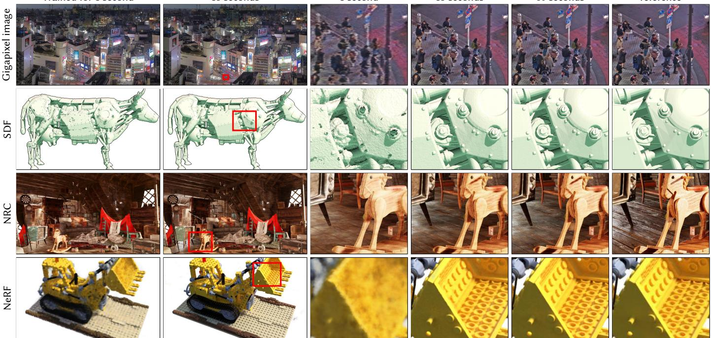<br />
Fig. 1. We demonstrate instant training of neural graphics primitives on a single GPU for multiple tasks. In Gigapixel image we represent a gigapixel image by a neural network. SDF learns a signed distance function in 3D space whose zero level-set represents a 2D surface. Neural radiance caching (NRC) [Müller et al. 2021] em lo s a neural network that is trained in real-time to cache costl li htin calculations. Lastl , NeRF [Mildenhall et al. 2020] uses 2D ima es and their camera <sub>p</sub>oses to reconstruct a volumetric radiance-and-densit<sub>y</sub> field that is visualized usin<sub>g</sub> ra<sub>y</sub> marchin<sub>g</sub>. In all tasks<sub>,</sub> our encodin<sub>g</sub> and its eficient im<sub>p</sub>lementation <sub>p</sub>rovide clear benefits: ra<sub>p</sub>id trainin<sub>g,</sub> hi<sub>g</sub>h <sub>q</sub>ualit<sub>y,</sub> and sim<sub>p</sub>licit<sub>y</sub>. Our encodin<sub>g</sub> is task-a<sub>g</sub>nostic: we use the same im<sub>p</sub>lementation <sub>an</sub>d h<sub>yperparame</sub>t<sub>ers across a</sub>ll t<sub>as</sub>k<sub>s an</sub>d <sub>on</sub>l<sub>y vary</sub> th<sub>e</sub> h<sub>as</sub>h t<sub>a</sub>bl<sub>e s</sub>i<sub>ze w</sub>hi<sub>c</sub>h t<sub>ra</sub>d<sub>es o</sub>f <sub>qua</sub>lit<sub>y an</sub>d <sub>per</sub>f<sub>ormance.</sub> T<sub>o</sub>k<sub>yo g</sub>i<sub>gap</sub>i<sub>xe</sub>l <sub>p</sub>h<sub>o</sub>t<sub>ograp</sub>h ©T<sub>revor</sub> Dobson (CC BY-NC-ND 2.0), Le<sub>g</sub>o bulldozer 3D model ©Håvard Dalen (CC BY-NC 2.0)</p>
<p>Neural <sub>g</sub>ra<sub>p</sub>hics <sub>p</sub>rimitives<sub>,</sub> <sub>p</sub>arameterized b<sub>y</sub> full<sub>y</sub> connected neural net-<sub>wor</sub>k<sub>s, can</sub> b<sub>e cos</sub>tl<sub>y</sub> t<sub>o</sub> t<sub>ra</sub>i<sub>n an</sub>d <sub>eva</sub>l<sub>ua</sub>t<sub>e.</sub> W<sub>e re</sub>d<sub>uce</sub> thi<sub>s cos</sub>t <sub>w</sub>ith <sub>a versa</sub>til<sub>e</sub> <sub>new</sub> i<sub>npu</sub>t <sub>enco</sub>di<sub>ng</sub> th<sub>a</sub>t <sub>perm</sub>it<sub>s</sub> th<sub>e use o</sub>f <sub>a sma</sub>ll<sub>er ne</sub>t<sub>wor</sub>k <sub>w</sub>ith<sub>ou</sub>t <sub>sac-</sub> rificin<sub>g</sub> <sub>q</sub>ualit<sub>y,</sub> thus si<sub>g</sub>nificantl<sub>y</sub> reducin<sub>g</sub> the number of floatin<sub>g</sub> <sub>p</sub>oint <sub>an</sub>d <sub>memory</sub> <sub>access</sub> <sub>opera</sub>ti<sub>ons:</sub> <sub>a</sub> <sub>sma</sub>ll <sub>neura</sub>l <sub>ne</sub>t<sub>wor</sub>k i<sub>s</sub> <sub>augmen</sub>t<sub>e</sub>d b<sub>y</sub> <sub>a</sub></p>
<p>A<sub>u</sub>th<sub>ors</sub>’ <sub>a</sub>dd<sub>resses:</sub> Th<sub>omas</sub> Müll<sub>er,</sub> NVIDIA<sub>,</sub> Zü<sub>r</sub>i<sub>c</sub>h<sub>,</sub> S<sub>w</sub>it<sub>zer</sub>l<sub>an</sub>d<sub>,</sub> t<sub>mue</sub>ll<sub>er@nv</sub>idi<sub>a.</sub> <sub>com;</sub> Al<sub>ex</sub> E<sub>vans,</sub> NVIDIA<sub>,</sub> L<sub>on</sub>d<sub>on,</sub> U<sub>n</sub>it<sub>e</sub>d Ki<sub>ng</sub>d<sub>om, a</sub>l<sub>exe@nv</sub>idi<sub>a.com;</sub> Ch<sub>r</sub>i<sub>s</sub>t<sub>op</sub>h S<sub>c</sub>hi<sub>e</sub>d<sub>,</sub> NVIDIA<sub>,</sub> S<sub>ea</sub>ttl<sub>e,</sub> USA<sub>, csc</sub>hi<sub>e</sub>d<sub>@nv</sub>idi<sub>a.com;</sub> Al<sub>exan</sub>d<sub>er</sub> K<sub>e</sub>ll<sub>er,</sub> NVIDIA<sub>,</sub> B<sub>er</sub>li<sub>n,</sub> G<sub>ermany, a</sub>k<sub>e</sub>ll<sub>er@nv</sub>idi<sub>a.com.</sub></p>
<p><sub>mu</sub>lti<sub>reso</sub>l<sub>u</sub>ti<sub>on</sub> h<sub>as</sub>h t<sub>a</sub>bl<sub>e</sub> <sub>o</sub>f t<sub>ra</sub>i<sub>na</sub>bl<sub>e</sub> f<sub>ea</sub>t<sub>ure</sub> <sub>vec</sub>t<sub>ors</sub> <sub>w</sub>h<sub>ose</sub> <sub>va</sub>l<sub>ues</sub> <sub>are</sub> <sub>op-</sub> ti<sub>m</sub>i<sub>ze</sub>d th<sub>roug</sub>h <sub>s</sub>t<sub>oc</sub>h<sub>as</sub>ti<sub>c gra</sub>di<sub>en</sub>t d<sub>escen</sub>t<sub>.</sub> Th<sub>e mu</sub>lti<sub>reso</sub>l<sub>u</sub>ti<sub>on s</sub>t<sub>ruc</sub>t<sub>ure</sub> <sub>a</sub>ll<sub>ows</sub> th<sub>e ne</sub>t<sub>wor</sub>k t<sub>o</sub> di<sub>sam</sub>bi<sub>gua</sub>t<sub>e</sub> h<sub>as</sub>h <sub>co</sub>lli<sub>s</sub>i<sub>ons, ma</sub>ki<sub>ng</sub> f<sub>or a s</sub>i<sub>mp</sub>l<sub>e</sub> architect<sub>u</sub>re that is trivial to <sub>p</sub>arallelize on modern GPUs. We levera<sub>g</sub>e this <sub>pa</sub>r<sub>a</sub>ll<sub>e</sub>li<sub>s</sub>m b<sub>y</sub> im<sub>p</sub>l<sub>e</sub>m<sub>e</sub>ntin<sub>g</sub> th<sub>e w</sub>h<sub>o</sub>l<sub>e sys</sub>t<sub>e</sub>m <sub>us</sub>in<sub>g</sub> f<sub>u</sub>ll<sub>y</sub>-f<sub>use</sub>d CUDA k<sub>e</sub>r nels with a focus on minimizin<sub>g</sub> wasted bandwidth and com<sub>p</sub>ute o<sub>p</sub>erations. W<sub>e ac</sub>hi<sub>eve a com</sub>bi<sub>ne</sub>d <sub>spee</sub>d<sub>up o</sub>f <sub>severa</sub>l <sub>or</sub>d<sub>ers o</sub>f <sub>magn</sub>it<sub>u</sub>d<sub>e, ena</sub>bli<sub>ng</sub> trainin<sub>g</sub> of hi<sub>g</sub>h-<sub>q</sub>ualit<sub>y</sub> neural <sub>g</sub>ra<sub>p</sub>hics <sub>p</sub>rimitives in a matter of seconds<sub>,</sub> and renderin<sub>g</sub> in tens of milliseconds at a resolution of 1920×1080.</p>
<p>CCS Concepts: • Computing methodologies → Massively parallel algorithms; Vector / streaming algorithms; Neural networks.</p>
<p>Additi<sub>o</sub>n<sub>a</sub>l K<sub>ey</sub> W<sub>o</sub>rd<sub>s a</sub>nd Phr<sub>ases</sub>: Im<sub>age</sub> S<sub>y</sub>nth<sub>es</sub>i<sub>s,</sub> N<sub>eu</sub>r<sub>a</sub>l N<sub>e</sub>t<sub>wo</sub>rk<sub>s,</sub> En-<sub>co</sub>din<sub>gs,</sub> H<sub>as</sub>hin<sub>g,</sub> GPU<sub>s,</sub> P<sub>a</sub>r<sub>a</sub>ll<sub>e</sub>l C<sub>o</sub>m<sub>pu</sub>t<sub>a</sub>ti<sub>o</sub>n<sub>,</sub> F<sub>u</sub>n<sub>c</sub>ti<sub>o</sub>n A<sub>pp</sub>r<sub>o</sub>xim<sub>a</sub>ti<sub>o</sub>n<sub>.</sub></p>
<h2>ACM Reference Format:</h2>
<p>Th<sub>omas</sub> Müll<sub>er,</sub> Al<sub>ex</sub> E<sub>vans,</sub> Ch<sub>r</sub>i<sub>s</sub>t<sub>op</sub>h S<sub>c</sub>hi<sub>e</sub>d<sub>, an</sub>d Al<sub>exan</sub>d<sub>er</sub> K<sub>e</sub>ll<sub>er.</sub> 2022<sub>.</sub> In<sub>s</sub>t<sub>a</sub>nt N<sub>eu</sub>r<sub>a</sub>l Gr<sub>ap</sub>hi<sub>cs</sub> Primiti<sub>ves</sub> <sub>w</sub>ith <sub>a</sub> M<sub>u</sub>ltir<sub>eso</sub>l<sub>u</sub>ti<sub>o</sub>n H<sub>as</sub>h En<sub>co</sub>din<sub>g.</sub> ACM Trans. Graph. 41, 4, Article 102 (July 2022), 15 pages. https://doi.org/10. 1145/3528223.3530127</p>
<h2>1 INTRODUCTION</h2>
<p>Com<sub>p</sub>uter <sub>g</sub>ra<sub>p</sub>hics <sub>p</sub>rimitives are fundamentall<sub>y</sub> re<sub>p</sub>resented b<sub>y</sub> mathematical functions that <sub>p</sub>arameterize a<sub>pp</sub>earance. The <sub>q</sub>ualit<sub>y</sub> <sub>an</sub>d <sub>per</sub>f<sub>ormance</sub> <sub>c</sub>h<sub>arac</sub>t<sub>er</sub>i<sub>s</sub>ti<sub>cs</sub> <sub>o</sub>f th<sub>e</sub> <sub>ma</sub>th<sub>ema</sub>ti<sub>ca</sub>l <sub>represen</sub>t<sub>a</sub>ti<sub>on</sub> <sub>are</sub> <sub>cruc</sub>i<sub>a</sub>l f<sub>or</sub> <sub>v</sub>i<sub>sua</sub>l fid<sub>e</sub>lit<sub>y:</sub> <sub>we</sub> d<sub>es</sub>i<sub>re</sub> <sub>represen</sub>t<sub>a</sub>ti<sub>ons</sub> th<sub>a</sub>t <sub>rema</sub>i<sub>n</sub> f<sub>as</sub>t <sub>an</sub>d <sub>compac</sub>t <sub>w</sub>hil<sub>e cap</sub>t<sub>ur</sub>i<sub>ng</sub> hi<sub>g</sub>h<sub>-</sub>f<sub>requency,</sub> l<sub>oca</sub>l d<sub>e</sub>t<sub>a</sub>il<sub>.</sub> F<sub>unc-</sub> tions represented by multi-layer perceptrons (MLPs), used as neural graphics primitives, have been shown to match these criteria (to var<sub>y</sub>in<sub>g</sub> de<sub>g</sub>ree), for exam<sub>p</sub>le as re<sub>p</sub>resentations of sha<sub>p</sub>e [Martel et al. 2021; Park et al. 2019] and radiance fields [Liu et al. 2020; Mildenhall et al. 2020; Müller et al. 2020, 2021].</p>
<p>The im<sub>p</sub>ortant commonalit<sub>y</sub> of the these a<sub>pp</sub>roaches is an encodin<sub>g</sub> that ma<sub>p</sub>s neural network in<sub>p</sub>uts to a hi<sub>g</sub>her-dimensional s<sub>p</sub>ace<sub>,</sub> which is ke<sub>y</sub> for extractin<sub>g</sub> hi<sub>g</sub>h a<sub>pp</sub>roximation <sub>q</sub>ualit<sub>y</sub> from com-<sub>pac</sub>t <sub>mo</sub>d<sub>e</sub>l<sub>s.</sub> M<sub>os</sub>t <sub>success</sub>f<sub>u</sub>l <sub>among</sub> th<sub>ese enco</sub>di<sub>ngs are</sub> t<sub>ra</sub>i<sub>na</sub>bl<sub>e,</sub> task-s<sub>p</sub>ecific data structures [Liu et al. 2020; Takikawa et al. 2021] th<sub>a</sub>t t<sub>a</sub>k<sub>e on a</sub> l<sub>arge por</sub>ti<sub>on o</sub>f th<sub>e</sub> l<sub>earn</sub>i<sub>ng</sub> t<sub>as</sub>k<sub>.</sub> Thi<sub>s ena</sub>bl<sub>es</sub> th<sub>e use</sub> <sub>o</sub>f <sub>sma</sub>ll<sub>er, more e</sub>fi<sub>c</sub>i<sub>en</sub>t MLP<sub>s.</sub> H<sub>owever, suc</sub>h d<sub>a</sub>t<sub>a s</sub>t<sub>ruc</sub>t<sub>ures re</sub>l<sub>y</sub> on heuristics and structural modifications (such as <sub>p</sub>runin<sub>g</sub>, s<sub>p</sub>littin<sub>g</sub>, or mer<sub>g</sub>in<sub>g</sub>) that ma<sub>y</sub> com<sub>p</sub>licate the trainin<sub>g</sub> <sub>p</sub>rocess, limit th<sub>e</sub> <sub>me</sub>th<sub>o</sub>d t<sub>o</sub> <sub>a</sub> <sub>spec</sub>ifi<sub>c</sub> t<sub>as</sub>k<sub>,</sub> <sub>or</sub> li<sub>m</sub>it <sub>per</sub>f<sub>ormance</sub> <sub>on</sub> GPU<sub>s</sub> <sub>w</sub>h<sub>ere</sub> control flow and <sub>p</sub>ointer chasin<sub>g</sub> is ex<sub>p</sub>ensive.</p>
<p>W<sub>e a</sub>dd<sub>ress</sub> th<sub>ese concerns w</sub>ith <sub>our mu</sub>lti<sub>reso</sub>l<sub>u</sub>ti<sub>on</sub> h<sub>as</sub>h <sub>enco</sub>d<sub>-</sub> i<sub>ng,</sub> <sub>w</sub>hi<sub>c</sub>h i<sub>s</sub> <sub>a</sub>d<sub>ap</sub>ti<sub>ve</sub> <sub>an</sub>d <sub>e</sub>fi<sub>c</sub>i<sub>en</sub>t<sub>,</sub> i<sub>n</sub>d<sub>epen</sub>d<sub>en</sub>t <sub>o</sub>f th<sub>e</sub> t<sub>as</sub>k<sub>.</sub> It i<sub>s</sub> con<sup>fi</sup>gure<sup>d</sup> <sup>b</sup>y just two va<sup>l</sup>ues—t<sup>h</sup>e num<sup>b</sup>er o<sup>f</sup> parameters T an<sup>d</sup> t<sup>h</sup>e d<sub>es</sub>i<sub>re</sub>d fi<sub>nes</sub>t <sub>reso</sub>l<sub>u</sub>ti<sub>on</sub> <math xmlns="http://www.w3.org/1998/Math/MathML" display="inline"><mrow><msub><mi>N</mi><mrow><msup><mrow><mi mathvariant="normal">m</mi><mi mathvariant="normal">a</mi><mi mathvariant="normal">x</mi></mrow><mrow><mo>&#x02212;</mo></mrow></msup></mrow></msub></mrow></math> —<sub>y</sub>ieldin<sub>g</sub> state-of-the-art <sub>q</sub>ualit<sub>y</sub> on a variet<sub>y</sub> of tasks (Fi<sub>g</sub>ure 1) after a few seconds of trainin<sub>g</sub>.</p>
<p>Ke<sub>y</sub> to both the task-inde<sub>p</sub>endent ada<sub>p</sub>tivit<sub>y</sub> and eficienc<sub>y</sub> is a <sub>mu</sub>lti<sub>reso</sub>l<sub>u</sub>ti<sub>on</sub> hi<sub>erarc</sub>h<sub>y o</sub>f h<sub>as</sub>h t<sub>a</sub>bl<sub>es:</sub></p>
<p>• Adaptivity: we map a cascade of grids to corresponding fixed-<sub>s</sub>iz<sub>e a</sub>rr<sub>ays o</sub>f f<sub>ea</sub>t<sub>u</sub>r<sub>e vec</sub>t<sub>o</sub>r<sub>s.</sub> At <sub>coa</sub>r<sub>se</sub> r<sub>eso</sub>l<sub>u</sub>ti<sub>o</sub>n<sub>s,</sub> th<sub>e</sub>r<sub>e</sub> i<sub>s a</sub> 1:1 ma<sub>pp</sub>in<sub>g</sub> from <sub>g</sub>rid <sub>p</sub>oints to arra<sub>y</sub> entries. At fine resolutions<sub>,</sub> the <sub>array</sub> i<sub>s</sub> t<sub>rea</sub>t<sub>e</sub>d <sub>as a</sub> h<sub>as</sub>h t<sub>a</sub>bl<sub>e an</sub>d i<sub>n</sub>d<sub>exe</sub>d <sub>us</sub>i<sub>ng a spa</sub>ti<sub>a</sub>l h<sub>as</sub>h function<sub>,</sub> where multi<sub>p</sub>le <sub>g</sub>rid <sub>p</sub>oints alias each arra<sub>y</sub> entr<sub>y</sub>. Such hash collisions cause the collidin<sub>g</sub> trainin<sub>g</sub> <sub>g</sub>radients to avera<sub>g</sub>e<sub>,</sub> <sub>mean</sub>i<sub>ng</sub> th<sub>a</sub>t th<sub>e</sub> l<sub>arges</sub>t <sub>gra</sub>di<sub>en</sub>t<sub>s—</sub>th<sub>ose mos</sub>t <sub>re</sub>l<sub>evan</sub>t t<sub>o</sub> th<sub>e</sub> loss function—will dominate. The hash tables thus automatically <sub>p</sub>rioritize the s<sub>p</sub>arse areas with the most im<sub>p</sub>ortant fine scale detail. U<sub>n</sub>lik<sub>e pr</sub>i<sub>or wor</sub>k<sub>, no s</sub>t<sub>ruc</sub>t<sub>ura</sub>l <sub>up</sub>d<sub>a</sub>t<sub>es</sub> t<sub>o</sub> th<sub>e</sub> d<sub>a</sub>t<sub>a s</sub>t<sub>ruc</sub>t<sub>ure are</sub> needed at an<sub>y</sub> <sub>p</sub>oint durin<sub>g</sub> trainin<sub>g</sub>.</p>
<p>• Eficiency: our hash table lookups are <math xmlns="http://www.w3.org/1998/Math/MathML" display="inline"><mrow><mi>O</mi><mo stretchy="false">&#x00028;</mo><mn>1</mn><mo stretchy="false">&#x00029;</mo></mrow></math> <sub>an</sub>d d<sub>o no</sub>t <sub>requ</sub>i<sub>re</sub> control flow. This ma<sub>p</sub>s well to modern GPUs<sub>,</sub> avoidin<sub>g</sub> exec<sub>u</sub>tion diver<sub>g</sub>ence and serial <sub>p</sub>ointer-chasin<sub>g</sub> inherent in tree traversals. Th<sub>e</sub> h<sub>as</sub>h t<sub>a</sub>bl<sub>es</sub> f<sub>or</sub> <sub>a</sub>ll <sub>reso</sub>l<sub>u</sub>ti<sub>ons</sub> <sub>may</sub> b<sub>e</sub> <sub>quer</sub>i<sub>e</sub>d i<sub>n</sub> <sub>para</sub>ll<sub>e</sub>l<sub>.</sub></p>
<p>W<sub>e</sub> <sub>va</sub>lid<sub>a</sub>t<sub>e</sub> <sub>our</sub> <sub>mu</sub>lti<sub>reso</sub>l<sub>u</sub>ti<sub>on</sub> h<sub>as</sub>h <sub>enco</sub>di<sub>ng</sub> i<sub>n</sub> f<sub>our</sub> <sub>represen</sub>t<sub>a-</sub> tive tasks (see Fi<sub>g</sub>ure 1):</p>
<p>(1) Gigapixel image: the MLP learns the mapping from 2D coordinates to RGB colors of a hi<sub>g</sub>h-resolution ima<sub>g</sub>e.</p>
<p>(2) Neural signed distance functions (SDF): the MLP learns the ma<sub>pp</sub>in<sub>g</sub> from 3D coordinates to the distance to a surface.</p>
<p>(3) Neural radiance caching (NRC): the MLP learns the 5D light fi<sub>e</sub>ld <sub>o</sub>f <sub>a g</sub>i<sub>ven scene</sub> f<sub>rom a</sub> M<sub>on</sub>t<sub>e</sub> C<sub>ar</sub>l<sub>o pa</sub>th t<sub>racer.</sub></p>
<p>(4) Neural radiance and density fields (NeRF): the MLP learns th<sub>e</sub> 3D d<sub>ens</sub>it<sub>y</sub> <sub>an</sub>d 5D li<sub>g</sub>ht fi<sub>e</sub>ld <sub>o</sub>f <sub>a</sub> <sub>g</sub>i<sub>ven</sub> <sub>scene</sub> f<sub>rom</sub> i<sub>mage</sub> observations and corres<sub>p</sub>ondin<sub>g</sub> <sub>p</sub>ers<sub>p</sub>ective transforms.</p>
<p>Th<sub>e</sub> <sub>source</sub> <sub>co</sub>d<sub>e</sub> <sub>an</sub>d d<sub>a</sub>t<sub>a</sub> <sub>per</sub>t<sub>a</sub>i<sub>n</sub>i<sub>ng</sub> t<sub>o</sub> thi<sub>s</sub> <sub>paper</sub> <sub>can</sub> b<sub>e</sub> f<sub>oun</sub>d at https://nvlabs.github.io/instant-ngp.</p>
<p>I<sub>n</sub> th<sub>e</sub> f<sub>o</sub>ll<sub>ow</sub>i<sub>ng,</sub> <sub>we</sub> fi<sub>rs</sub>t <sub>rev</sub>i<sub>ew</sub> <sub>pr</sub>i<sub>or</sub> <sub>neura</sub>l <sub>ne</sub>t<sub>wor</sub>k <sub>enco</sub>di<sub>ngs</sub> (Section 2), then we describe our encodin<sub>g</sub> (Section 3) and its im<sub>p</sub>lementation (Section 4), followed lastl<sub>y</sub> b<sub>y</sub> our ex<sub>p</sub>eriments (Section 5) and discussion thereof (Section 6).</p>
<h2>2 BACKGROUND AND RELATED WORK</h2>
<p>E<sub>ar</sub>l<sub>y examp</sub>l<sub>es o</sub>f <sub>enco</sub>di<sub>ng</sub> th<sub>e</sub> i<sub>npu</sub>t<sub>s o</sub>f <sub>a mac</sub>hi<sub>ne</sub> l<sub>earn</sub>i<sub>ng mo</sub>d<sub>e</sub>l into a hi<sub>g</sub>her-dimensional s<sub>p</sub>ace include the one-hot encodin<sub>g</sub> [Harris and Harris 2013] and the kernel trick [Theodoridis 2008] b<sub>y</sub> which <sub>comp</sub>l<sub>ex</sub> <sub>arrangemen</sub>t<sub>s</sub> <sub>o</sub>f d<sub>a</sub>t<sub>a</sub> <sub>can</sub> b<sub>e</sub> <sub>ma</sub>d<sub>e</sub> li<sub>near</sub>l<sub>y</sub> <sub>separa</sub>bl<sub>e.</sub></p>
<p>F<sub>or</sub> <sub>neura</sub>l <sub>ne</sub>t<sub>wor</sub>k<sub>s,</sub> i<sub>npu</sub>t <sub>enco</sub>di<sub>ngs</sub> h<sub>ave</sub> <sub>proven</sub> <sub>use</sub>f<sub>u</sub>l i<sub>n</sub> th<sub>e</sub> <sub>a</sub>t<sub>-</sub> tention com<sub>p</sub>onents of recurrent architectures [Gehrin<sub>g</sub> et al. 2017] and, subse<sub>q</sub>uentl<sub>y</sub>, transformers [Vaswani et al. 2017], where the<sub>y</sub> h<sub>e</sub>l<sub>p</sub> th<sub>e neura</sub>l <sub>ne</sub>t<sub>wor</sub>k t<sub>o</sub> id<sub>en</sub>tif<sub>y</sub> th<sub>e</sub> l<sub>oca</sub>ti<sub>on</sub> it i<sub>s curren</sub>tl<sub>y pro-</sub> cessin<sub>g</sub>. Vaswani et al. [2017] encode scalar <sub>p</sub>ositions <math xmlns="http://www.w3.org/1998/Math/MathML" display="inline"><mrow><mi>x</mi><mo>&#x02208;</mo><mrow><mi mathvariant="double-struck">R</mi></mrow></mrow></math> as a multiresolution se<sub>q</sub>uence of L ∈ N sine and cosine functions</p>
<p><div class="math-block"><math xmlns="http://www.w3.org/1998/Math/MathML" display="block"><mrow><mtable><mtr><mtd columnalign="center"><mrow><mo>enc</mo><mo stretchy="false">&#x00028;</mo><mi>x</mi><mo stretchy="false">&#x00029;</mo><mo>&#x0003D;</mo><mrow><mo stretchy="true" fence="true" form="prefix">&#x00028;</mo><mi>sin</mi><mo stretchy="false">&#x00028;</mo><msup><mn>2</mn><mrow><mn>0</mn></mrow></msup><mi>x</mi><mo stretchy="false">&#x00029;</mo><mo>&#x0002C;</mo><mi>sin</mi><mo stretchy="false">&#x00028;</mo><msup><mn>2</mn><mrow><mn>1</mn></mrow></msup><mi>x</mi><mo stretchy="false">&#x00029;</mo><mo>&#x0002C;</mo><mo>&#x02026;</mo><mo>&#x0002C;</mo><mi>sin</mi><mo stretchy="false">&#x00028;</mo><msup><mn>2</mn><mrow><mi>L</mi><mo>&#x02212;</mo><mn>1</mn></mrow></msup><mi>x</mi><mo stretchy="false">&#x00029;</mo><mo>&#x0002C;</mo><mo stretchy="true" fence="true" form="postfix" /></mrow></mrow></mtd></mtr><mtr><mtd columnalign="center"><mrow><mrow><mo stretchy="true" fence="true" form="prefix" /><mi>cos</mi><mo stretchy="false">&#x00028;</mo><msup><mn>2</mn><mrow><mn>0</mn></mrow></msup><mi>x</mi><mo stretchy="false">&#x00029;</mo><mo>&#x0002C;</mo><mi>cos</mi><mo stretchy="false">&#x00028;</mo><msup><mn>2</mn><mrow><mn>1</mn></mrow></msup><mi>x</mi><mo stretchy="false">&#x00029;</mo><mo>&#x0002C;</mo><mo>&#x02026;</mo><mo>&#x0002C;</mo><mi>cos</mi><mo stretchy="false">&#x00028;</mo><msup><mn>2</mn><mrow><mi>L</mi><mo>&#x02212;</mo><mn>1</mn></mrow></msup><mi>x</mi><mo stretchy="false">&#x00029;</mo><mo stretchy="true" fence="true" form="postfix">&#x00029;</mo></mrow><mo>&#x0002E;</mo></mrow></mtd></mtr></mtable></mrow></math><span style="float:right;color:#8A8178">(1)</span></div></p>
<p>This has been ado<sub>p</sub>ted in com<sub>p</sub>uter <sub>g</sub>ra<sub>p</sub>hics to encode the s<sub>p</sub>atiodirectionall<sub>y</sub> var<sub>y</sub>in<sub>g</sub> li<sub>g</sub>ht field and volume densit<sub>y</sub> in the NeRF al<sub>g</sub>orithm [Mildenhall et al. 2020]. The five dimensions of this li<sub>g</sub>ht field are independently encoded using the above formula; this was later extended to randoml<sub>y</sub> oriented <sub>p</sub>arallel wavefronts [Tancik et al. 2020] and level-of-detail filterin<sub>g</sub> [Barron et al. 2021a]. We will refer to this family of encodings as frequency encodings. Notably, f<sub>requency</sub> <sub>enco</sub>di<sub>ngs</sub> f<sub>o</sub>ll<sub>owe</sub>d b<sub>y</sub> <sub>a</sub> li<sub>near</sub> t<sub>rans</sub>f<sub>orma</sub>ti<sub>on</sub> h<sub>ave</sub> b<sub>een</sub> used in other com<sub>p</sub>uter <sub>g</sub>ra<sub>p</sub>hics tasks<sub>,</sub> such as a<sub>pp</sub>roximatin<sub>g</sub> the visibilit<sub>y</sub> function [Annen et al. 2007; Jansen and Bavoil 2010].</p>
<p>Müller et al. [2019; 2020] su<sub>gg</sub>ested a continuous variant of the one-hot encoding based on rasterizing a kernel, the one-blob en-<sub>co</sub>di<sub>ng,</sub> <sub>w</sub>hi<sub>c</sub>h <sub>can</sub> <sub>ac</sub>hi<sub>eve</sub> <sub>more</sub> <sub>accura</sub>t<sub>e</sub> <sub>resu</sub>lt<sub>s</sub> th<sub>an</sub> f<sub>requency</sub> <sub>enco</sub>di<sub>ngs</sub> i<sub>n</sub> b<sub>oun</sub>d<sub>e</sub>d d<sub>oma</sub>i<sub>ns a</sub>t th<sub>e cos</sub>t <sub>o</sub>f b<sub>e</sub>i<sub>ng s</sub>i<sub>ng</sub>l<sub>e-sca</sub>l<sub>e.</sub></p>
<p>Parametric encodings. Recently, state-of-the-art results have been <sub>ac</sub>hi<sub>eve</sub>d b<sub>y parame</sub>t<sub>r</sub>i<sub>c enco</sub>di<sub>ngs w</sub>hi<sub>c</sub>h bl<sub>ur</sub> th<sub>e</sub> li<sub>ne</sub> b<sub>e</sub>t<sub>ween c</sub>l<sub>as-</sub> <sub>s</sub>i<sub>ca</sub>l d<sub>a</sub>t<sub>a s</sub>t<sub>ruc</sub>t<sub>ures an</sub>d <sub>neura</sub>l <sub>approac</sub>h<sub>es.</sub> Th<sub>e</sub> id<sub>ea</sub> i<sub>s</sub> t<sub>o arrange</sub> additional trainable <sub>p</sub>arameters (be<sub>y</sub>ond wei<sub>g</sub>hts and biases) in an auxiliar<sub>y</sub> data structure, such as a <sub>g</sub>rid [Chabra et al. 2020; Jian<sub>g</sub> et al. 2020<sub>;</sub> Liu et al. 2020<sub>;</sub> Mehta et al. 2021<sub>;</sub> Pen<sub>g</sub> et al. 2020a<sub>;</sub> Sun et al. 2021; Tan<sub>g</sub> et al. 2018; Yu et al. 2021a] or a tree [Takikawa et al. 2021], and to look-u<sub>p</sub> and (o<sub>p</sub>tionall<sub>y</sub>) inter<sub>p</sub>olate these <sub>p</sub>arameters de<sub>p</sub>endin<sub>g</sub> on the in<sub>p</sub>ut vector <math xmlns="http://www.w3.org/1998/Math/MathML" display="inline"><mrow><mrow><mi mathvariant="bold">x</mi></mrow><mo>&#x02208;</mo><msup><mrow><mi mathvariant="double-struck">R</mi></mrow><mrow><mi>d</mi></mrow></msup></mrow></math> . This arran<sub>g</sub>ement trades a l<sub>arger memory</sub> f<sub>oo</sub>t<sub>pr</sub>i<sub>n</sub>t f<sub>or a sma</sub>ll<sub>er compu</sub>t<sub>a</sub>ti<sub>ona</sub>l <sub>cos</sub>t<sub>: w</sub>h<sub>ereas</sub> f<sub>or eac</sub>h <sub>gra</sub>di<sub>en</sub>t <sub>propaga</sub>t<sub>e</sub>d b<sub>ac</sub>k<sub>war</sub>d<sub>s</sub> th<sub>roug</sub>h th<sub>e ne</sub>t<sub>wor</sub>k<sub>, every</sub> <sub>we</sub>i<sub>g</sub>ht i<sub>n</sub> th<sub>e</sub> f<sub>u</sub>ll<sub>y connec</sub>t<sub>e</sub>d MLP <sub>ne</sub>t<sub>wor</sub>k <sub>mus</sub>t b<sub>e up</sub>d<sub>a</sub>t<sub>e</sub>d<sub>,</sub> f<sub>or</sub> the trainable in<sub>p</sub>ut encodin<sub>g p</sub>arameters (“feature vectors”), onl<sub>y</sub> <sub>a very sma</sub>ll <sub>num</sub>b<sub>er are a</sub>f<sub>ec</sub>t<sub>e</sub>d<sub>.</sub> F<sub>or examp</sub>l<sub>e, w</sub>ith <sub>a</sub> t<sub>r</sub>ili<sub>near</sub>l<sub>y</sub> inter<sub>p</sub>olated 3D <sub>g</sub>rid of feature vectors<sub>,</sub> onl<sub>y</sub> 8 such <sub>g</sub>rid <sub>p</sub>oints need t<sub>o</sub> b<sub>e</sub> <sub>up</sub>d<sub>a</sub>t<sub>e</sub>d f<sub>or</sub> <sub>eac</sub>h <sub>samp</sub>l<sub>e</sub> b<sub>ac</sub>k<sub>-propaga</sub>t<sub>e</sub>d t<sub>o</sub> th<sub>e</sub> <sub>enco</sub>di<sub>ng.</sub> I<sub>n</sub> thi<sub>s way, a</sub>lth<sub>oug</sub>h th<sub>e</sub> t<sub>o</sub>t<sub>a</sub>l <sub>num</sub>b<sub>er o</sub>f <sub>parame</sub>t<sub>ers</sub> i<sub>s muc</sub>h hi<sub>g</sub>h<sub>er</sub> f<sub>or</sub> <sub>a</sub> <sub>parame</sub>t<sub>r</sub>i<sub>c</sub> <sub>enco</sub>di<sub>ng</sub> th<sub>an</sub> <sub>a</sub> fi<sub>xe</sub>d i<sub>npu</sub>t <sub>enco</sub>di<sub>ng,</sub> th<sub>e</sub> <sub>num</sub>b<sub>er</sub> of FLOPs and memor<sub>y</sub> accesses re<sub>q</sub>uired for the u<sub>p</sub>date durin<sub>g</sub> trainin<sub>g</sub> is not increased si<sub>g</sub>nificantl<sub>y</sub>. B<sub>y</sub> reducin<sub>g</sub> the size of the MLP<sub>,</sub> such <sub>p</sub>arametric models can t<sub>yp</sub>icall<sub>y</sub> be trained to conver<sub>g</sub>ence much faster without sacrificin<sub>g</sub> a<sub>pp</sub>roximation <sub>q</sub>ualit<sub>y</sub>.</p>
<p>(a) No encoding<br />
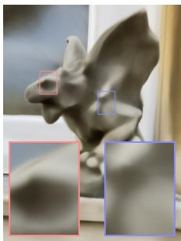<br />
411 <sup>k</sup> + 0 <sub>p</sub>arameters<br />
11:28 (mm:ss) / PSNR 18.56</p>
<p>(b) Frequency [Mildenhall et al. 2020]<br />
<br />
438 k <sub>+</sub> 0<br />
12:45 / PSNR 22<sub>.</sub>90</p>
<p>(c) Dense grid Sin<sub>g</sub>le resolution<br />
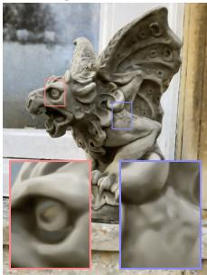<br />
10 k <sub>+</sub> 33<sub>.</sub>6 M1:09 / PSNR 22<sub>.</sub>35</p>
<p>(d) Dense grid M<sub>u</sub>lti <sub>reso</sub>l<sub>u</sub>ti<sub>on</sub><br />
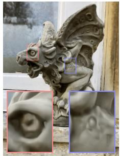<br />
10 k <sub>+</sub> 16<sub>.</sub>3 M<br />
1:26 / PSNR 23<sub>.</sub>62</p>
<p>(e) Hash table (ours) T = 2<sup>14</sup><br />
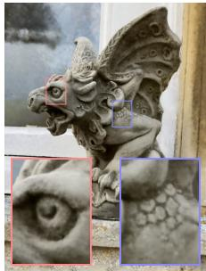<br />
10 k <sub>+</sub> 494 k<br />
1:48 / PSNR 22<sub>.</sub>61</p>
<p>(f) Hash table (ours)<br />
<br />
10 k <sub>+</sub> 12<sub>.</sub>6 M<br />
1:47 / PSNR 24<sub>.</sub>58<br />
Fi<sub>g</sub>. 2. A demonstration of the reconstruction <sub>q</sub>ualit<sub>y</sub> of diferent encodin<sub>g</sub>s and <sub>p</sub>arametric data structures for storin<sub>g</sub> trainable feature embeddin<sub>g</sub>s. Each confi<sub>g</sub>uration was trained for 11 000 ste<sub>p</sub>s usin<sub>g</sub> our fast NeRF im<sub>p</sub>lementation (Section 5.4), var<sub>y</sub>in<sub>g</sub> onl<sub>y</sub> the in<sub>p</sub>ut encodin<sub>g</sub> and MLP size. The number of trainable <sub>p</sub>arameters (MLP wei<sub>g</sub>hts + encodin<sub>g</sub> <sub>p</sub>arameters), trainin<sub>g</sub> time and reconstruction accurac<sub>y</sub> (PSNR) are shown below each ima<sub>g</sub>e. Our encodin<sub>g</sub> (e) with a similar total number of trainable parameters as the frequency encoding configuration (b) trains over 8× faster, due to the sparsity of updates to the parameters and smaller MLP. Increasing the number of parameters (f) further improves reconstruction accuracy without significantly increasing training time.</p>
<p>An<sub>o</sub>th<sub>e</sub>r <sub>pa</sub>r<sub>a</sub>m<sub>e</sub>tri<sub>c app</sub>r<sub>oac</sub>h <sub>uses a</sub> tr<sub>ee su</sub>bdi<sub>v</sub>i<sub>s</sub>i<sub>o</sub>n <sub>o</sub>f th<sub>e</sub> d<sub>o</sub>- m<sub>a</sub>in <math xmlns="http://www.w3.org/1998/Math/MathML" display="inline"><mrow><msup><mrow><mi mathvariant="double-struck">R</mi></mrow><mrow><mi>d</mi></mrow></msup></mrow></math> , wherein a large auxiliary coordinate encoder neural network (ACORN) [Martel et al. 2021] is trained to out<sub>p</sub>ut dense feature grids in the leaf node around x. These dense feature grids, which h<sub>ave</sub> <sub>on</sub> th<sub>e</sub> <sub>or</sub>d<sub>er</sub> <sub>o</sub>f 10 000 <sub>en</sub>t<sub>r</sub>i<sub>es,</sub> <sub>are</sub> th<sub>en</sub> li<sub>near</sub>l<sub>y</sub> i<sub>n</sub>t<sub>erpo</sub>l<sub>a</sub>t<sub>e</sub>d<sub>,</sub> <sub>as</sub> in Liu et al. [2020]. This a<sub>pp</sub>roach tends to <sub>y</sub>ield a lar<sub>g</sub>er de<sub>g</sub>ree of ada<sub>p</sub>tivit<sub>y</sub> com<sub>p</sub>ared with the <sub>p</sub>revious <sub>p</sub>arametric encodin<sub>g</sub>s<sub>,</sub> albeit <sub>a</sub>t <sub>grea</sub>t<sub>er</sub> <sub>compu</sub>t<sub>a</sub>ti<sub>ona</sub>l <sub>cos</sub>t <sub>w</sub>hi<sub>c</sub>h <sub>can</sub> <sub>on</sub>l<sub>y</sub> b<sub>e</sub> <sub>amor</sub>ti<sub>ze</sub>d <sub>w</sub>h<sub>en</sub> suficiently many inputs x fall into each leaf node.</p>
<p>Sparse parametric encodings. While existing parametric encodin<sub>g</sub>s tend to <sub>y</sub>ield much <sub>g</sub>reater accurac<sub>y</sub> than their non-<sub>p</sub>arametric <sub>pre</sub>d<sub>ecessors,</sub> th<sub>ey</sub> <sub>a</sub>l<sub>so</sub> <sub>come</sub> <sub>w</sub>ith d<sub>owns</sub>id<sub>es</sub> i<sub>n</sub> <sub>e</sub>fi<sub>c</sub>i<sub>ency</sub> <sub>an</sub>d <sub>versa-</sub> tilit<sub>y</sub>. Dense <sub>g</sub>rids oftrainable features consume much more memor<sub>y</sub> th<sub>an</sub> th<sub>e</sub> <sub>neura</sub>l <sub>ne</sub>t<sub>wor</sub>k <sub>we</sub>i<sub>g</sub>ht<sub>s.</sub> T<sub>o</sub> ill<sub>us</sub>t<sub>ra</sub>t<sub>e</sub> th<sub>e</sub> t<sub>ra</sub>d<sub>e-o</sub>f<sub>s</sub> <sub>an</sub>d t<sub>o</sub> <sub>mo</sub>ti<sub>va</sub>t<sub>e our me</sub>th<sub>o</sub>d<sub>,</sub> Fi<sub>gure</sub> 2 <sub>s</sub>h<sub>ows</sub> th<sub>e e</sub>f<sub>ec</sub>t <sub>on recons</sub>t<sub>ruc</sub>ti<sub>on</sub> <sub>qua</sub>lit<sub>y</sub> <sub>o</sub>f <sub>a</sub> <sub>neura</sub>l <sub>ra</sub>di<sub>ance</sub> fi<sub>e</sub>ld f<sub>or</sub> <sub>severa</sub>l dif<sub>eren</sub>t <sub>enco</sub>di<sub>ngs.</sub> Without any input encoding at all (a), the network is only able to learn a fairl<sub>y</sub> smooth function of <sub>p</sub>osition<sub>,</sub> resultin<sub>g</sub> in a <sub>p</sub>oor a<sub>p</sub>- proximation of the light field. The frequency encoding (b) allows the same moderatel<sub>y</sub> sized network (8 hidden la<sub>y</sub>ers, each 256 wide) to represent the scene much more accurately. The middle image (c) <sub>pa</sub>i<sub>rs a sma</sub>ll<sub>er ne</sub>t<sub>wor</sub>k <sub>w</sub>ith <sub>a</sub> d<sub>ense gr</sub>id <sub>o</sub>f <math xmlns="http://www.w3.org/1998/Math/MathML" display="inline"><mrow><mn>1</mn><mn>2</mn><msup><mn>8</mn><mrow><mn>3</mn></mrow></msup></mrow></math> trilinearl<sub>y</sub> inter-<sub>po</sub>l<sub>a</sub>t<sub>e</sub>d<sub>,</sub> 16<sub>-</sub>di<sub>mens</sub>i<sub>ona</sub>l f<sub>ea</sub>t<sub>ure vec</sub>t<sub>ors,</sub> f<sub>or a</sub> t<sub>o</sub>t<sub>a</sub>l <sub>o</sub>f 33<sub>.</sub>6 <sub>m</sub>illi<sub>on</sub> t<sub>ra</sub>i<sub>na</sub>bl<sub>e parame</sub>t<sub>ers.</sub> Th<sub>e</sub> l<sub>arge num</sub>b<sub>er o</sub>f t<sub>ra</sub>i<sub>na</sub>bl<sub>e parame</sub>t<sub>ers can</sub> b<sub>e e</sub>fi<sub>c</sub>i<sub>en</sub>tl<sub>y up</sub>d<sub>a</sub>t<sub>e</sub>d<sub>, as eac</sub>h <sub>samp</sub>l<sub>e on</sub>l<sub>y a</sub>f<sub>ec</sub>t<sub>s</sub> 8 <sub>gr</sub>id <sub>po</sub>i<sub>n</sub>t<sub>s.</sub></p>
<p>However<sub>,</sub> the dense <sub>g</sub>rid is wasteful in two wa<sub>y</sub>s. First<sub>,</sub> it allocates as man<sub>y</sub> features to areas of em<sub>p</sub>t<sub>y</sub> s<sub>p</sub>ace as it does to those areas <sub>near</sub> th<sub>e sur</sub>f<sub>ace.</sub> Th<sub>e num</sub>b<sub>er o</sub>f <sub>parame</sub>t<sub>ers grows as</sub> <math xmlns="http://www.w3.org/1998/Math/MathML" display="inline"><mrow><mi>O</mi><mo stretchy="false">&#x00028;</mo><msup><mi>N</mi><mrow><mn>3</mn></mrow></msup><mo stretchy="false">&#x00029;</mo></mrow></math> <sub>,</sub> <sub>w</sub>hil<sub>e</sub> th<sub>e v</sub>i<sub>s</sub>ibl<sub>e sur</sub>f<sub>ace o</sub>f i<sub>n</sub>t<sub>eres</sub>t h<sub>as sur</sub>f<sub>ace area</sub> th<sub>a</sub>t <sub>grows on</sub>l<sub>y as</sub> <math xmlns="http://www.w3.org/1998/Math/MathML" display="inline"><mrow><mi>O</mi><mo stretchy="false">&#x00028;</mo><msup><mi>N</mi><mrow><mn>2</mn></mrow></msup><mo stretchy="false">&#x00029;</mo></mrow></math> ). In this exam<sub>p</sub>le, the <sub>g</sub>rid has resolution 128<sup>3</sup>, but onl<sub>y</sub> 53 807 (2.57%) of its cells touch the visible surface.</p>
<p>S<sub>econ</sub>d<sub>,</sub> <sub>na</sub>t<sub>ura</sub>l <sub>scenes</sub> <sub>ex</sub>hibit <sub>smoo</sub>th<sub>ness,</sub> <sub>mo</sub>ti<sub>va</sub>ti<sub>ng</sub> th<sub>e</sub> <sub>use</sub> of a multi-resolution decom<sub>p</sub>osition [Chibane et al. 2020; Hadadan et al. 2021]. Figure 2 (d) shows the result of using an encoding in <sub>w</sub>hi<sub>c</sub>h i<sub>n</sub>t<sub>erpo</sub>l<sub>a</sub>t<sub>e</sub>d f<sub>ea</sub>t<sub>ures are s</sub>t<sub>ore</sub>d i<sub>n e</sub>i<sub>g</sub>ht <sub>co-</sub>l<sub>oca</sub>t<sub>e</sub>d <sub>gr</sub>id<sub>s w</sub>ith <sub>reso</sub>l<sub>u</sub>ti<sub>ons</sub> f<sub>rom</sub> <math xmlns="http://www.w3.org/1998/Math/MathML" display="inline"><mrow><mn>1</mn><msup><mn>6</mn><mrow><mn>3</mn></mrow></msup></mrow></math> to <math xmlns="http://www.w3.org/1998/Math/MathML" display="inline"><mrow><mn>1</mn><mn>7</mn><msup><mn>3</mn><mrow><mn>3</mn></mrow></msup></mrow></math> <sub>,</sub> each containin<sub>g</sub> 2-dimensional feature vectors. These are concatenated to form a 16-dimensional (same as (c)) input to the network. Despite having less than half the number of parameters as (c), the reconstruction quality is similar.</p>
<p>If th<sub>e sur</sub>f<sub>ace o</sub>f i<sub>n</sub>t<sub>eres</sub>t i<sub>s</sub> k<sub>nown a pr</sub>i<sub>or</sub>i<sub>, a</sub> d<sub>a</sub>t<sub>a s</sub>t<sub>ruc</sub>t<sub>ure suc</sub>h as an octree [Takikawa et al. 2021] or s<sub>p</sub>arse <sub>g</sub>rid [Chabra et al. 2020; Chibane et al. 2020; Hadadan et al. 2021; Jian<sub>g</sub> et al. 2020; Liu et al. 2020; Pen<sub>g</sub> et al. 2020a] can be used to cull awa<sub>y</sub> the unused features in the dense <sub>g</sub>rid. However<sub>,</sub> in the NeRF settin<sub>g,</sub> surfaces onl<sub>y</sub> emer<sub>g</sub>e durin<sub>g</sub> trainin<sub>g</sub>. NSVF [Liu et al. 2020] and several concurrent works [Sun et al. 2021; Yu et al. 2021a] ado<sub>p</sub>t a multi sta<sub>g</sub>e<sub>,</sub> coarse to fine strate<sub>gy</sub> in which re<sub>g</sub>ions of the feature <sub>g</sub>rid are <sub>progress</sub>i<sub>ve</sub>l<sub>y</sub> <sub>re</sub>fi<sub>ne</sub>d <sub>an</sub>d <sub>cu</sub>ll<sub>e</sub>d <sub>away</sub> <sub>as</sub> <sub>necessary.</sub> Whil<sub>e</sub> <sub>e</sub>f<sub>ec</sub>ti<sub>ve,</sub> this leads to a more com<sub>p</sub>lex trainin<sub>g</sub> <sub>p</sub>rocess in which the s<sub>p</sub>arse d<sub>a</sub>t<sub>a s</sub>t<sub>ruc</sub>t<sub>ure mus</sub>t b<sub>e per</sub>i<sub>o</sub>di<sub>ca</sub>ll<sub>y up</sub>d<sub>a</sub>t<sub>e</sub>d<sub>.</sub></p>
<p>Our method—Figure 2 (e,f)—combines both ideas to reduce waste. W<sub>e s</sub>t<sub>ore</sub> th<sub>e</sub> t<sub>ra</sub>i<sub>na</sub>bl<sub>e</sub> f<sub>ea</sub>t<sub>ure vec</sub>t<sub>ors</sub> i<sub>n a compac</sub>t <sub>spa</sub>ti<sub>a</sub>l h<sub>as</sub>h t<sub>a</sub>bl<sub>e,</sub> <sub>w</sub>h<sub>ose s</sub>i<sub>ze</sub> i<sub>s a</sub> h<sub>yper-parame</sub>t<sub>er</sub> T <sub>w</sub>hi<sub>c</sub>h <sub>can</sub> b<sub>e</sub> t<sub>une</sub>d t<sub>o</sub> t<sub>ra</sub>d<sub>e</sub> th<sub>e</sub> number of <sub>p</sub>arameters for reconstruction <sub>q</sub>ualit<sub>y</sub>. It neither relies on <sub>p</sub>ro<sub>g</sub>ressive <sub>p</sub>runin<sub>g</sub> durin<sub>g</sub> trainin<sub>g</sub> nor on a <sub>p</sub>riori knowled<sub>g</sub>e of the geometry of the scene. Analogous to the multi-resolution grid in (d), <sub>we use mu</sub>lti<sub>p</sub>l<sub>e separa</sub>t<sub>e</sub> h<sub>as</sub>h t<sub>a</sub>bl<sub>es</sub> i<sub>n</sub>d<sub>exe</sub>d <sub>a</sub>t dif<sub>eren</sub>t <sub>reso</sub>l<sub>u</sub>ti<sub>ons,</sub> <sub>w</sub>h<sub>ose</sub> i<sub>n</sub>t<sub>erpo</sub>l<sub>a</sub>t<sub>e</sub>d <sub>ou</sub>t<sub>pu</sub>t<sub>s are conca</sub>t<sub>ena</sub>t<sub>e</sub>d b<sub>e</sub>f<sub>ore</sub> b<sub>e</sub>i<sub>ng passe</sub>d thro<sub>ug</sub>h the MLP. The reconstr<sub>u</sub>ction <sub>qu</sub>alit<sub>y</sub> is com<sub>p</sub>arable to the dense <sub>g</sub>rid encodin<sub>g</sub>, des<sub>p</sub>ite havin<sub>g</sub> 20× fewer <sub>p</sub>arameters.</p>
<p>Unlike <sub>p</sub>rior work that used s<sub>p</sub>atial hashin<sub>g</sub> [Teschner et al. 2003] for 3D reconstruction [Nießner et al. 2013], we do not ex<sub>p</sub>licitl<sub>y</sub> handl<sub>e co</sub>lli<sub>s</sub>i<sub>ons o</sub>f th<sub>e</sub> h<sub>as</sub>h f<sub>unc</sub>ti<sub>ons</sub> b<sub>y</sub> t<sub>yp</sub>i<sub>ca</sub>l <sub>means</sub> lik<sub>e pro</sub>bi<sub>ng,</sub> b<sub>uc</sub>k<sub>e</sub>ti<sub>ng, or c</sub>h<sub>a</sub>i<sub>n</sub>i<sub>ng.</sub> I<sub>ns</sub>t<sub>ea</sub>d<sub>, we re</sub>l<sub>y on</sub> th<sub>e neura</sub>l <sub>ne</sub>t<sub>wor</sub>k t<sub>o</sub> l<sub>earn</sub> t<sub>o</sub> di<sub>sam</sub>bi<sub>gua</sub>t<sub>e</sub> h<sub>as</sub>h <sub>co</sub>lli<sub>s</sub>i<sub>ons</sub> it<sub>se</sub>lf<sub>, avo</sub>idi<sub>ng con</sub>t<sub>ro</sub>l fl<sub>ow</sub> diver<sub>g</sub>ence<sub>,</sub> reducin<sub>g</sub> im<sub>p</sub>lementation com<sub>p</sub>lexit<sub>y</sub> and im<sub>p</sub>rovin<sub>g</sub> <sub>per</sub>f<sub>ormance.</sub> A<sub>no</sub>th<sub>er per</sub>f<sub>ormance</sub> b<sub>ene</sub>fit i<sub>s</sub> th<sub>e pre</sub>di<sub>c</sub>t<sub>a</sub>bl<sub>e mem-</sub> <sub>ory</sub> l<sub>ayou</sub>t <sub>o</sub>f th<sub>e</sub> h<sub>as</sub>h t<sub>a</sub>bl<sub>es</sub> th<sub>a</sub>t i<sub>s</sub> i<sub>n</sub>d<sub>epen</sub>d<sub>en</sub>t <sub>o</sub>f th<sub>e</sub> d<sub>a</sub>t<sub>a</sub> th<sub>a</sub>t i<sub>s</sub> <sub>represen</sub>t<sub>e</sub>d<sub>.</sub> Whil<sub>e</sub> <sub>goo</sub>d <sub>cac</sub>hi<sub>ng</sub> b<sub>e</sub>h<sub>av</sub>i<sub>or</sub> i<sub>s</sub> <sub>o</sub>ft<sub>en</sub> h<sub>ar</sub>d t<sub>o</sub> <sub>ac</sub>hi<sub>eve</sub> <sub>w</sub>ith t<sub>ree-</sub>lik<sub>e</sub> d<sub>a</sub>t<sub>a s</sub>t<sub>ruc</sub>t<sub>ures, our</sub> h<sub>as</sub>h t<sub>a</sub>bl<sub>es can</sub> b<sub>e</sub> fi<sub>ne-</sub>t<sub>une</sub>d f<sub>or</sub> l<sub>ow-</sub>l<sub>eve</sub>l <sub>arc</sub>hit<sub>ec</sub>t<sub>ura</sub>l d<sub>e</sub>t<sub>a</sub>il<sub>s suc</sub>h <sub>as cac</sub>h<sub>e s</sub>i<sub>ze.</sub></p>
<p>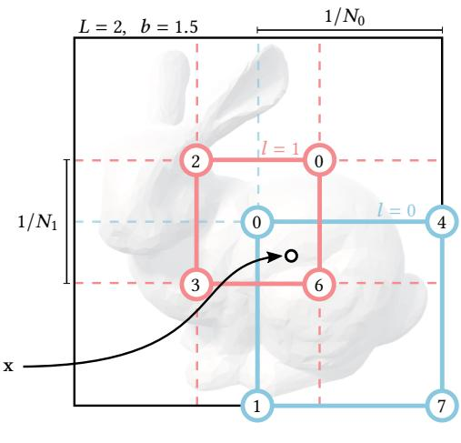</p>
<p>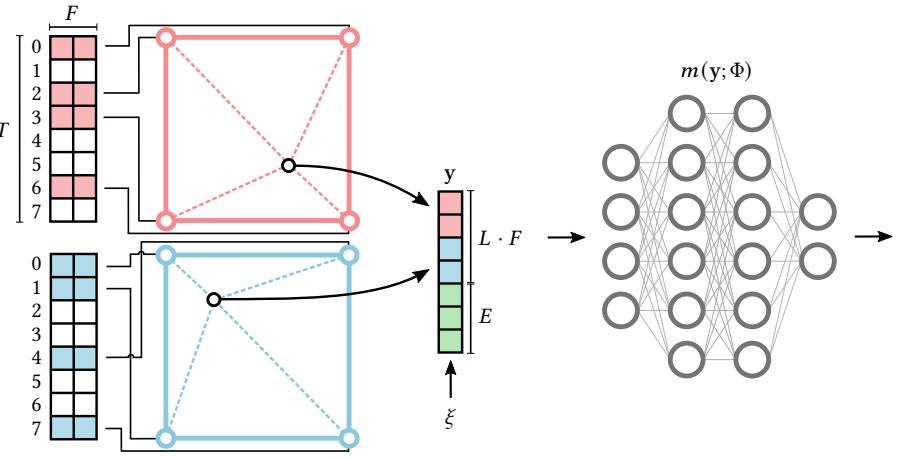<br />
Fig. 3. Illustration of the multiresolution hash encoding in 2D. (1) for a given input coordinate x, we find the surrounding voxels at L resolution levels and assign indices to their corners by hashing their integer coordinates. (2) for all resulting corner indices, we look up the corresponding F-dimensional feature <sub>vec</sub>t<sub>ors</sub> f<sub>rom</sub> th<sub>e</sub> h<sub>as</sub>h t<sub>a</sub>bl<sub>es</sub> <math xmlns="http://www.w3.org/1998/Math/MathML" display="inline"><mrow><msub><mi>&#x003B8;</mi><mrow><mi>l</mi></mrow></msub></mrow></math> and (3) linearly interpolate them according to the relative position of x within the respective l-th voxel. (4) we concatenate the <sub>resu</sub>lt <sub>o</sub>f <sub>eac</sub>h l<sub>eve</sub>l<sub>, as we</sub>ll <sub>as aux</sub>ili<sub>ary</sub> i<sub>npu</sub>t<sub>s</sub> <math xmlns="http://www.w3.org/1998/Math/MathML" display="inline"><mrow><mrow><mi mathvariant="bold-italic">&#x003BE;</mi></mrow><mo>&#x02208;</mo><msup><mrow><mi mathvariant="double-struck">R</mi></mrow><mrow><mi>E</mi></mrow></msup></mrow></math> <sub>, ro</sub>d<sub>uc</sub>i<sub>n</sub> th<sub>e enco</sub>d<sub>e</sub>d MLP i<sub>n u</sub>t <math xmlns="http://www.w3.org/1998/Math/MathML" display="inline"><mrow><mrow><mi mathvariant="bold-italic">y</mi></mrow><mo>&#x02208;</mo><msup><mrow><mi mathvariant="double-struck">R</mi></mrow><mrow><mi>L</mi><mi>F</mi><mo>&#x0002B;</mo><mi>E</mi></mrow></msup></mrow></math> , which (5) is evaluated last. To train the encoding, loss <sub>gra</sub>di<sub>en</sub>t<sub>s are</sub> b<sub>ac</sub>k<sub>propaga</sub>t<sub>e</sub>d th<sub>roug</sub>h th<sub>e</sub> <math xmlns="http://www.w3.org/1998/Math/MathML" display="inline"><mrow><mrow><mrow><mtext>&#x000A0;</mtext><mtext mathvariant="script">&#x000A0;</mtext><mi mathvariant="script">M</mi><mi mathvariant="script">L</mi><mi mathvariant="script">P</mi><mtext mathvariant="script">&#x000A0;</mtext></mrow></mrow><mo stretchy="false">&#x00028;</mo><mn>5</mn><mo stretchy="false">&#x00029;</mo></mrow></math> , the concatenation (4), the linear interpolation (3), and then accumulated in the looked-up feature vectors.</p>
<p>Table 1. Hash encodin<sub>g p</sub>arameters and their ran<sub>g</sub>es in this <sub>p</sub>a<sub>p</sub>er. Onl<sub>y</sub> the h<sub>as</sub>h t<sub>a</sub>bl<sub>e s</sub>i<sub>ze</sub> T <sub>an</sub>d <sub>max. reso</sub>l<sub>u</sub>ti<sub>on</sub> <math xmlns="http://www.w3.org/1998/Math/MathML" display="inline"><mrow><msub><mi>N</mi><mrow><mrow><mi mathvariant="normal">m</mi><mi mathvariant="normal">a</mi><mi mathvariant="normal">x</mi></mrow></mrow></msub></mrow></math> <sub>nee</sub>d t<sub>o</sub> b<sub>e</sub> t<sub>une</sub>d t<sub>o</sub> th<sub>e</sub> t<sub>as</sub>k<sub>.</sub></p>
<table><tr><td>Parameter</td><td>Symbol</td><td>Value</td></tr><tr><td>Number of levels</td><td>L</td><td>16</td></tr><tr><td>Max. entries per level (hash table size)</td><td>T</td><td> <math xmlns="http://www.w3.org/1998/Math/MathML" display="inline"><mrow><msup><mn>2</mn><mrow><mn>1</mn><mn>4</mn></mrow></msup><mtext>&#x000A0;</mtext><mi>:</mi><mrow><mi mathvariant="normal">t</mi><mi mathvariant="normal">o</mi></mrow><mtext>&#x000A0;</mtext><mi>:</mi><msup><mn>2</mn><mrow><mn>2</mn><mn>4</mn></mrow></msup></mrow></math> </td></tr><tr><td>Number of feature dimensions per entry</td><td>F</td><td>2</td></tr><tr><td>Coarsest resolution</td><td> <math xmlns="http://www.w3.org/1998/Math/MathML" display="inline"><mrow><msub><mi>N</mi><mrow><mrow><mi mathvariant="normal">m</mi><mi mathvariant="normal">i</mi><mi mathvariant="normal">n</mi></mrow></mrow></msub></mrow></math> </td><td>16</td></tr><tr><td>Finest resolution</td><td> <math xmlns="http://www.w3.org/1998/Math/MathML" display="inline"><mrow><msub><mi>N</mi><mrow><mrow><mi mathvariant="normal">m</mi><mi mathvariant="normal">a</mi><mi mathvariant="normal">x</mi></mrow></mrow></msub></mrow></math> </td><td>512 to 524288</td></tr></table>

<h2>3 MULTIRESOLUTION HASH ENCODING</h2>
<p>Given a fully connected neural network m(y; Φ), we are interested in an encoding of its inputs <math xmlns="http://www.w3.org/1998/Math/MathML" display="inline"><mrow><mrow><mi mathvariant="bold">y</mi></mrow><mo>&#x0003D;</mo><mo>enc</mo><mo stretchy="false">&#x00028;</mo><mrow><mi mathvariant="bold">x</mi></mrow><mi>;</mi><mi>&#x003B8;</mi><mo stretchy="false">&#x00029;</mo></mrow></math> that im<sub>p</sub>roves the a<sub>pp</sub>roximation <sub>q</sub>ualit<sub>y</sub> and trainin<sub>g</sub> s<sub>p</sub>eed across a wide ran<sub>g</sub>e of a<sub>pp</sub>lications <sub>w</sub>ith<sub>ou</sub>t i<sub>ncurr</sub>i<sub>ng a no</sub>t<sub>a</sub>bl<sub>e per</sub>f<sub>ormance over</sub>h<sub>ea</sub>d<sub>.</sub> O<sub>ur neura</sub>l <sub>ne</sub>t<sub>-</sub> work not onl<sub>y</sub> has trainable wei<sub>g</sub>ht <sub>p</sub>arameters Φ, but also trainable <sub>enco</sub>di<sub>ng</sub> <sub>parame</sub>t<sub>ers</sub> θ<sub>.</sub> Th<sub>ese</sub> <sub>are</sub> <sub>arrange</sub>d i<sub>n</sub>t<sub>o</sub> L l<sub>eve</sub>l<sub>s,</sub> <sub>eac</sub>h <sub>con-</sub> tainin<sub>g</sub> u<sub>p</sub> to T feature vectors with dimensionalit<sub>y</sub> F . T<sub>yp</sub>ical values for these h<sub>yp</sub>er<sub>p</sub>arameters are shown in Table 1. Fi<sub>g</sub>ure 3 illustrates th<sub>e s</sub>t<sub>eps per</sub>f<sub>orme</sub>d i<sub>n our mu</sub>lti<sub>reso</sub>l<sub>u</sub>ti<sub>on</sub> h<sub>as</sub>h <sub>enco</sub>di<sub>ng.</sub> E<sub>ac</sub>h level (two of which are shown as red and blue in the fi<sub>g</sub>ure) is inde-<sub>pen</sub>d<sub>en</sub>t <sub>an</sub>d <sub>concep</sub>t<sub>ua</sub>ll<sub>y</sub> <sub>s</sub>t<sub>ores</sub> f<sub>ea</sub>t<sub>ure</sub> <sub>vec</sub>t<sub>ors</sub> <sub>a</sub>t th<sub>e</sub> <sub>ver</sub>ti<sub>ces</sub> <sub>o</sub>f <sub>a</sub> <sub>g</sub>rid<sub>,</sub> the resolution of which is chosen to be a <sub>g</sub>eometric <sub>p</sub>ro<sub>g</sub>ression b<sub>e</sub>t<sub>ween</sub> th<sub>e coarses</sub>t <sub>an</sub>d fi<sub>nes</sub>t <sub>reso</sub>l<sub>u</sub>ti<sub>ons</sub> <math xmlns="http://www.w3.org/1998/Math/MathML" display="inline"><mrow><mo stretchy="false">[</mo><msub><mi>N</mi><mrow><mrow><mi mathvariant="normal">m</mi><mi mathvariant="normal">i</mi><mi mathvariant="normal">n</mi></mrow></mrow></msub><mo>&#x0002C;</mo><msub><mi>N</mi><mrow><mrow><mi mathvariant="normal">m</mi><mi mathvariant="normal">a</mi><mi mathvariant="normal">x</mi></mrow></mrow></msub><mo stretchy="false">]</mo></mrow></math></p>
<p><div class="math-block"><math xmlns="http://www.w3.org/1998/Math/MathML" display="block"><mrow><msub><mi>N</mi><mrow><mi>l</mi></mrow></msub><mi>:</mi><mo>&#x0003D;</mo><mrow><mo stretchy="true" fence="true" form="prefix">&#x0230A;</mo><msub><mi>N</mi><mrow><mrow><mi mathvariant="normal">m</mi><mi mathvariant="normal">i</mi><mi mathvariant="normal">n</mi></mrow></mrow></msub><mo>&#x000B7;</mo><msup><mi>b</mi><mrow><mi>l</mi></mrow></msup><mo stretchy="true" fence="true" form="postfix">&#x0230B;</mo></mrow><mo>&#x0002C;</mo></mrow></math><span style="float:right;color:#8A8178">(2)</span></div></p>
<p><div class="math-block"><math xmlns="http://www.w3.org/1998/Math/MathML" display="block"><mrow><mi>b</mi><mi>:</mi><mo>&#x0003D;</mo><mi>exp</mi><mrow><mo stretchy="true" fence="true" form="prefix">&#x00028;</mo><mfrac><mrow><mi>ln</mi><msub><mi>N</mi><mrow><mrow><mi mathvariant="normal">m</mi><mi mathvariant="normal">a</mi><mi mathvariant="normal">x</mi></mrow></mrow></msub><mo>&#x02212;</mo><mi>ln</mi><msub><mi>N</mi><mrow><mrow><mi mathvariant="normal">m</mi><mi mathvariant="normal">i</mi><mi mathvariant="normal">n</mi></mrow></mrow></msub></mrow><mrow><mi>L</mi><mo>&#x02212;</mo><mn>1</mn></mrow></mfrac><mo stretchy="true" fence="true" form="postfix">&#x00029;</mo></mrow><mo>&#x0002E;</mo></mrow></math><span style="float:right;color:#8A8178">(3)</span></div></p>
<p><math xmlns="http://www.w3.org/1998/Math/MathML" display="inline"><mrow><msub><mi>N</mi><mrow><mrow><mi mathvariant="normal">m</mi><mi mathvariant="normal">a</mi><mi mathvariant="normal">x</mi></mrow></mrow></msub></mrow></math> i<sub>s</sub> <sub>c</sub>h<sub>osen</sub> t<sub>o</sub> <sub>ma</sub>t<sub>c</sub>h th<sub>e</sub> fi<sub>nes</sub>t d<sub>e</sub>t<sub>a</sub>il i<sub>n</sub> th<sub>e</sub> t<sub>ra</sub>i<sub>n</sub>i<sub>ng</sub> d<sub>a</sub>t<sub>a.</sub> D<sub>ue</sub> t<sub>o</sub> th<sub>e</sub> l<sub>arge num</sub>b<sub>er o</sub>f l<sub>eve</sub>l<sub>s</sub> L<sub>,</sub> th<sub>e grow</sub>th f<sub>ac</sub>t<sub>or</sub> i<sub>s usua</sub>ll<sub>y sma</sub>ll<sub>.</sub> O<sub>ur use cases</sub> h<sub>ave</sub> <math xmlns="http://www.w3.org/1998/Math/MathML" display="inline"><mrow><mi>b</mi><mo>&#x02208;</mo><mrow><mo stretchy="true" fence="true" form="prefix">[</mo><mn>1</mn><mo>&#x0002E;</mo><mn>2</mn><mn>6</mn><mo>&#x0002C;</mo><mn>2</mn><mo stretchy="true" fence="true" form="postfix">]</mo></mrow></mrow></math></p>
<p>Consider a sin<sub>g</sub>le level l. The in<sub>p</sub>ut coordinate <math xmlns="http://www.w3.org/1998/Math/MathML" display="inline"><mrow><mrow><mi mathvariant="bold">x</mi></mrow><mo>&#x02208;</mo><msup><mrow><mi mathvariant="double-struck">R</mi></mrow><mrow><mi>d</mi></mrow></msup></mrow></math> i<sub>s sca</sub>l<sub>e</sub>d b<sub>y</sub> th<sub>a</sub>t l<sub>eve</sub>l’<sub>s</sub> <sub>gr</sub>id <sub>reso</sub>l<sub>u</sub>ti<sub>on</sub> b<sub>e</sub>f<sub>ore</sub> <sub>roun</sub>di<sub>ng</sub> d<sub>own</sub> <sub>an</sub>d <sub>up</sub> <math xmlns="http://www.w3.org/1998/Math/MathML" display="inline"><mrow><mi>&#x0230A;</mi><msub><mrow><mi mathvariant="bold">x</mi></mrow><mrow><mi>l</mi></mrow></msub><mi>&#x0230B;</mi><mi>:</mi><mo>&#x0003D;</mo></mrow></math> <math xmlns="http://www.w3.org/1998/Math/MathML" display="inline"><mrow><mi>&#x0230A;</mi><mrow><mi mathvariant="bold">x</mi></mrow><mo>&#x000B7;</mo><msub><mi>N</mi><mrow><mi>l</mi></mrow></msub><mi>&#x0230B;</mi><mo>&#x0002C;</mo><mi>&#x02308;</mi><msub><mrow><mi mathvariant="bold">x</mi></mrow><mrow><mi>l</mi></mrow></msub><mi>&#x02309;</mi><mi>:</mi><mo>&#x0003D;</mo><mi>&#x02308;</mi><mrow><mi mathvariant="bold">x</mi></mrow><mo>&#x000B7;</mo><msub><mi>N</mi><mrow><mi>l</mi></mrow></msub><mi>&#x02309;</mi></mrow></math></p>
<p>⌊x<sub>l</sub>⌋ and ⌈x<sub>l</sub>⌉ s<sub>p</sub>an a voxel with <math xmlns="http://www.w3.org/1998/Math/MathML" display="inline"><mrow><msup><mn>2</mn><mrow><mi>d</mi></mrow></msup></mrow></math> int<sub>ege</sub>r <sub>ve</sub>rti<sub>ces</sub> in <math xmlns="http://www.w3.org/1998/Math/MathML" display="inline"><mrow><msup><mrow><mi mathvariant="double-struck">Z</mi></mrow><mrow><mi>d</mi></mrow></msup></mrow></math> . <sup>W</sup>e ma<sub>p</sub> <sub>eac</sub>h <sub>corner</sub> t<sub>o an en</sub>t<sub>ry</sub> i<sub>n</sub> th<sub>e</sub> l<sub>eve</sub>l’<sub>s respec</sub>ti<sub>ve</sub> f<sub>ea</sub>t<sub>ure vec</sub>t<sub>or array,</sub> <sub>w</sub>hi<sub>c</sub>h h<sub>as</sub> fi<sub>xe</sub>d <sub>s</sub>i<sub>ze o</sub>f<sub>a</sub>t <sub>mos</sub>tT<sub>.</sub> F<sub>or coarse</sub> l<sub>eve</sub>l<sub>s w</sub>h<sub>ere a</sub> d<sub>ense gr</sub>id re<sub>q</sub>uires fewer than T <sub>p</sub>arameters<sub>,</sub> i.e. <math xmlns="http://www.w3.org/1998/Math/MathML" display="inline"><mrow><mo stretchy="false">&#x00028;</mo><msub><mi>N</mi><mrow><mi>l</mi></mrow></msub><mo>&#x0002B;</mo><mn>1</mn><msup><mo stretchy="false">&#x00029;</mo><mrow><mi>d</mi></mrow></msup><mo>&#x02264;</mo><mi>T</mi><mo>&#x0002C;</mo></mrow></math> t<sup>hi</sup>s ma<sub>pp</sub><sup>i</sup>n<sub>g</sub> i<sub>s</sub> 1<sub>:</sub>1<sub>.</sub> At fi<sub>ner</sub> l<sub>eve</sub>l<sub>s, we use a</sub> h<sub>as</sub>h f<sub>unc</sub>ti<sub>on</sub> <math xmlns="http://www.w3.org/1998/Math/MathML" display="inline"><mrow><mi>h</mi><mi>:</mi><msup><mrow><mi mathvariant="double-struck">Z</mi></mrow><mrow><mi>d</mi></mrow></msup><mo>&#x02192;</mo><msub><mrow><mi mathvariant="double-struck">Z</mi></mrow><mrow><mi>T</mi></mrow></msub></mrow></math> t<sub>o</sub> i<sub>n</sub>d<sub>ex</sub> i<sub>n</sub>t<sub>o</sub> th<sub>e array, e</sub>f<sub>ec</sub>ti<sub>ve</sub>l<sub>y</sub> t<sub>rea</sub>ti<sub>ng</sub> it <sub>as a</sub> h<sub>as</sub>h t<sub>a</sub>bl<sub>e, a</sub>lth<sub>oug</sub>h th<sub>ere</sub> i<sub>s</sub> <sub>no exp</sub>li<sub>c</sub>it <sub>co</sub>lli<sub>s</sub>i<sub>on</sub> h<sub>an</sub>dli<sub>ng.</sub> W<sub>e re</sub>l<sub>y</sub> i<sub>ns</sub>t<sub>ea</sub>d <sub>on</sub> th<sub>e gra</sub>di<sub>en</sub>t<sub>-</sub>b<sub>ase</sub>d o<sub>p</sub>timization to store a<sub>pp</sub>ro<sub>p</sub>riate s<sub>p</sub>arse detail in the arra<sub>y,</sub> and the <sub>su</sub>b<sub>sequen</sub>t <sub>neura</sub>l <sub>ne</sub>t<sub>wor</sub>k <math xmlns="http://www.w3.org/1998/Math/MathML" display="inline"><mrow><mi>m</mi><mo stretchy="false">&#x00028;</mo><mrow><mi mathvariant="bold">y</mi></mrow><mi>;</mi><mi>&#x003A6;</mi><mo stretchy="false">&#x00029;</mo></mrow></math> f<sub>or co</sub>lli<sub>s</sub>i<sub>on reso</sub>l<sub>u</sub>ti<sub>on.</sub> Th<sub>e</sub> <sub>num</sub>b<sub>er o</sub>f t<sub>ra</sub>i<sub>na</sub>bl<sub>e enco</sub>di<sub>ng parame</sub>t<sub>ers</sub> T i<sub>s</sub> th<sub>ere</sub>f<sub>ore</sub> <math xmlns="http://www.w3.org/1998/Math/MathML" display="inline"><mrow><mi>O</mi><mo stretchy="false">&#x00028;</mo><mi>T</mi><mo stretchy="false">&#x00029;</mo></mrow></math> <sub>an</sub>d b<sub>oun</sub>d<sub>e</sub>d b<sub>y</sub> <math xmlns="http://www.w3.org/1998/Math/MathML" display="inline"><mrow><mi>T</mi><mo>&#x000B7;</mo><mi>L</mi><mo>&#x000B7;</mo><mi>F</mi></mrow></math> which in our case is alwa<sub>y</sub>s T · 16 · 2 (Table 1).</p>
<p>We use a s<sub>p</sub>atial hash function [Teschner et al. 2003] of the form</p>
<p><div class="math-block"><math xmlns="http://www.w3.org/1998/Math/MathML" display="block"><mrow><mi>h</mi><mo stretchy="false">&#x00028;</mo><mrow><mi mathvariant="bold">x</mi></mrow><mo stretchy="false">&#x00029;</mo><mo>&#x0003D;</mo><mrow><mo stretchy="true" fence="true" form="prefix">&#x00028;</mo><msubsup><mi>&#x02A01;</mi><mrow><mi>i</mi><mo>&#x0003D;</mo><mn>1</mn></mrow><mrow><mi>d</mi></mrow></msubsup><msub><mi>x</mi><mrow><mi>i</mi></mrow></msub><msub><mi>&#x003C0;</mi><mrow><mi>i</mi></mrow></msub><mo stretchy="true" fence="true" form="postfix">&#x00029;</mo></mrow><mspace width="1em" /><mo>mod</mo><mi>T</mi><mo>&#x0002C;</mo></mrow></math><span style="float:right;color:#8A8178">(4)</span></div></p>
<p>where ⊕ denotes the bit-wise XOR o<sub>p</sub>eration and <math xmlns="http://www.w3.org/1998/Math/MathML" display="inline"><mrow><msub><mi>&#x003C0;</mi><mrow><mi>i</mi></mrow></msub></mrow></math> are un<sup>i</sup><sub>q</sub>ue, lar<sub>g</sub>e <sub>p</sub>rime numbers. Efectivel<sub>y,</sub> this formula XORs the results of a <sub>p</sub>er-dimension linear con<sub>g</sub>ruential (<sub>p</sub>seudo-random) <sub>p</sub>ermutation [Lehmer 1951], decorrelating the efect of the dimensions on the hashed value. Notabl<sub>y</sub>, to achieve (<sub>p</sub>seudo-)inde<sub>p</sub>endence, onl<sub>y</sub> <math xmlns="http://www.w3.org/1998/Math/MathML" display="inline"><mrow><mi>d</mi><mo>&#x02212;</mo><mn>1</mn></mrow></math> <sub>o</sub>f th<sub>e</sub> d di<sub>mens</sub>i<sub>ons mus</sub>t b<sub>e permu</sub>t<sub>e</sub>d<sub>, so we c</sub>h<sub>oose</sub> <math xmlns="http://www.w3.org/1998/Math/MathML" display="inline"><mrow><msub><mi>&#x003C0;</mi><mrow><mn>1</mn></mrow></msub><mi>:</mi><mo>&#x0003D;</mo><mn>1</mn></mrow></math> f<sub>or</sub> b<sub>e</sub>tt<sub>er cac</sub>h<sub>e co</sub>h<sub>erence,</sub> <math xmlns="http://www.w3.org/1998/Math/MathML" display="inline"><mrow><msub><mi>&#x003C0;</mi><mrow><mn>2</mn></mrow></msub><mo>&#x0003D;</mo><mn>2</mn><mn>6</mn><mn>5</mn><mn>4</mn><mn>4</mn><mn>3</mn><mn>5</mn><mn>7</mn><mn>6</mn><mn>1</mn></mrow></math> <sub>, an</sub>d <math xmlns="http://www.w3.org/1998/Math/MathML" display="inline"><mrow><msub><mi>&#x003C0;</mi><mrow><mn>3</mn></mrow></msub><mo>&#x0003D;</mo><mn>8</mn><mn>0</mn><mn>5</mn><mn>4</mn><mn>5</mn><mn>9</mn><mn>8</mn><mn>6</mn><mn>1</mn></mrow></math></p>
<p>L<sub>as</sub>tl<sub>y,</sub> th<sub>e</sub> f<sub>ea</sub>t<sub>ure</sub> <sub>vec</sub>t<sub>ors</sub> <sub>a</sub>t <sub>eac</sub>h <sub>corner</sub> <sub>are</sub> d<sub>-</sub>li<sub>near</sub>l<sub>y</sub> i<sub>n</sub>t<sub>erpo-</sub> lated according to the relative position of x within its hypercube, i.e. the inter<sub>p</sub>olation <sub>w</sub>ei<sub>g</sub>ht is <math xmlns="http://www.w3.org/1998/Math/MathML" display="inline"><mrow><msub><mrow><mi mathvariant="bold">w</mi></mrow><mrow><mi>l</mi></mrow></msub><mi>:</mi><mo>&#x0003D;</mo><msub><mrow><mi mathvariant="bold">x</mi></mrow><mrow><mi>l</mi></mrow></msub><mo>&#x02212;</mo><mi>&#x0230A;</mi><msub><mrow><mi mathvariant="bold">x</mi></mrow><mrow><mi>l</mi></mrow></msub><mi>&#x0230B;</mi></mrow></math></p>
<p>R<sub>eca</sub>ll th<sub>a</sub>t thi<sub>s process</sub> t<sub>a</sub>k<sub>es p</sub>l<sub>ace</sub> i<sub>n</sub>d<sub>epen</sub>d<sub>en</sub>tl<sub>y</sub> f<sub>or eac</sub>h <sub>o</sub>f th<sub>e</sub> L l<sub>eve</sub>l<sub>s.</sub> Th<sub>e</sub> i<sub>n</sub>t<sub>erpo</sub>l<sub>a</sub>t<sub>e</sub>d f<sub>ea</sub>t<sub>ure vec</sub>t<sub>ors o</sub>f <sub>eac</sub>h l<sub>eve</sub>l<sub>, as we</sub>ll <sub>as</sub> a<sub>u</sub>xiliar<sub>y</sub> in<sub>pu</sub>ts <math xmlns="http://www.w3.org/1998/Math/MathML" display="inline"><mrow><mover><mrow><mi>&#x003BE;</mi><mo>&#x02208;</mo><msup><mrow><mi mathvariant="double-struck">R</mi></mrow><mrow><mi>E</mi></mrow></msup></mrow><mo stretchy="true">&#x000AF;</mo></mover></mrow></math> (such as the encoded view direction and textures in neural radiance cachin<sub>g</sub>), are concatenated to <sub>p</sub>roduce <math xmlns="http://www.w3.org/1998/Math/MathML" display="inline"><mrow><mrow><mi mathvariant="bold">y</mi></mrow><mo>&#x02208;</mo><msup><mrow><mi mathvariant="double-struck">R</mi></mrow><mrow><mi>L</mi><mi>F</mi><mo>&#x0002B;</mo><mi>E</mi></mrow></msup></mrow></math> <sub>, w</sub>hi<sub>c</sub>h i<sub>s</sub> th<sub>e enco</sub>d<sub>e</sub>d i<sub>npu</sub>t <math xmlns="http://www.w3.org/1998/Math/MathML" display="inline"><mrow><mo>enc</mo><mo stretchy="false">&#x00028;</mo><mrow><mi mathvariant="bold">x</mi></mrow><mi>;</mi><mi>&#x003B8;</mi><mo stretchy="false">&#x00029;</mo></mrow></math> t<sub>o</sub> th<sub>e</sub> <math xmlns="http://www.w3.org/1998/Math/MathML" display="inline"><mrow><mrow><mrow><mi mathvariant="normal">M</mi><mi mathvariant="normal">L</mi><mi mathvariant="normal">P</mi></mrow></mrow><mi>m</mi><mo stretchy="false">&#x00028;</mo><mrow><mi mathvariant="bold">y</mi></mrow><mi>;</mi><mi>&#x003A6;</mi><mo stretchy="false">&#x00029;</mo></mrow></math></p>
<p>Performance vs. quality. Choosing the hash table size T provides a t<sub>ra</sub>d<sub>e-o</sub>f b<sub>e</sub>t<sub>ween</sub> <sub>per</sub>f<sub>ormance,</sub> <sub>memory</sub> <sub>an</sub>d <sub>qua</sub>lit<sub>y.</sub> Hi<sub>g</sub>h<sub>er</sub> <sub>va</sub>l<sub>ues</sub> of T result in hi<sub>g</sub>her <sub>q</sub>ualit<sub>y</sub> and lower <sub>p</sub>erformance. The memor<sub>y</sub> foot<sub>p</sub>rint is linear in T<sub>,</sub> whereas <sub>q</sub>ualit<sub>y</sub> and <sub>p</sub>erformance tend to scale sub-linearl<sub>y</sub>. We anal<sub>y</sub>ze the im<sub>p</sub>act ofT in Fi<sub>g</sub>ure 4<sub>,</sub> where we re<sub>p</sub>ort test error vs. trainin<sub>g</sub> time for a wide ran<sub>g</sub>e of T -values for three neural <sub>g</sub>ra<sub>p</sub>hics <sub>p</sub>rimitives. We recommend <sub>p</sub>ractitioners to use T t<sub>o</sub> t<sub>wea</sub>k th<sub>e enco</sub>di<sub>ng</sub> t<sub>o</sub> th<sub>e</sub>i<sub>r</sub> d<sub>es</sub>i<sub>re</sub>d <sub>per</sub>f<sub>ormance c</sub>h<sub>arac</sub>t<sub>er</sub>i<sub>s</sub>ti<sub>cs.</sub></p>
<p>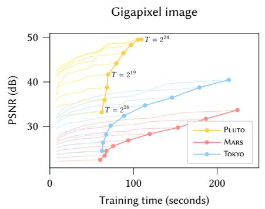</p>
<p>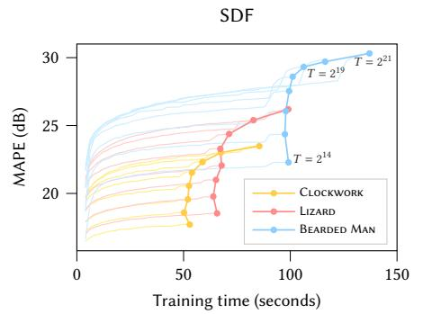</p>
<p>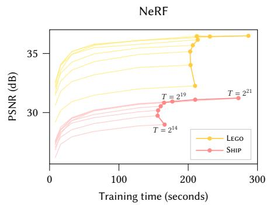<br />
Fi <sub>.</sub> 4<sub>.</sub> Th<sub>e ma</sub>i<sub>n curves</sub> l<sub>o</sub>t t<sub>es</sub>t <sub>error over</sub> t<sub>ra</sub>i<sub>n</sub>i<sub>n</sub> ti<sub>me</sub> f<sub>or var</sub> i<sub>n</sub> h<sub>as</sub>h t<sub>a</sub>bl<sub>e s</sub>i<sub>ze</sub> T <sub>w</sub>hi<sub>c</sub>h d<sub>e</sub>t<sub>erm</sub>i<sub>nes</sub> th<sub>e num</sub>b<sub>er o</sub>f t<sub>ra</sub>i<sub>na</sub>bl<sub>e enco</sub>di<sub>n arame</sub>t<sub>ers.</sub> Increasin<sub>g</sub> T im<sub>p</sub>roves reconstruction<sub>,</sub> at the cost of hi<sub>g</sub>her memor<sub>y</sub> usa<sub>g</sub>e and slower trainin<sub>g</sub> and inference. A <sub>p</sub>erformance clif is visible at <math xmlns="http://www.w3.org/1998/Math/MathML" display="inline"><mrow><mover><mrow><mi>T</mi></mrow><mo>&#x002D9;</mo></mover><mo>&#x0003E;</mo><msup><mn>2</mn><mrow><mn>1</mn><mn>9</mn></mrow></msup></mrow></math> <sub>w</sub>h<sub>ere</sub> the cache of our RTX 3090 GPU becomes oversubscribed (<sub>p</sub>articularl<sub>y</sub> visible for SDF and NeRF). The <sub>p</sub>lot also shows model conver<sub>g</sub>ence over time leadin<sub>g</sub> u<sub>p</sub> to the final state. This hi<sub>g</sub>hli<sub>g</sub>hts how hi<sub>g</sub>h <sub>q</sub>ualit<sub>y</sub> results are alread<sub>y</sub> obtained after onl<sub>y</sub> a few seconds. Jum<sub>p</sub>s in the conver<sub>g</sub>ence (most visible towards the end of SDF trainin<sub>g</sub>) are caused b<sub>y</sub> learnin<sub>g</sub> rate deca<sub>y</sub>. For NeRF and Gi<sub>g</sub>a<sub>p</sub>ixel ima<sub>g</sub>e, trainin<sub>g</sub> finishes after 31 000 ste<sub>p</sub>s and for SDF after 11 000 ste<sub>p</sub>s.</p>
<p>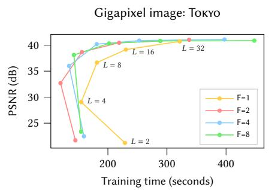</p>
<p>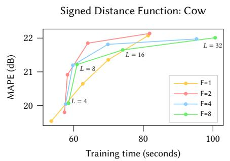</p>
<p>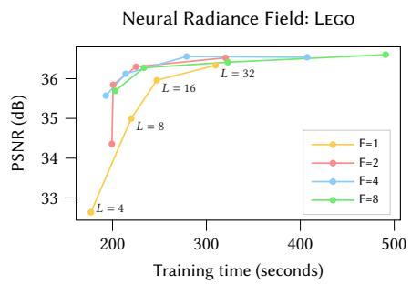<br />
Fi <sub>.</sub> 5<sub>.</sub> T<sub>es</sub>t <sub>error over</sub> t<sub>ra</sub>i<sub>n</sub>i<sub>n</sub> ti<sub>me</sub> f<sub>or</sub> fi<sub>xe</sub>d <sub>va</sub>l<sub>ues o</sub>f f<sub>ea</sub>t<sub>ure</sub> di<sub>mens</sub>i<sub>ona</sub>lit F <sub>as</sub> th<sub>e num</sub>b<sub>er o</sub>f h<sub>as</sub>h t<sub>a</sub>bl<sub>e</sub> l<sub>eve</sub>l<sub>s</sub> L i<sub>s var</sub>i<sub>e</sub>d<sub>.</sub> T<sub>o ma</sub>i<sub>n</sub>t<sub>a</sub>i<sub>n a rou</sub> hl <sub>e ua</sub> t<sub>ra</sub>i<sub>na</sub>bl<sub>e parame</sub>t<sub>er coun</sub>t<sub>,</sub> th<sub>e</sub> h<sub>as</sub>h t<sub>a</sub>bl<sub>e s</sub>i<sub>ze</sub> T i<sub>s se</sub>t <sub>accor</sub>di<sub>ng</sub> t<sub>o</sub> <math xmlns="http://www.w3.org/1998/Math/MathML" display="inline"><mrow><mi>F</mi><mo>&#x000B7;</mo><mi>T</mi><mo>&#x000B7;</mo><mi>L</mi><mo>&#x0003D;</mo><msup><mn>2</mn><mrow><mn>2</mn><mn>4</mn></mrow></msup></mrow></math> for SDF and NeRF<sub>,</sub> whereas <sub>g</sub>i<sub>g</sub>a<sub>p</sub>ixel ima<sub>g</sub>e uses <math xmlns="http://www.w3.org/1998/Math/MathML" display="inline"><mrow><msup><mn>2</mn><mrow><mn>2</mn><mn>8</mn></mrow></msup><mo>&#x0002E;</mo></mrow></math> <sub>.</sub> Sin<sub>ce</sub> <math xmlns="http://www.w3.org/1998/Math/MathML" display="inline"><mrow><mo stretchy="false">&#x00028;</mo><mi>F</mi><mo>&#x0003D;</mo><mn>2</mn><mo>&#x0002C;</mo><mi>L</mi><mo>&#x0003D;</mo><mn>1</mn><mn>6</mn><mo stretchy="false">&#x00029;</mo></mrow></math> is near the best-case <sub>p</sub>erformance and <sub>q</sub>ualit<sub>y</sub> (to<sub>p</sub>-left) for all a<sub>pp</sub>lications, we use this confi<sub>g</sub>uration in all results. <math xmlns="http://www.w3.org/1998/Math/MathML" display="inline"><mrow><mi>F</mi><mo>&#x0003D;</mo><mn>1</mn></mrow></math> i<sub>s s</sub>l<sub>o</sub>w <sub>o</sub>n <sub>ou</sub>r RTX 3090 GPU <sub>s</sub>in<sub>ce</sub> <sub>a</sub>t<sub>o</sub>mi<sub>c</sub> h<sub>a</sub>lf- r<sub>ec</sub>i<sub>s</sub>i<sub>o</sub>n <sub>accu</sub>m<sub>u</sub>l<sub>a</sub>ti<sub>o</sub>n i<sub>s o</sub>nl <sub>e</sub>fi<sub>c</sub>i<sub>e</sub>nt f<sub>o</sub>r 2D v<sub>ec</sub>t<sub>o</sub>r<sub>s</sub> b<sub>u</sub>t n<sub>o</sub>t f<sub>o</sub>r <sub>sca</sub>l<sub>a</sub>r<sub>s.</sub> F<sub>o</sub>r N<sub>e</sub>RF <sub>a</sub>nd Gi <sub>a</sub> ix<sub>e</sub>l im<sub>a e,</sub> tr<sub>a</sub>inin fini<sub>s</sub>h<sub>es a</sub>ft<sub>e</sub>r 31 000 <sub>s</sub>t<sub>e s</sub> whereas SDF com<sub>p</sub>letes at 11 000 ste<sub>p</sub>s.</p>
<p>The h<sub>yp</sub>er<sub>p</sub>arameters L (number of levels) and F (number of feature dimensions) also trade of <sub>q</sub>ualit<sub>y</sub> and <sub>p</sub>erformance, which we <sub>ana</sub>l<sub>yze</sub> f<sub>or</sub> <sub>an</sub> <sub>approx</sub>i<sub>ma</sub>t<sub>e</sub>l<sub>y</sub> <sub>cons</sub>t<sub>an</sub>t <sub>num</sub>b<sub>er</sub> <sub>o</sub>f t<sub>ra</sub>i<sub>na</sub>bl<sub>e</sub> <sub>enco</sub>di<sub>ng</sub> <sub>p</sub>arameters θ in Fi<sub>g</sub>ure 5. In this anal<sub>y</sub>sis<sub>,</sub> we found <math xmlns="http://www.w3.org/1998/Math/MathML" display="inline"><mrow><mo stretchy="false">&#x00028;</mo><mi>F</mi><mo>&#x0003D;</mo><mn>2</mn><mo>&#x0002C;</mo><mi>L</mi><mo>&#x0003D;</mo><mn>1</mn><mn>6</mn><mo stretchy="false">&#x00029;</mo></mrow></math> to be a fa<sub>v</sub>orable Pareto o<sub>p</sub>tim<sub>u</sub>m in all o<sub>u</sub>r a<sub>pp</sub>lications<sub>,</sub> so <sub>w</sub>e <sub>u</sub>se th<sub>ese va</sub>l<sub>ues</sub> i<sub>n a</sub>ll <sub>o</sub>th<sub>er resu</sub>lt<sub>s an</sub>d <sub>recommen</sub>d th<sub>em as</sub> th<sub>e</sub> d<sub>e</sub>f<sub>au</sub>lt<sub>.</sub></p>
<p>Implicit hash collision resolution. It may appear counter-intuitive th<sub>a</sub>t thi<sub>s enco</sub>di<sub>ng</sub> i<sub>s a</sub>bl<sub>e</sub> t<sub>o recons</sub>t<sub>ruc</sub>t <sub>scenes</sub> f<sub>a</sub>ithf<sub>u</sub>ll<sub>y</sub> i<sub>n</sub> th<sub>e</sub> <sub>presence o</sub>f h<sub>as</sub>h <sub>co</sub>lli<sub>s</sub>i<sub>ons.</sub> K<sub>ey</sub> t<sub>o</sub> it<sub>s success</sub> i<sub>s</sub> th<sub>a</sub>t th<sub>e</sub> dif<sub>eren</sub>t <sub>reso</sub>l<sub>u</sub>ti<sub>on</sub> l<sub>eve</sub>l<sub>s</sub> h<sub>ave</sub> dif<sub>eren</sub>t <sub>s</sub>t<sub>reng</sub>th<sub>s</sub> th<sub>a</sub>t <sub>comp</sub>l<sub>emen</sub>t <sub>eac</sub>h <sub>o</sub>th<sub>er.</sub> Th<sub>e coarser</sub> l<sub>eve</sub>l<sub>s, an</sub>d th<sub>us</sub> th<sub>e enco</sub>di<sub>ng as a w</sub>h<sub>o</sub>l<sub>e, are</sub> injective—t<sup>h</sup>at is, t<sup>h</sup>ey su<sup>f</sup>er <sup>f</sup>rom no co<sup>ll</sup>isions at a<sup>ll</sup>. However, t<sup>h</sup>ey <sub>can</sub> <sub>on</sub>l<sub>y</sub> <sub>represen</sub>t <sub>a</sub> l<sub>ow-reso</sub>l<sub>u</sub>ti<sub>on</sub> <sub>vers</sub>i<sub>on</sub> <sub>o</sub>f th<sub>e</sub> <sub>scene,</sub> <sub>s</sub>i<sub>nce</sub> th<sub>ey</sub> <sub>o</sub>f<sub>er</sub> f<sub>ea</sub>t<sub>ures w</sub>hi<sub>c</sub>h <sub>are</sub> li<sub>near</sub>l<sub>y</sub> i<sub>n</sub>t<sub>erpo</sub>l<sub>a</sub>t<sub>e</sub>d f<sub>rom a w</sub>id<sub>e</sub>l<sub>y space</sub>d <sub>gr</sub>id <sub>o</sub>f <sub>po</sub>i<sub>n</sub>t<sub>s.</sub> C<sub>onverse</sub>l<sub>y,</sub> fi<sub>ne</sub> l<sub>eve</sub>l<sub>s</sub> <sub>can</sub> <sub>cap</sub>t<sub>ure</sub> <sub>sma</sub>ll f<sub>ea</sub>t<sub>ures</sub> d<sub>ue</sub> t<sub>o</sub> th<sub>e</sub>i<sub>r</sub> fi<sub>ne gr</sub>id <sub>reso</sub>l<sub>u</sub>ti<sub>on,</sub> b<sub>u</sub>t <sub>su</sub>f<sub>er</sub> f<sub>rom many co</sub>lli<sub>s</sub>i<sub>ons—</sub>th<sub>a</sub>t i<sub>s,</sub> dis<sub>p</sub>arate <sub>p</sub>oints which hash to the same table entr<sub>y</sub>. Nearb<sub>y</sub> in<sub>p</sub>uts with e<sub>q</sub>ual inte<sub>g</sub>er coordinates ⌊x<sub>l</sub>⌋ are not considered a collision; a collision occurs when diferent integer coordinates hash to the <sub>same</sub> i<sub>n</sub>d<sub>ex.</sub> L<sub>uc</sub>kil<sub>y, suc</sub>h <sub>co</sub>lli<sub>s</sub>i<sub>ons are pseu</sub>d<sub>o-ran</sub>d<sub>om</sub>l<sub>y sca</sub>tt<sub>ere</sub>d across space, and statistically unlikely to occur simultaneously at ever<sub>y</sub> level for a <sub>g</sub>iven <sub>p</sub>air of <sub>p</sub>oints.</p>
<p>When trainin<sub>g</sub> sam<sub>p</sub>les collide in this wa<sub>y,</sub> their <sub>g</sub>radients avera<sub>g</sub>e. C<sub>ons</sub>id<sub>er</sub> th<sub>a</sub>t th<sub>e</sub> i<sub>mpor</sub>t<sub>ance</sub> t<sub>o</sub> th<sub>e</sub> fi<sub>na</sub>l <sub>recons</sub>t<sub>ruc</sub>ti<sub>on o</sub>f <sub>suc</sub>h sam<sub>p</sub>les is rarel<sub>y</sub> e<sub>q</sub>ual. For exam<sub>p</sub>le<sub>,</sub> a <sub>p</sub>oint on a visible surface <sub>o</sub>f <sub>a ra</sub>di<sub>ance</sub> fi<sub>e</sub>ld <sub>w</sub>ill <sub>con</sub>t<sub>r</sub>ib<sub>u</sub>t<sub>e s</sub>t<sub>rong</sub>l<sub>y</sub> t<sub>o</sub> th<sub>e recons</sub>t<sub>ruc</sub>t<sub>e</sub>d ima<sub>g</sub>e (havin<sub>g</sub> hi<sub>g</sub>h visibilit<sub>y</sub> and hi<sub>g</sub>h densit<sub>y</sub>, both multi<sub>p</sub>licativel<sub>y</sub> afectin<sub>g</sub> the ma<sub>g</sub>nitude of <sub>g</sub>radients) causin<sub>g</sub> lar<sub>g</sub>e chan<sub>g</sub>es to its table entries<sub>,</sub> while a <sub>p</sub>oint in em<sub>p</sub>t<sub>y</sub> s<sub>p</sub>ace that ha<sub>pp</sub>ens to refer to th<sub>e</sub> <sub>same</sub> <sub>en</sub>t<sub>ry</sub> <sub>w</sub>ill h<sub>ave</sub> <sub>a</sub> <sub>muc</sub>h <sub>sma</sub>ll<sub>er</sub> <sub>we</sub>i<sub>g</sub>ht<sub>.</sub> A<sub>s</sub> <sub>a</sub> <sub>resu</sub>lt<sub>,</sub> th<sub>e</sub> <sub>gra</sub>di<sub>en</sub>t<sub>s</sub> <sub>o</sub>f th<sub>e</sub> <sub>more</sub> i<sub>mpor</sub>t<sub>an</sub>t <sub>samp</sub>l<sub>es</sub> d<sub>om</sub>i<sub>na</sub>t<sub>e</sub> th<sub>e</sub> <sub>co</sub>lli<sub>s</sub>i<sub>on</sub> <sub>average an</sub>d th<sub>e a</sub>li<sub>ase</sub>d t<sub>a</sub>bl<sub>e en</sub>t<sub>ry w</sub>ill <sub>na</sub>t<sub>ura</sub>ll<sub>y</sub> b<sub>e op</sub>ti<sub>m</sub>i<sub>ze</sub>d i<sub>n</sub> <sub>suc</sub>h <sub>a</sub> <sub>way</sub> th<sub>a</sub>t it <sub>re</sub>fl<sub>ec</sub>t<sub>s</sub> th<sub>e</sub> <sub>nee</sub>d<sub>s</sub> <sub>o</sub>f th<sub>e</sub> hi<sub>g</sub>h<sub>er-we</sub>i<sub>g</sub>ht<sub>e</sub>d <sub>po</sub>i<sub>n</sub>t<sub>.</sub></p>
<p>Th<sub>e</sub> <sub>mu</sub>lti<sub>reso</sub>l<sub>u</sub>ti<sub>on</sub> <sub>aspec</sub>t <sub>o</sub>f th<sub>e</sub> h<sub>as</sub>h <sub>enco</sub>di<sub>ng</sub> <sub>covers</sub> th<sub>e</sub> f<sub>u</sub>ll <sub>range</sub> f<sub>rom</sub> <sub>a</sub> <sub>coarse</sub> <sub>reso</sub>l<sub>u</sub>ti<sub>on</sub> <math xmlns="http://www.w3.org/1998/Math/MathML" display="inline"><mrow><msub><mi>N</mi><mrow><mrow><mi mathvariant="normal">m</mi><mi mathvariant="normal">i</mi><mi mathvariant="normal">n</mi></mrow></mrow></msub></mrow></math> th<sub>a</sub>t i<sub>s guaran</sub>t<sub>ee</sub>d t<sub>o</sub> b<sub>e co</sub>lli<sub>s</sub>i<sub>on-</sub> f<sub>ree</sub> t<sub>o</sub> th<sub>e</sub> fi<sub>nes</sub>t <sub>reso</sub>l<sub>u</sub>ti<sub>on</sub> <math xmlns="http://www.w3.org/1998/Math/MathML" display="inline"><mrow><msub><mi>N</mi><mrow><mrow><mi mathvariant="normal">m</mi><mi mathvariant="normal">a</mi><mi mathvariant="normal">x</mi></mrow></mrow></msub></mrow></math> th<sub>a</sub>t th<sub>e</sub> t<sub>as</sub>k <sub>requ</sub>i<sub>res.</sub> Th<sub>ere</sub>b<sub>y,</sub> it guarantees that all scales at which meaningful learning could take <sub>p</sub>l<sub>ace are</sub> i<sub>nc</sub>l<sub>u</sub>d<sub>e</sub>d<sub>, regar</sub>dl<sub>ess o</sub>f <sub>spars</sub>it<sub>y.</sub> G<sub>eome</sub>t<sub>r</sub>i<sub>c sca</sub>li<sub>ng a</sub>ll<sub>ows</sub> <sub>cover</sub>i<sub>ng</sub> th<sub>ese sca</sub>l<sub>es w</sub>ith <sub>on</sub>l<sub>y</sub> <math xmlns="http://www.w3.org/1998/Math/MathML" display="inline"><mrow><mi>O</mi><mo minsize="1.2em" maxsize="1.2em">(</mo><mi>log</mi><mrow><mo stretchy="false">&#x00028;</mo><msub><mi>N</mi><mrow><mrow><mi mathvariant="normal">m</mi><mi mathvariant="normal">a</mi><mi mathvariant="normal">x</mi></mrow></mrow></msub><mo>&#x0002F;</mo><msub><mi>N</mi><mrow><mrow><mi mathvariant="normal">m</mi><mi mathvariant="normal">i</mi><mi mathvariant="normal">n</mi></mrow></mrow></msub><mo stretchy="false">&#x00029;</mo></mrow><mo minsize="1.2em" maxsize="1.2em">)</mo></mrow></math> <sub>many</sub> l<sub>eve</sub>l<sub>s,</sub> <sub>w</sub>hi<sub>c</sub>h <sub>a</sub>ll<sub>ows p</sub>i<sub>c</sub>ki<sub>ng a conserva</sub>ti<sub>ve</sub>l<sub>y</sub> l<sub>arge va</sub>l<sub>ue</sub> f<sub>or</sub> <math xmlns="http://www.w3.org/1998/Math/MathML" display="inline"><mrow><msub><mi>N</mi><mrow><mrow><mi mathvariant="normal">m</mi><mi mathvariant="normal">a</mi><mi mathvariant="normal">x</mi></mrow></mrow></msub></mrow></math></p>
<p>Online adaptivity. Note that if the distribution of inputs x changes over time durin<sub>g</sub> trainin<sub>g,</sub> for exam<sub>p</sub>le if the<sub>y</sub> become concentrated i<sub>n</sub> <sub>a</sub> <sub>sma</sub>ll <sub>reg</sub>i<sub>on,</sub> th<sub>en</sub> fi<sub>ner</sub> <sub>gr</sub>id l<sub>eve</sub>l<sub>s</sub> <sub>w</sub>ill <sub>exper</sub>i<sub>ence</sub> f<sub>ewer</sub> <sub>co</sub>lli<sub>-</sub> <sub>s</sub>i<sub>ons</sub> <sub>an</sub>d <sub>a</sub> <sub>more</sub> <sub>accura</sub>t<sub>e</sub> f<sub>unc</sub>ti<sub>on</sub> <sub>can</sub> b<sub>e</sub> l<sub>earne</sub>d<sub>.</sub> I<sub>n</sub> <sub>o</sub>th<sub>er</sub> <sub>wor</sub>d<sub>s,</sub> the multiresolution hash encoding automatically adapts to the traini<sub>ng</sub> d<sub>a</sub>t<sub>a</sub> di<sub>s</sub>t<sub>r</sub>ib<sub>u</sub>ti<sub>on,</sub> i<sub>n</sub>h<sub>er</sub>iti<sub>ng</sub> th<sub>e</sub> b<sub>ene</sub>fit<sub>s</sub> <sub>o</sub>f t<sub>ree-</sub>b<sub>ase</sub>d <sub>enco</sub>d<sub>-</sub> in<sub>g</sub>s [Takikawa et al. 2021] without task-s<sub>p</sub>ecific data structure maintenance t<sup>h</sup>at mig<sup>h</sup>t cause <sup>d</sup>iscrete jumps <sup>d</sup>uring training. One of our a<sub>pp</sub>lications<sub>,</sub> neural radiance cachin<sub>g</sub> in Section 5.3<sub>,</sub> continuall<sub>y</sub> ada<sub>p</sub>ts to animated view<sub>p</sub>oints and 3D content<sub>,</sub> <sub>g</sub>reatl<sub>y</sub> b<sub>ene</sub>fitti<sub>ng</sub> f<sub>rom</sub> thi<sub>s</sub> f<sub>ea</sub>t<sub>ure.</sub></p>
<p>d-linear interpolation. Interpolating the queried hash table entries ensures that the encodin<sub>g</sub> enc(x; θ), and b<sub>y</sub> the chain rule its composition with the neural network m(enc(x; θ); Φ), are continuous. Without inter<sub>p</sub>olation<sub>, g</sub>rid-ali<sub>g</sub>ned discontinuities would be <sub>p</sub>resent i<sub>n</sub> th<sub>e ne</sub>t<sub>wor</sub>k <sub>ou</sub>t<sub>pu</sub>t<sub>, w</sub>hi<sub>c</sub>h <sub>wou</sub>ld <sub>resu</sub>lt i<sub>n an un</sub>d<sub>es</sub>i<sub>ra</sub>bl<sub>e</sub> bl<sub>oc</sub>k<sub>y</sub> a<sub>pp</sub>earance. One ma<sub>y</sub> desire hi<sub>g</sub>her-order smoothness<sub>,</sub> for exam-<sub>p</sub>le when a<sub>pp</sub>roximatin<sub>g p</sub>artial diferential e<sub>q</sub>uations. A concrete exam<sub>p</sub>le from com<sub>p</sub>uter <sub>g</sub>ra<sub>p</sub>hics are si<sub>g</sub>ned distance functions<sub>,</sub> in which case the gradient ∂m(enc(x; θ); Φ)/∂x, i.e. the surface normal, <sub>wou</sub>ld id<sub>ea</sub>ll<sub>y</sub> <sub>a</sub>l<sub>so</sub> b<sub>e</sub> <sub>con</sub>ti<sub>nuous.</sub> If hi<sub>g</sub>h<sub>er-or</sub>d<sub>er</sub> <sub>smoo</sub>th<sub>ness</sub> <sub>mus</sub>t b<sub>e</sub> <sub>gua</sub>r<sub>a</sub>nt<sub>ee</sub>d<sub>,</sub> <sub>we</sub> d<sub>esc</sub>rib<sub>e</sub> <sub>a</sub> l<sub>ow</sub>-<sub>cos</sub>t <sub>app</sub>r<sub>oac</sub>h in A<sub>ppe</sub>ndix A<sub>,</sub> which we however do not employ in any of our results due to a small decrease in reconstruction <sub>q</sub>ualit<sub>y</sub>.</p>
<h2>4 IMPLEMENTATION</h2>
<p>T<sub>o</sub> d<sub>emons</sub>t<sub>ra</sub>t<sub>e</sub> th<sub>e spee</sub>d <sub>o</sub>f th<sub>e mu</sub>lti<sub>reso</sub>l<sub>u</sub>ti<sub>on</sub> h<sub>as</sub>h <sub>enco</sub>di<sub>ng, we</sub> im<sub>p</sub>l<sub>e</sub>m<sub>e</sub>nt<sub>e</sub>d it in CUDA <sub>a</sub>nd int<sub>eg</sub>r<sub>a</sub>t<sub>e</sub>d it <sub>w</sub>ith th<sub>e</sub> f<sub>as</sub>t f<sub>u</sub>ll<sub>y</sub>-f<sub>use</sub>d MLPs of the tiny-cuda-nn framework [Müller 2021].<sup>1</sup> We release the <sub>source</sub> <sub>co</sub>d<sub>e</sub> <sub>o</sub>f th<sub>e</sub> <sub>mu</sub>lti<sub>reso</sub>l<sub>u</sub>ti<sub>on</sub> h<sub>as</sub>h <sub>enco</sub>di<sub>ng</sub> <sub>as</sub> <sub>an</sub> <sub>up</sub>d<sub>a</sub>t<sub>e</sub> t<sub>o</sub> Müller [2021] and the source code <sub>p</sub>ertainin<sub>g</sub> to the neural <sub>g</sub>ra<sub>p</sub>hics <sub>p</sub>rimitives at https://github.com/nvlabs/instant-ngp.</p>
<p>Performance considerations. In order to optimize inference and b<sub>ac</sub>k<sub>propaga</sub>ti<sub>on per</sub>f<sub>ormance, we s</sub>t<sub>ore</sub> h<sub>as</sub>h t<sub>a</sub>bl<sub>e en</sub>t<sub>r</sub>i<sub>es a</sub>t h<sub>a</sub>lf <sub>p</sub>recision (2 b<sub>y</sub>tes <sub>p</sub>er entr<sub>y</sub>). We additionall<sub>y</sub> maintain a master co<sub>py</sub> of the <sub>p</sub>arameters in full <sub>p</sub>recision for stable mixed-<sub>p</sub>recision <sub>p</sub>arameter u<sub>p</sub>dates, followin<sub>g</sub> Micikevicius et al. [2018].</p>
<p>T<sub>o op</sub>ti<sub>ma</sub>ll<sub>y use</sub> th<sub>e</sub> GPU’<sub>s cac</sub>h<sub>es, we eva</sub>l<sub>ua</sub>t<sub>e</sub> th<sub>e</sub> h<sub>as</sub>h t<sub>a</sub>bl<sub>es</sub> l<sub>eve</sub>l b<sub>y</sub> l<sub>eve</sub>l<sub>:</sub> <sub>w</sub>h<sub>en</sub> <sub>process</sub>i<sub>ng</sub> <sub>a</sub> b<sub>a</sub>t<sub>c</sub>h <sub>o</sub>f i<sub>npu</sub>t <sub>pos</sub>iti<sub>ons,</sub> <sub>we</sub> <sub>sc</sub>h<sub>e</sub>d<sub>-</sub> <sub>u</sub>l<sub>e</sub> th<sub>e compu</sub>t<sub>a</sub>ti<sub>on</sub> t<sub>o</sub> l<sub>oo</sub>k <sub>up</sub> th<sub>e</sub> fi<sub>rs</sub>t l<sub>eve</sub>l <sub>o</sub>f th<sub>e mu</sub>lti<sub>reso</sub>l<sub>u</sub>ti<sub>on</sub> hash encoding for all inputs, followed by the second level for all i<sub>npu</sub>t<sub>s,</sub> <sub>an</sub>d <sub>so</sub> <sub>on.</sub> Th<sub>us,</sub> <sub>on</sub>l<sub>y</sub> <sub>a</sub> <sub>sma</sub>ll <sub>num</sub>b<sub>er</sub> <sub>o</sub>f <sub>consecu</sub>ti<sub>ve</sub> h<sub>as</sub>h tables have to reside in caches at an<sub>y</sub> <sub>g</sub>iven time<sub>,</sub> de<sub>p</sub>endin<sub>g</sub> on how m<sub>u</sub>ch <sub>p</sub>arallelism is a<sub>v</sub>ailable on the GPU. Im<sub>p</sub>ortantl<sub>y,</sub> this str<sub>u</sub>cture of computation automatically makes good use of the available <sub>cac</sub>h<sub>es an</sub>d <sub>para</sub>ll<sub>e</sub>li<sub>sm</sub> f<sub>or a w</sub>id<sub>e range o</sub>f h<sub>as</sub>h t<sub>a</sub>bl<sub>e s</sub>i<sub>zes</sub> T<sub>.</sub></p>
<p>O<sub>n our</sub> h<sub>ar</sub>d<sub>ware,</sub> th<sub>e per</sub>f<sub>ormance o</sub>f th<sub>e enco</sub>di<sub>ng rema</sub>i<sub>ns</sub> <sub>roug</sub>hl<sub>y cons</sub>t<sub>an</sub>t <sub>as</sub> l<sub>ong as</sub> th<sub>e</sub> h<sub>as</sub>h t<sub>a</sub>bl<sub>e s</sub>i<sub>ze s</sub>t<sub>ays</sub> b<sub>e</sub>l<sub>ow</sub> <math xmlns="http://www.w3.org/1998/Math/MathML" display="inline"><mrow><mi>T</mi><mo>&#x02264;</mo><msup><mn>2</mn><mrow><mn>1</mn><mn>9</mn></mrow></msup></mrow></math> B<sub>eyon</sub>d thi<sub>s</sub> th<sub>res</sub>h<sub>o</sub>ld<sub>, per</sub>f<sub>ormance s</sub>t<sub>ar</sub>t<sub>s</sub> t<sub>o</sub> d<sub>rop s</sub>i<sub>gn</sub>ifi<sub>can</sub>tl<sub>y; see</sub> Fi<sub>gu</sub>r<sub>e</sub> 4<sub>.</sub> Thi<sub>s</sub> i<sub>s e</sub>x<sub>p</sub>l<sub>a</sub>in<sub>e</sub>d b<sub>y</sub> th<sub>e</sub> 6 MB L2 <sub>cac</sub>h<sub>e o</sub>f <sub>ou</sub>r NVIDIA RTX 3090 GPU<sub>, w</sub>hi<sub>c</sub>h b<sub>ecomes</sub> t<sub>oo sma</sub>ll f<sub>or</sub> i<sub>n</sub>di<sub>v</sub>id<sub>ua</sub>l l<sub>eve</sub>l<sub>s w</sub>h<sub>en</sub> <math xmlns="http://www.w3.org/1998/Math/MathML" display="inline"><mrow><mn>2</mn><mo>&#x000B7;</mo><mi>T</mi><mo>&#x000B7;</mo><mi>F</mi><mo>&#x0003E;</mo><mn>6</mn><mo>&#x000B7;</mo><msup><mn>2</mn><mrow><mn>2</mn><mn>0</mn></mrow></msup></mrow></math> <sub>,</sub> with 2 bein<sub>g</sub> the size of a half-<sub>p</sub>recision entr<sub>y</sub>.</p>
<p>Th<sub>e</sub> <sub>op</sub>ti<sub>ma</sub>l <sub>num</sub>b<sub>er</sub> <sub>o</sub>f f<sub>ea</sub>t<sub>ure</sub> di<sub>mens</sub>i<sub>ons</sub> F <sub>per</sub> l<sub>oo</sub>k<sub>up</sub> d<sub>epen</sub>d<sub>s</sub> <sub>on</sub> th<sub>e</sub> GPU <sub>arc</sub>hit<sub>ec</sub>t<sub>ure.</sub> O<sub>n one</sub> h<sub>an</sub>d<sub>, a sma</sub>ll <sub>num</sub>b<sub>er</sub> f<sub>avors cac</sub>h<sub>e</sub> localit<sub>y</sub> in the <sub>p</sub>reviousl<sub>y</sub> mentioned streamin<sub>g</sub> a<sub>pp</sub>roach<sub>,</sub> but on th<sub>e o</sub>th<sub>er</sub> h<sub>an</sub>d<sub>, a</sub> l<sub>arge</sub> F f<sub>avors memory co</sub>h<sub>erence</sub> b<sub>y a</sub>ll<sub>ow</sub>i<sub>ng</sub> f<sub>or</sub> F-<sub>w</sub>id<sub>e vec</sub>t<sub>o</sub>r l<sub>oa</sub>d in<sub>s</sub>tr<sub>uc</sub>ti<sub>o</sub>n<sub>s.</sub> <math xmlns="http://www.w3.org/1998/Math/MathML" display="inline"><mrow><mi>F</mi><mo>&#x0003D;</mo><mn>2</mn></mrow></math> <sub>g</sub>ave us the best cost-<sub>q</sub>ualit<sub>y</sub> trade-of (see Fi<sub>g</sub>ure 5) and we use it in all ex<sub>p</sub>eriments.</p>
<p>Architecture. In all tasks, except for NeRF which we will describe l<sub>a</sub>t<sub>er, we use an</sub> MLP <sub>w</sub>ith t<sub>wo</sub> hidd<sub>en</sub> l<sub>ayers</sub> th<sub>a</sub>t h<sub>ave a w</sub>idth of 64 neurons, rectified linear unit (ReLU) activation functions on th<sub>e</sub>i<sub>r</sub> hidd<sub>en</sub> l<sub>ayers,</sub> <sub>an</sub>d <sub>a</sub> li<sub>near</sub> <sub>ou</sub>t<sub>pu</sub>t l<sub>ayer.</sub> Th<sub>e</sub> <sub>max</sub>i<sub>mum</sub> <sub>reso</sub>l<sub>u-</sub> tion <math xmlns="http://www.w3.org/1998/Math/MathML" display="inline"><mrow><msub><mi>N</mi><mrow><mrow><mi mathvariant="normal">m</mi><mi mathvariant="normal">a</mi><mi mathvariant="normal">x</mi></mrow></mrow></msub></mrow></math> is set to 2048 × scene size for NeRF and si<sub>g</sub>ned distance f<sub>unc</sub>ti<sub>ons,</sub> t<sub>o</sub> h<sub>a</sub>lf <sub>o</sub>f th<sub>e g</sub>i<sub>gap</sub>i<sub>xe</sub>l i<sub>mage w</sub>idth<sub>, an</sub>d <math xmlns="http://www.w3.org/1998/Math/MathML" display="inline"><mrow><msup><mn>2</mn><mrow><mover><mrow><mn>1</mn><mn>9</mn></mrow><mrow><mi>&#x02323;</mi></mrow></mover></mrow></msup></mrow></math> in r<sub>a</sub>di<sub>a</sub>n<sub>ce</sub> cachin<sub>g</sub> (lar<sub>g</sub>e value to su<sub>pp</sub>ort close-b<sub>y</sub> objects in ex<sub>p</sub>ansive scenes).</p>
<p>Initialization. We initialize neural network weights according to Glorot and Ben<sub>g</sub>io [2010] to <sub>p</sub>rovide a reasonable scalin<sub>g</sub> of acti<sub>va</sub>ti<sub>ons an</sub>d th<sub>e</sub>i<sub>r gra</sub>di<sub>en</sub>t<sub>s</sub> th<sub>roug</sub>h<sub>ou</sub>t th<sub>e</sub> l<sub>ayers o</sub>f th<sub>e neura</sub>l <sub>ne</sub>t<sub>wor</sub>k<sub>.</sub> W<sub>e</sub> i<sub>n</sub>iti<sub>a</sub>li<sub>ze</sub> th<sub>e</sub> h<sub>as</sub>h t<sub>a</sub>bl<sub>e en</sub>t<sub>r</sub>i<sub>es us</sub>i<sub>ng</sub> th<sub>e un</sub>if<sub>orm</sub> di<sub>s-</sub> trib<sub>u</sub>ti<sub>o</sub>n <math xmlns="http://www.w3.org/1998/Math/MathML" display="inline"><mrow><mrow><mi mathvariant="script">U</mi></mrow><mo stretchy="false">&#x00028;</mo><mo>&#x02212;</mo><mn>1</mn><msup><mn>0</mn><mrow><mo>&#x02212;</mo><mn>4</mn></mrow></msup><mo>&#x0002C;</mo><mn>1</mn><msup><mn>0</mn><mrow><mo>&#x02212;</mo><mn>4</mn></mrow></msup><mo stretchy="false">&#x00029;</mo></mrow></math> t<sub>o prov</sub>id<sub>e a sma</sub>ll <sub>amoun</sub>t <sub>o</sub>f <sub>ran</sub>d<sub>omness</sub> while encoura<sub>g</sub>in<sub>g</sub> initial <sub>p</sub>redictions close to zero. We also tried a <sub>va</sub>ri<sub>e</sub>t<sub>y o</sub>f dif<sub>e</sub>r<sub>e</sub>nt di<sub>s</sub>trib<sub>u</sub>ti<sub>o</sub>n<sub>s,</sub> in<sub>c</sub>l<sub>u</sub>din<sub>g</sub> z<sub>e</sub>r<sub>o</sub>-initi<sub>a</sub>liz<sub>a</sub>ti<sub>o</sub>n<sub>, w</sub>hi<sub>c</sub>h all resulted in a ver<sub>y</sub> sli<sub>g</sub>htl<sub>y</sub> worse initial conver<sub>g</sub>ence s<sub>p</sub>eed. The h<sub>as</sub>h t<sub>a</sub>bl<sub>e</sub> <sub>appears</sub> t<sub>o</sub> b<sub>e</sub> <sub>ro</sub>b<sub>us</sub>t t<sub>o</sub> th<sub>e</sub> i<sub>n</sub>iti<sub>a</sub>li<sub>za</sub>ti<sub>on</sub> <sub>sc</sub>h<sub>eme.</sub></p>
<p>Training. We jointly train the neural network weights and the hash table entries b<sub>y</sub> a<sub>pp</sub>l<sub>y</sub>in<sub>g</sub> Adam [Kin<sub>g</sub>ma and Ba 2014], where we set <math xmlns="http://www.w3.org/1998/Math/MathML" display="inline"><mrow><msub><mi>&#x003B2;</mi><mrow><mn>1</mn></mrow></msub><mo>&#x0003D;</mo><mn>0</mn><mo>&#x0002E;</mo><mn>9</mn><mo>&#x0002C;</mo><msub><mi>&#x003B2;</mi><mrow><mn>2</mn></mrow></msub><mo>&#x0003D;</mo><mn>0</mn><mo>&#x0002E;</mo><mn>9</mn><mn>9</mn><mo>&#x0002C;</mo><mi>&#x003F5;</mi><mo>&#x0003D;</mo><mn>1</mn><msup><mn>0</mn><mrow><mo>&#x02212;</mo><mn>1</mn><mn>5</mn></mrow></msup></mrow></math> <sub>,</sub> Th<sub>e c</sub>h<sub>o</sub>i<sub>ce o</sub>f <math xmlns="http://www.w3.org/1998/Math/MathML" display="inline"><mrow><msub><mi>&#x003B2;</mi><mrow><mn>1</mn></mrow></msub></mrow></math> <sub>an</sub>d <math xmlns="http://www.w3.org/1998/Math/MathML" display="inline"><mrow><msub><mi>&#x003B2;</mi><mrow><mn>2</mn></mrow></msub></mrow></math> <sub>ma</sub>k<sub>es</sub> <sub>on</sub>l<sub>y a sma</sub>ll dif<sub>erence,</sub> b<sub>u</sub>t th<sub>e sma</sub>ll <sub>va</sub>l<sub>ue o</sub>f <math xmlns="http://www.w3.org/1998/Math/MathML" display="inline"><mrow><mi>&#x003F5;</mi><mo>&#x0003D;</mo><mover><mrow><mn>1</mn></mrow><mo>&#x002D9;</mo></mover><msup><mn>0</mn><mrow><mo>&#x02212;</mo><mn>1</mn><mn>5</mn></mrow></msup></mrow></math> can si<sub>g</sub>nifi-<sub>can</sub>tl<sub>y</sub> <sub>acce</sub>l<sub>era</sub>t<sub>e</sub> th<sub>e</sub> <sub>convergence</sub> <sub>o</sub>f th<sub>e</sub> h<sub>as</sub>h t<sub>a</sub>bl<sub>e</sub> <sub>en</sub>t<sub>r</sub>i<sub>es</sub> <sub>w</sub>h<sub>en</sub> their <sub>g</sub>radients are s<sub>p</sub>arse and weak. To <sub>p</sub>revent diver<sub>g</sub>ence after lon<sub>g</sub> trainin<sub>g p</sub>eriods, we a<sub>pp</sub>l<sub>y</sub> a weak L2 re<sub>g</sub>ularization (factor <math xmlns="http://www.w3.org/1998/Math/MathML" display="inline"><mrow><mn>1</mn><msup><mn>0</mn><mrow><mo>&#x02212;</mo><mn>6</mn></mrow></msup><mo stretchy="false">&#x00029;</mo></mrow></math> to th<sub>e neura</sub>l <sub>ne</sub>t<sub>wor</sub>k <sub>we</sub>i<sub>g</sub>ht<sub>s,</sub> b<sub>u</sub>t <sub>no</sub>t t<sub>o</sub> th<sub>e</sub> h<sub>as</sub>h t<sub>a</sub>bl<sub>e en</sub>t<sub>r</sub>i<sub>es.</sub></p>
<p>When fittin<sub>g g</sub>i<sub>g</sub>a<sub>p</sub>ixel ima<sub>g</sub>es or NeRFs<sub>,</sub> we use the <math xmlns="http://www.w3.org/1998/Math/MathML" display="inline"><mrow><msup><mrow><mi mathvariant="script">L</mi></mrow><mrow><mn>2</mn></mrow></msup></mrow></math> l<sub>oss.</sub> F<sub>or</sub> <sub>s</sub>i<sub>gne</sub>d di<sub>s</sub>t<sub>ance</sub> f<sub>unc</sub>ti<sub>ons,</sub> <sub>we</sub> <sub>use</sub> th<sub>e</sub> <sub>mean</sub> <sub>a</sub>b<sub>so</sub>l<sub>u</sub>t<sub>e</sub> <sub>percen</sub>t<sub>age</sub> error (MAPE), defined as <math xmlns="http://www.w3.org/1998/Math/MathML" display="inline"><mrow><mfrac><mrow><mo stretchy="false">&#x0007C;</mo><mrow><mrow><mi mathvariant="normal">p</mi><mi mathvariant="normal">r</mi><mi mathvariant="normal">e</mi><mi mathvariant="normal">d</mi><mi mathvariant="normal">i</mi><mi mathvariant="normal">c</mi><mi mathvariant="normal">t</mi><mi mathvariant="normal">i</mi><mi mathvariant="normal">o</mi><mi mathvariant="normal">n</mi><mo>&#x02212;</mo><mi mathvariant="normal">t</mi><mi mathvariant="normal">a</mi><mi mathvariant="normal">r</mi><mi mathvariant="normal">g</mi><mi mathvariant="normal">e</mi><mi mathvariant="normal">t</mi></mrow></mrow><mo stretchy="false">&#x0007C;</mo></mrow><mrow><mo stretchy="false">&#x0007C;</mo><mrow><mrow><mi mathvariant="normal">t</mi><mi mathvariant="normal">a</mi><mi mathvariant="normal">r</mi><mi mathvariant="normal">g</mi><mi mathvariant="normal">e</mi><mi mathvariant="normal">t</mi></mrow></mrow><mo stretchy="false">&#x0007C;</mo><mo>&#x0002B;</mo><mn>0</mn><mo>&#x0002E;</mo><mn>0</mn><mn>1</mn></mrow></mfrac></mrow></math> <sub>,</sub> <sub>an</sub>d f<sub>or</sub> <sub>neura</sub>l <sub>ra</sub>di<sub>ance</sub> cachin<sub>g</sub> we use a luminance-relative <math xmlns="http://www.w3.org/1998/Math/MathML" display="inline"><mrow><msup><mrow><mi mathvariant="script">L</mi></mrow><mrow><mn>2</mn></mrow></msup></mrow></math> loss [Müller et al. 2021].</p>
<p>W<sub>e</sub> <sub>o</sub>b<sub>serve</sub>d f<sub>as</sub>t<sub>es</sub>t <sub>convergence</sub> <sub>w</sub>ith <sub>a</sub> l<sub>earn</sub>i<sub>ng</sub> <sub>ra</sub>t<sub>e</sub> <sub>o</sub>f <math xmlns="http://www.w3.org/1998/Math/MathML" display="inline"><mrow><mn>1</mn><msup><mn>0</mn><mrow><mo>&#x02212;</mo><mn>4</mn></mrow></msup></mrow></math> f<sub>or</sub> <sub>s</sub>i<sub>gne</sub>d di<sub>s</sub>t<sub>ance</sub> f<sub>unc</sub>ti<sub>ons an</sub>d <math xmlns="http://www.w3.org/1998/Math/MathML" display="inline"><mrow><mover><mrow><mn>1</mn><mn>0</mn></mrow><mrow><mi>&#x0007E;</mi></mrow></mover><mover><mrow><mn>1</mn></mrow><mrow><mo>&#x02212;</mo><mn>2</mn></mrow></mover></mrow></math> <sub>o</sub>th<sub>erw</sub>i<sub>se, as we</sub>ll <sub>a a</sub> b<sub>a</sub>t<sub>c</sub>h <sub>s</sub>i<sub>ze</sub> <math xmlns="http://www.w3.org/1998/Math/MathML" display="inline"><mrow><mi>cot</mi><msup><mn>2</mn><mrow><mn>1</mn><mn>4</mn></mrow></msup></mrow></math> f<sub>or neura</sub>l <sub>ra</sub>di<sub>ance cac</sub>hi<sub>ng an</sub>d <math xmlns="http://www.w3.org/1998/Math/MathML" display="inline"><mrow><msup><mn>2</mn><mrow><mn>1</mn><mn>8</mn></mrow></msup></mrow></math> <sub>o</sub>th<sub>erw</sub>i<sub>se.</sub></p>
<p>L<sub>as</sub>tl<sub>y, we s</sub>ki<sub>p</sub> Ad<sub>am s</sub>t<sub>eps</sub> f<sub>or</sub> h<sub>as</sub>h t<sub>a</sub>bl<sub>e en</sub>t<sub>r</sub>i<sub>es w</sub>h<sub>ose gra</sub>di<sub>en</sub>t i<sub>s</sub> exactl<sub>y</sub> 0. This saves ∼ 10% <sub>p</sub>erformance when <sub>g</sub>radients are s<sub>p</sub>arse, which is a common occurrence with T ≫ BatchSize. Even thou<sub>g</sub>h thi<sub>s</sub> h<sub>eur</sub>i<sub>s</sub>ti<sub>c v</sub>i<sub>o</sub>l<sub>a</sub>t<sub>es some o</sub>f th<sub>e assump</sub>ti<sub>ons</sub> b<sub>e</sub>hi<sub>n</sub>d Ad<sub>am, we</sub> observe no de<sub>g</sub>radation in conver<sub>g</sub>ence.</p>
<p>Non-spatial input dimensions <math xmlns="http://www.w3.org/1998/Math/MathML" display="inline"><mrow><mrow><mi mathvariant="bold-italic">&#x003BE;</mi></mrow><mo>&#x02208;</mo><msup><mrow><mi mathvariant="double-struck">R</mi></mrow><mrow><mi>E</mi></mrow></msup></mrow></math> . The multiresolution hash encodin<sub>g</sub> tar<sub>g</sub>ets s<sub>p</sub>atial coordinates with relativel<sub>y</sub> low dimension-<sub>a</sub>lit<sub>y.</sub> All <sub>ou</sub>r <sub>e</sub>x<sub>pe</sub>rim<sub>e</sub>nt<sub>s ope</sub>r<sub>a</sub>t<sub>e e</sub>ith<sub>e</sub>r in 2D <sub>o</sub>r 3D<sub>.</sub> H<sub>oweve</sub>r<sub>,</sub> it is fre<sub>q</sub>uentl<sub>y</sub> useful to in<sub>p</sub>ut auxiliar<sub>y</sub> dimensions <math xmlns="http://www.w3.org/1998/Math/MathML" display="inline"><mrow><mrow><mi mathvariant="bold-italic">&#x003BE;</mi></mrow><mo>&#x02208;</mo><msup><mrow><mi mathvariant="double-struck">R</mi></mrow><mrow><mi>E</mi></mrow></msup></mrow></math> t<sub>o</sub> th<sub>e</sub> <sub>neura</sub>l <sub>ne</sub>t<sub>wor</sub>k<sub>, suc</sub>h <sub>as</sub> th<sub>e v</sub>i<sub>ew</sub> di<sub>rec</sub>ti<sub>on an</sub>d <sub>ma</sub>t<sub>er</sub>i<sub>a</sub>l <sub>parame</sub>t<sub>ers</sub> <sub>w</sub>h<sub>en</sub> l<sub>earn</sub>i<sub>ng a</sub> li<sub>g</sub>ht fi<sub>e</sub>ld<sub>.</sub> I<sub>n suc</sub>h <sub>cases,</sub> th<sub>e aux</sub>ili<sub>ary</sub> di<sub>mens</sub>i<sub>ons</sub> <sub>can</sub> b<sub>e enco</sub>d<sub>e</sub>d <sub>w</sub>ith <sub>es</sub>t<sub>a</sub>bli<sub>s</sub>h<sub>e</sub>d t<sub>ec</sub>h<sub>n</sub>i<sub>ques w</sub>h<sub>ose cos</sub>t d<sub>oes no</sub>t <sub>sca</sub>l<sub>e super</sub>li<sub>near</sub>l<sub>y w</sub>ith di<sub>mens</sub>i<sub>ona</sub>lit<sub>y; we use</sub> th<sub>e one-</sub>bl<sub>o</sub>b <sub>enco</sub>d<sub>-</sub> in<sub>g</sub> [Müller et al. 2019] in neural radiance cachin<sub>g</sub> [Müller et al. 2021] <sub>a</sub>nd th<sub>e sp</sub>h<sub>e</sub>ri<sub>ca</sub>l h<sub>a</sub>rm<sub>o</sub>ni<sub>cs</sub> b<sub>as</sub>i<sub>s</sub> in N<sub>e</sub>RF<sub>, s</sub>imil<sub>a</sub>r t<sub>o co</sub>n<sub>cu</sub>rr<sub>e</sub>nt work [Verbin et al. 2021; Yu et al. 2021a].</p>
<p>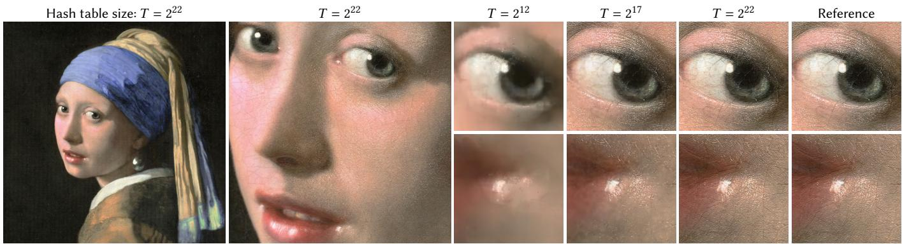<br />
Fi<sub>g</sub>. 6. A<sub>pp</sub>roximatin<sub>g</sub> an RGB ima<sub>g</sub>e of resolution 20 000 × 23 466 (469 M RGB <sub>p</sub>ixels) with our multiresolution hash encodin<sub>g</sub>. With hash table sizes T of <math xmlns="http://www.w3.org/1998/Math/MathML" display="inline"><mrow><msup><mn>2</mn><mrow><mn>1</mn><mn>2</mn></mrow></msup><mo>&#x0002E;</mo></mrow></math> <math xmlns="http://www.w3.org/1998/Math/MathML" display="inline"><mrow><msup><mn>2</mn><mrow><mn>1</mn><mover><mrow><mrow><mn>7</mn></mrow></mrow><mo accent="true">&#x02015;</mo></mover></mrow></msup></mrow></math> <sub>, an</sub>d <math xmlns="http://www.w3.org/1998/Math/MathML" display="inline"><mrow><msup><mover><mrow><mn>2</mn></mrow><mo>&#x002D9;</mo></mover><mrow><mover><mrow><mn>2</mn></mrow><mo>&#x002D9;</mo></mover><mn>2</mn></mrow></msup></mrow></math> th<sub>e mo</sub>d<sub>e</sub>l<sub>s s</sub>h<sub>own</sub> h<sub>ave</sub> 117 k<sub>,</sub> 2<sub>.</sub>7 M<sub>, an</sub>d 47<sub>.</sub>5 M t<sub>ra</sub>i<sub>na</sub>bl<sub>e parame</sub>t<sub>ers respec</sub>ti<sub>ve</sub>l<sub>y.</sub> With <sub>on</sub>l<sub>y</sub> 3<sub>.</sub>4% <sub>o</sub>f th<sub>e</sub> d<sub>egrees o</sub>f f<sub>ree</sub>d<sub>om o</sub>f th<sub>e</sub> i<sub>npu</sub>t<sub>,</sub> th<sub>e</sub> l<sub>as</sub>t model achieves a reconstruction PSNR of 29.8 dB. “Girl With a Pearl Earrin<sub>g</sub>” renovation ©Koorosh Orooj (CC BY-SA 4.0)</p>
<h2>5 EXPERIMENTS</h2>
<p>To hi<sub>g</sub>hli<sub>g</sub>ht the versatilit<sub>y</sub> and hi<sub>g</sub>h <sub>q</sub>ualit<sub>y</sub> of the encodin<sub>g,</sub> we com-<sub>p</sub>are it with <sub>p</sub>revious encodin<sub>g</sub>s in four distinct com<sub>p</sub>uter <sub>g</sub>ra<sub>p</sub>hics <sub>p</sub>rimitives that benefit from encodin<sub>g</sub> s<sub>p</sub>atial coordinates.</p>
<h2>5.1 Gi<sub>g</sub>a<sub>p</sub>ixel Ima<sub>g</sub>e A<sub>pp</sub>roximation</h2>
<p>Learnin<sub>g</sub> the 2D to RGB ma<sub>pp</sub>in<sub>g</sub> of ima<sub>g</sub>e coordinates to colors h<sub>as</sub> b<sub>ecome a popu</sub>l<sub>ar</sub> b<sub>enc</sub>h<sub>mar</sub>k f<sub>or</sub> t<sub>es</sub>ti<sub>ng a mo</sub>d<sub>e</sub>l’<sub>s a</sub>bilit<sub>y</sub> t<sub>o</sub> re<sub>p</sub>resent hi<sub>g</sub>h-fre<sub>q</sub>uenc<sub>y</sub> detail [Martel et al. 2021; Müller et al. 2019; Sitzmann et al. 2020; Tancik et al. 2020]. Recent breakthrou<sub>g</sub>hs in ada<sub>p</sub>tive coordinate networks (ACORN) [Martel et al. 2021] have shown im<sub>p</sub>ressive results when fittin<sub>g</sub> ver<sub>y</sub> lar<sub>g</sub>e ima<sub>g</sub>es—u<sub>p</sub> to a bil li<sub>on</sub> <sub>p</sub>i<sub>xe</sub>l<sub>s—w</sub>ith hi<sub>g</sub>h fid<sub>e</sub>lit<sub>y</sub> <sub>a</sub>t <sub>even</sub> th<sub>e</sub> <sub>sma</sub>ll<sub>es</sub>t <sub>sca</sub>l<sub>es.</sub> W<sub>e</sub> t<sub>arge</sub>t <sub>our</sub> <sub>mu</sub>lti<sub>reso</sub>l<sub>u</sub>ti<sub>on</sub> h<sub>as</sub>h <sub>enco</sub>di<sub>ng</sub> <sub>a</sub>t th<sub>e</sub> <sub>same</sub> t<sub>as</sub>k <sub>an</sub>d <sub>converge</sub> to hi<sub>g</sub>h-fidelit<sub>y</sub> ima<sub>g</sub>es in seconds to minutes (Fi<sub>g</sub>ure 4).</p>
<p>F<sub>o</sub>r <sub>co</sub>m<sub>pa</sub>ri<sub>so</sub>n<sub>,</sub> <sub>o</sub>n th<sub>e</sub> Tokyo <sub>pa</sub>n<sub>o</sub>r<sub>a</sub>m<sub>a</sub> fr<sub>o</sub>m Fi<sub>gu</sub>r<sub>e</sub> 1<sub>,</sub> ACORN <sub>ac</sub>hi<sub>eves</sub> <sub>a</sub> PSNR <sub>o</sub>f 38<sub>.</sub>59 dB <sub>a</sub>ft<sub>e</sub>r 36<sub>.</sub>9 h <sub>o</sub>f tr<sub>a</sub>inin<sub>g.</sub> With <sub>a</sub> <sub>s</sub>imil<sub>a</sub>r <sub>num</sub>b<sub>er</sub> <sub>o</sub>f <sub>parame</sub>t<sub>ers</sub> <math xmlns="http://www.w3.org/1998/Math/MathML" display="inline"><mrow><mo stretchy="false">&#x00028;</mo><mi>T</mi><mo>&#x0003D;</mo><msup><mn>2</mn><mrow><mn>2</mn><mn>4</mn></mrow></msup><mo stretchy="false">&#x00029;</mo></mrow></math> <sub>, our me</sub>th<sub>o</sub>d <sub>ac</sub>hi<sub>eves</sub> th<sub>e same</sub> PSNR after 2.5 minutes of training, peaking at 41.9 dB after 4 min. Fi<sub>gure</sub> 6 <sub>s</sub>h<sub>owcases</sub> th<sub>e</sub> l<sub>eve</sub>l <sub>o</sub>f d<sub>e</sub>t<sub>a</sub>il <sub>con</sub>t<sub>a</sub>i<sub>ne</sub>d i<sub>n our mo</sub>d<sub>e</sub>l f<sub>or a</sub> <sub>var</sub>i<sub>e</sub>t<sub>y o</sub>f h<sub>as</sub>h t<sub>a</sub>bl<sub>e s</sub>i<sub>zes</sub> T <sub>on ano</sub>th<sub>er</sub> i<sub>mage.</sub></p>
<p>It i<sub>s</sub> difi<sub>cu</sub>lt t<sub>o</sub> di<sub>rec</sub>tl<sub>y</sub> <sub>compare</sub> th<sub>e</sub> <sub>per</sub>f<sub>ormance</sub> <sub>o</sub>f <sub>our</sub> <sub>enco</sub>di<sub>ng</sub> to ACORN; a factor of ∼10 stems from our use of full<sub>y</sub> fused CUDA kernels, <sub>p</sub>rovided b<sub>y</sub> the tin<sub>y</sub>-cuda-nn framework [Müller 2021]. Th<sub>e</sub> i<sub>npu</sub>t <sub>enco</sub>di<sub>ng a</sub>ll<sub>ows</sub> f<sub>or</sub> th<sub>e use o</sub>f <sub>a muc</sub>h <sub>sma</sub>ll<sub>er</sub> MLP th<sub>an</sub> with ACORN, which accounts for much of the remainin<sub>g</sub> 10×–100× <sub>spee</sub>d<sub>up.</sub> Th<sub>a</sub>t <sub>sa</sub>id<sub>,</sub> <sub>we</sub> b<sub>e</sub>li<sub>eve</sub> th<sub>a</sub>t th<sub>e</sub> bi<sub>gges</sub>t <sub>va</sub>l<sub>ue-a</sub>dd <sub>o</sub>f th<sub>e</sub> m<sub>u</sub>ltir<sub>eso</sub>l<sub>u</sub>ti<sub>o</sub>n h<sub>as</sub>h <sub>e</sub>n<sub>co</sub>din<sub>g</sub> i<sub>s</sub> it<sub>s s</sub>im<sub>p</sub>li<sub>c</sub>it<sub>y.</sub> ACORN r<sub>e</sub>li<sub>es o</sub>n <sub>a</sub>n ada<sub>p</sub>tive subdivision of the scene as <sub>p</sub>art of a learnin<sub>g</sub> curriculum<sub>,</sub> none of which is necessar<sub>y</sub> with our encodin<sub>g</sub>.</p>
<h2>5<sub>.</sub>2 Si<sub>g</sub>n<sub>e</sub>d Di<sub>s</sub>t<sub>a</sub>n<sub>ce</sub> F<sub>u</sub>n<sub>c</sub>ti<sub>o</sub>n<sub>s</sub></h2>
<p>Si<sub>g</sub>ned distance functions (SDFs), in which a 3D sha<sub>p</sub>e is re<sub>p</sub>resented as the zero level-set of a function of position x, are used in man<sub>y</sub> a<sub>pp</sub>lications includin<sub>g</sub> simulation<sub>,</sub> <sub>p</sub>ath <sub>p</sub>lannin<sub>g,</sub> 3D modelin<sub>g</sub>, and video <sub>g</sub>ames. Dee<sub>p</sub>SDF [Park et al. 2019] uses a lar<sub>g</sub>e MLP to represent one or more SDFs at a time. In contrast, w<sup>h</sup>en just <sub>a</sub> <sub>s</sub>i<sub>ng</sub>l<sub>e</sub> SDF <sub>nee</sub>d<sub>s</sub> t<sub>o</sub> b<sub>e</sub> fit<sub>,</sub> <sub>a</sub> <sub>spa</sub>ti<sub>a</sub>ll<sub>y</sub> l<sub>earne</sub>d <sub>enco</sub>di<sub>ng,</sub> <sub>suc</sub>h <sub>as</sub> <sub>ours</sub> <sub>can</sub> b<sub>e</sub> <sub>emp</sub>l<sub>oye</sub>d <sub>an</sub>d th<sub>e</sub> MLP <sub>s</sub>h<sub>run</sub>k <sub>s</sub>i<sub>gn</sub>ifi<sub>can</sub>tl<sub>y.</sub> Thi<sub>s</sub> i<sub>s</sub> th<sub>e</sub> <sub>app</sub>li<sub>ca</sub>ti<sub>o</sub>n <sub>we</sub> in<sub>ves</sub>ti<sub>ga</sub>t<sub>e</sub> in thi<sub>s</sub> <sub>sec</sub>ti<sub>o</sub>n<sub>.</sub> A<sub>s</sub> b<sub>ase</sub>lin<sub>e,</sub> <sub>we</sub> <sub>co</sub>m<sub>pa</sub>r<sub>e</sub> with NGLOD [Takikawa et al. 2021], which achieves state-of-the-art results in both <sub>q</sub>ualit<sub>y</sub> and s<sub>p</sub>eed b<sub>y</sub> <sub>p</sub>refixin<sub>g</sub> its small MLP with a l<sub>oo</sub>k<sub>up</sub> f<sub>rom</sub> <sub>an</sub> <sub>oc</sub>t<sub>ree</sub> <sub>o</sub>f t<sub>ra</sub>i<sub>na</sub>bl<sub>e</sub> f<sub>ea</sub>t<sub>ure</sub> <sub>vec</sub>t<sub>ors.</sub> L<sub>oo</sub>k<sub>ups</sub> <sub>a</sub>l<sub>ong</sub> th<sub>e</sub> hi<sub>erarc</sub>h<sub>y o</sub>f thi<sub>s oc</sub>t<sub>ree ac</sub>t <sub>s</sub>i<sub>m</sub>il<sub>ar</sub>l<sub>y</sub> t<sub>o our mu</sub>lti<sub>reso</sub>l<sub>u</sub>ti<sub>on cas-</sub> <sub>ca</sub>d<sub>e</sub> <sub>o</sub>f <sub>gr</sub>id<sub>s:</sub> th<sub>ey</sub> <sub>are</sub> <sub>a</sub> <sub>co</sub>lli<sub>s</sub>i<sub>on-</sub>f<sub>ree</sub> <sub>ana</sub>l<sub>og</sub> t<sub>o</sub> <sub>our</sub> t<sub>ec</sub>h<sub>n</sub>i<sub>que,</sub> <sub>w</sub>ith a fixed <sub>g</sub>rowth factor b = 2. To allow meanin<sub>g</sub>ful com<sub>p</sub>arisons in t<sub>erms</sub> <sub>o</sub>f b<sub>o</sub>th <sub>per</sub>f<sub>ormance</sub> <sub>an</sub>d <sub>qua</sub>lit<sub>y,</sub> <sub>we</sub> i<sub>mp</sub>l<sub>emen</sub>t<sub>e</sub>d <sub>an</sub> <sub>op</sub>ti<sub>-</sub> miz<sub>e</sub>d <sub>ve</sub>r<sub>s</sub>i<sub>o</sub>n <sub>o</sub>f NGLOD in <sub>ou</sub>r fr<sub>a</sub>m<sub>ewo</sub>rk<sub>,</sub> d<sub>e</sub>t<sub>a</sub>il<sub>s o</sub>f <sub>w</sub>hi<sub>c</sub>h <sub>we</sub> d<sub>esc</sub>rib<sub>e</sub> in A<sub>ppe</sub>ndix B<sub>.</sub> D<sub>e</sub>t<sub>a</sub>il<sub>s</sub> <sub>pe</sub>rt<sub>a</sub>inin<sub>g</sub> t<sub>o</sub> r<sub>ea</sub>l-tim<sub>e</sub> tr<sub>a</sub>inin<sub>g</sub> <sub>o</sub>f SDF<sub>s a</sub>r<sub>e</sub> d<sub>esc</sub>rib<sub>e</sub>d in A<sub>ppe</sub>ndix C<sub>.</sub></p>
<p>In Fi<sub>gu</sub>r<sub>e</sub> 7<sub>, we co</sub>m<sub>pa</sub>r<sub>e</sub> NGLOD <sub>w</sub>ith <sub>ou</sub>r m<sub>u</sub>ltir<sub>eso</sub>l<sub>u</sub>ti<sub>o</sub>n h<sub>as</sub>h encodin<sub>g</sub> at rou<sub>g</sub>hl<sub>y</sub> e<sub>q</sub>ual <sub>p</sub>arameter count. We also show a strai<sub>g</sub>htforward a<sub>pp</sub>lication of the fre<sub>q</sub>uenc<sub>y</sub> encodin<sub>g</sub> [Mildenhall et al. 2020] to <sub>p</sub>rovide a baseline, details of which are found in A<sub>pp</sub>endix D. B<sub>y</sub> usin<sub>g</sub> a data structure tailored to the reference sha<sub>p</sub>e<sub>,</sub> NGLOD achie<sub>v</sub>es the hi<sub>g</sub>hest <sub>v</sub>is<sub>u</sub>al reconstr<sub>u</sub>ction <sub>qu</sub>alit<sub>y</sub>. Ho<sub>w</sub>- <sub>ever, even w</sub>ith<sub>ou</sub>t <sub>suc</sub>h <sub>a</sub> d<sub>e</sub>di<sub>ca</sub>t<sub>e</sub>d d<sub>a</sub>t<sub>a s</sub>t<sub>ruc</sub>t<sub>ure, our enco</sub>di<sub>ng</sub> a<sub>pp</sub>roaches a similar fidelit<sub>y</sub> to NGLOD in terms of the intersectionover-union metric (IoU<sup>2</sup>) with similar <sub>p</sub>erformance and memor<sub>y</sub> cost.</p>
<p>F<sub>ur</sub>th<sub>ermore,</sub> th<sub>e</sub> SDF i<sub>s</sub> d<sub>e</sub>fi<sub>ne</sub>d <sub>ev-</sub> er<sub>y</sub>where within the trainin<sub>g</sub> volume<sub>,</sub> as o<sub>pp</sub>osed to NGLOD<sub>,</sub> which is onl<sub>y</sub> defined within the octree (i.e. close to the surface). This <sub>p</sub>ermits the use of certain SDF renderin<sub>g</sub> techni<sub>qu</sub>es <sub>suc</sub>h <sub>as</sub> <sub>approx</sub>i<sub>ma</sub>t<sub>e</sub> <sub>so</sub>ft <sub>s</sub>h<sub>a</sub>d<sub>ows</sub> f<sub>rom</sub> <sub>a</sub> <sub>sma</sub>ll <sub>num</sub>b<sub>er</sub> <sub>o</sub>f <sub>o</sub>f<sub>-sur</sub>f<sub>ace</sub> distance sam<sub>p</sub>les [Evans 2006], as s<sup>h</sup>own in t<sup>h</sup>e a<sup>d</sup>jacent <sup>fi</sup>gure.</p>
<p>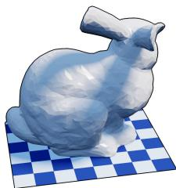</p>
<p>T<sub>o emp</sub>h<sub>as</sub>i<sub>ze</sub> dif<sub>erences</sub> b<sub>e</sub>t<sub>ween</sub> th<sub>e compare</sub>d <sub>me</sub>th<sub>o</sub>d<sub>s, we</sub> visualize the SDF usin<sub>g</sub> a shadin<sub>g</sub> model. The resultin<sub>g</sub> colors are <sub>sens</sub>iti<sub>ve</sub> t<sub>o</sub> <sub>even</sub> <sub>s</sub>li<sub>g</sub>ht <sub>c</sub>h<sub>anges</sub> i<sub>n</sub> th<sub>e</sub> <sub>sur</sub>f<sub>ace</sub> <sub>norma</sub>l<sub>,</sub> <sub>w</sub>hi<sub>c</sub>h <sub>emp</sub>h<sub>a-</sub> <sub>s</sub>i<sub>zes sma</sub>ll fl<sub>uc</sub>t<sub>ua</sub>ti<sub>ons</sub> i<sub>n</sub> th<sub>e pre</sub>di<sub>c</sub>ti<sub>on more s</sub>t<sub>rong</sub>l<sub>y</sub> th<sub>an</sub> i<sub>n o</sub>th<sub>er</sub> <sub>g</sub>ra<sub>p</sub>hics <sub>p</sub>rimitives where color is <sub>p</sub>redicted directl<sub>y</sub>. This sensitivit<sub>y</sub> <sub>revea</sub>l<sub>s un</sub>d<sub>es</sub>i<sub>re</sub>d <sub>m</sub>i<sub>cros</sub>t<sub>ruc</sub>t<sub>ure</sub> i<sub>n our</sub> h<sub>as</sub>h <sub>enco</sub>di<sub>ng on</sub> th<sub>e sca</sub>l<sub>e</sub> <sub>o</sub>f th<sub>e</sub> fi<sub>nes</sub>t <sub>gr</sub>id <sub>reso</sub>l<sub>u</sub>ti<sub>on, w</sub>hi<sub>c</sub>h i<sub>s a</sub>b<sub>sen</sub>t i<sub>n</sub> NGLOD <sub>an</sub>d d<sub>oes</sub> n<sub>o</sub>t di<sub>sappea</sub>r <sub>w</sub>ith l<sub>o</sub>n<sub>ge</sub>r tr<sub>a</sub>inin<sub>g</sub> tim<sub>es.</sub> Sin<sub>ce</sub> NGLOD i<sub>s</sub> <sub>esse</sub>nti<sub>a</sub>ll<sub>y</sub> <sub>a</sub> <sub>co</sub>lli<sub>s</sub>i<sub>on-</sub>f<sub>ree</sub> <sub>ana</sub>l<sub>og</sub> t<sub>o</sub> <sub>our</sub> h<sub>as</sub>h <sub>enco</sub>di<sub>ng,</sub> <sub>we</sub> <sub>a</sub>tt<sub>r</sub>ib<sub>u</sub>t<sub>e</sub> thi<sub>s</sub> artifact to hash collisions. U<sub>p</sub>on close ins<sub>p</sub>ection<sub>,</sub> similar microstr<sub>u</sub>cture can be seen in other neural <sub>g</sub>ra<sub>p</sub>hics <sub>p</sub>rimitives<sub>,</sub> althou<sub>g</sub>h with si<sub>g</sub>nificantl<sub>y</sub> lower ma<sub>g</sub>nitude.</p>
<p>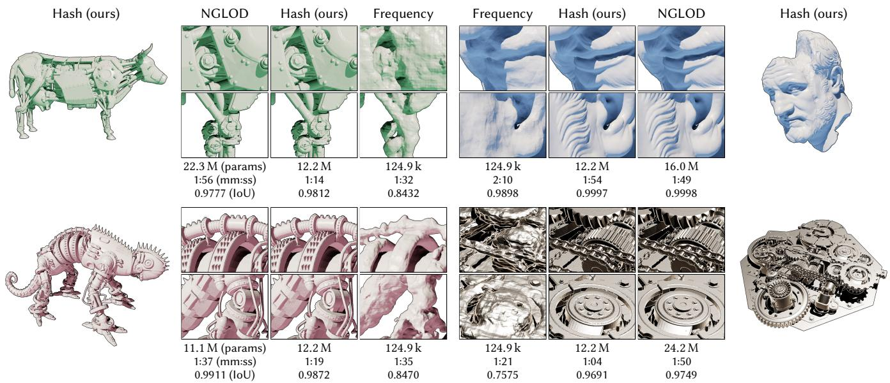<br />
Fi<sub>g</sub>. 7. Neural si<sub>g</sub>ned distance functions trained for 11 000 ste<sub>p</sub>s. The fre<sub>q</sub>uenc<sub>y</sub> encodin<sub>g</sub> [Mildenhall et al. 2020] stru<sub>gg</sub>les to ca<sub>p</sub>ture the shar<sub>p</sub> details on these intricate models. NGLOD [Takikawa et al. 2021] achieves the hi<sub>g</sub>hest visual <sub>q</sub>ualit<sub>y</sub>, at the cost of onl<sub>y</sub> trainin<sub>g</sub> the SDF inside the cells of a close-fitin<sub>g</sub> octree. Our hash encodin exhibits similar numeric ualit in terms of intersection over union (IoU) and can be evaluated an where in the scene. However it also exhibits visuall<sub>y</sub> undesirable surface rou<sub>g</sub>hness that we atribute to randoml<sub>y</sub> distributed hash collisions. Bearded Man ©Oliver Laric (CC BY-NC-SA 2.0)</p>
<p>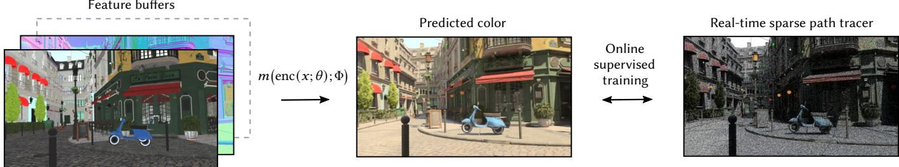<br />
Fig. 8. Summary of the neural radiance caching application [Müller et al. 2021]. The MLP m enc(x; θ); Φ is tasked with predicting photorealistic pixel colors from feature bufers independentlyfor each pixel. The feature bufers contain, among other variables, the world-space position x, which we propose to encode with our method. Neural radiance caching is a challenging application, because it is supervised online during real-time rendering. The training data are a sparse set of light paths that are continually spawned from the camera view. As such, the neural network and encoding do not learn a general mapping from features to color, but rather they continually overfit to the current shape and lighting. To support animated content, training has a budget of one millisecond per frame.</p>
<p>Multiresolution hash encodin (Ours), T = 15, 133 FPS<br />
Trian<sub>g</sub>le wave encodin<sub>g</sub> [Müller et al. 2021], 147 FPS<br />
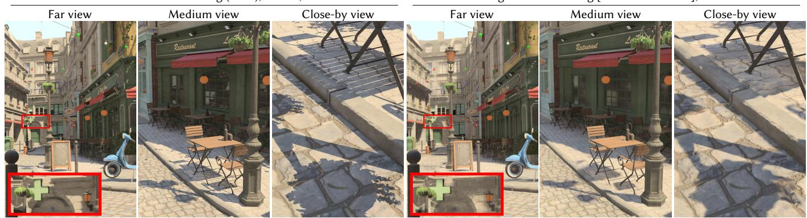<br />
Fi . 9. Neural radiance cachin [Müller et al. 2021] ains much im roved ualit from the multiresolution hash encodin with onl a mild erformance <sub>p</sub>enalt<sub>y</sub>: 133 versus 147 frames <sub>p</sub>er second at a resolution of 1920×1080<sub>p</sub>x. To demonstrate the online ada<sub>p</sub>tivit<sub>y</sub> of the multi<sub>p</sub>le hash resolutions vs. the <sub>p</sub>rior trian<sub>g</sub>le wave encodin<sub>g</sub>, we show screenshots from a smooth camera motion that starts with a far-awa<sub>y</sub> view of the scene (left) and zooms onto a close-b<sub>y</sub> view of an intricate shadow (ri<sub>g</sub>ht). Throu<sub>g</sub>hout the camera motion, which takes just a few seconds, the neural radiance cache continuall<sub>y</sub> learns from s<sub>p</sub>arse camera <sub>p</sub>aths, enablin<sub>g</sub> the cache to learn (“overfit”) intricate detail at the scale of the content that the camera is momentaril<sub>y</sub> observin<sub>g</sub>.</p>
<p>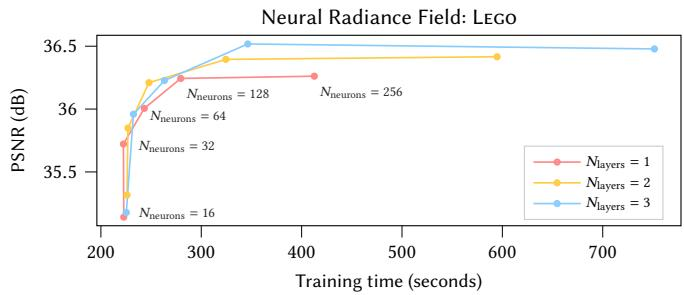<br />
Fi<sub>g</sub>. 10. The efect of the MLP size on test error vs. trainin<sub>g</sub> time (31 000 trainin<sub>g</sub> ste<sub>p</sub>s) on the Lego scene. Other scenes behave almost identicall<sub>y</sub>. E<sub>ac</sub>h <sub>curve represen</sub>t<sub>s a</sub> dif<sub>eren</sub>t MLP d<sub>ep</sub>th<sub>, w</sub>h<sub>ere</sub> th<sub>e co</sub>l<sub>or</sub> MLP h<sub>as</sub> <math xmlns="http://www.w3.org/1998/Math/MathML" display="inline"><mrow><msub><mi>N</mi><mrow><mrow><mi mathvariant="normal">l</mi><mi mathvariant="normal">a</mi><mi mathvariant="normal">y</mi><mi mathvariant="normal">e</mi><mi mathvariant="normal">r</mi><mi mathvariant="normal">s</mi></mrow></mrow></msub></mrow></math> hidd<sub>en</sub> l<sub>ayers an</sub>d th<sub>e</sub> d<sub>ens</sub>it<sub>y</sub> MLP h<sub>as</sub> 1 hidd<sub>en</sub> l<sub>ayer; we</sub> d<sub>o no</sub>t observe an im<sub>p</sub>rovement with dee<sub>p</sub>er densit<sub>y</sub> MLPs. The curves swee<sub>p</sub> the <sub>num</sub>b<sub>er o</sub>f <sub>neurons</sub> th<sub>e</sub> hidd<sub>en</sub> l<sub>ayers o</sub>f th<sub>e</sub> d<sub>ens</sub>it<sub>y an</sub>d <sub>co</sub>l<sub>or</sub> MLP<sub>s</sub> f<sub>rom</sub> 16 t<sub>o</sub> 256<sub>.</sub> I<sub>n</sub>f<sub>orme</sub>d b<sub>y</sub> thi<sub>s ana</sub>l<sub>ys</sub>i<sub>s, we c</sub>h<sub>oose</sub> <math xmlns="http://www.w3.org/1998/Math/MathML" display="inline"><mrow><msub><mi>N</mi><mrow><mrow><mi mathvariant="normal">l</mi><mi mathvariant="normal">a</mi><mi mathvariant="normal">y</mi><mi mathvariant="normal">e</mi><mi mathvariant="normal">r</mi><mi mathvariant="normal">s</mi></mrow></mrow></msub><mo>&#x0003D;</mo><mn>2</mn></mrow></math> <sub>an</sub>d <math xmlns="http://www.w3.org/1998/Math/MathML" display="inline"><mrow><msub><mi>N</mi><mrow><mrow><mi mathvariant="normal">n</mi><mi mathvariant="normal">e</mi><mi mathvariant="normal">u</mi><mi mathvariant="normal">r</mi><mi mathvariant="normal">o</mi><mi mathvariant="normal">n</mi><mi mathvariant="normal">s</mi></mrow></mrow></msub><mo>&#x0003D;</mo><mn>6</mn><mn>4</mn><mo>&#x0002E;</mo></mrow></math></p>
<h2>5<sub>.</sub>3 N<sub>eu</sub>r<sub>a</sub>l R<sub>a</sub>di<sub>a</sub>n<sub>ce</sub> C<sub>ac</sub>hin<sub>g</sub></h2>
<p>In neural radiance cachin<sub>g</sub> [Müller et al. 2021], the task of the MLP is to <sub>p</sub>redict <sub>p</sub>hotorealistic <sub>p</sub>ixel colors from feature bufers<sub>;</sub> see Fi<sub>g</sub>- ure 8. The MLP is run inde<sub>p</sub>endentl<sub>y</sub> for each <sub>p</sub>ixel (i.e. the model is not convolutional), so the feature bufers can be treated as <sub>p</sub>er-<sub>p</sub>ixel feature vectors that contain the 3D coordinate x as well as additi<sub>ona</sub>l f<sub>ea</sub>t<sub>ures.</sub> W<sub>e can</sub> th<sub>ere</sub>f<sub>ore</sub> di<sub>rec</sub>tl<sub>y app</sub>l<sub>y our mu</sub>lti<sub>reso</sub>l<sub>u</sub>ti<sub>on</sub> hash encoding to x while treating all additional features as auxiliary encoded dimensions ξ to be concatenated with the encoded position, usin<sub>g</sub> the same encodin<sub>g</sub> as Müller et al. [2021]. We inte<sub>g</sub>rated our <sub>wor</sub>k i<sub>n</sub>t<sub>o</sub> Müll<sub>er</sub> <sub>e</sub>t <sub>a</sub>l<sub>.</sub>’<sub>s</sub> i<sub>mp</sub>l<sub>emen</sub>t<sub>a</sub>ti<sub>on</sub> <sub>o</sub>f <sub>neura</sub>l <sub>ra</sub>di<sub>ance</sub> <sub>cac</sub>hi<sub>ng</sub> <sub>an</sub>d th<sub>ere</sub>f<sub>ore re</sub>f<sub>er</sub> t<sub>o</sub> th<sub>e</sub>i<sub>r paper</sub> f<sub>or</sub> i<sub>mp</sub>l<sub>emen</sub>t<sub>a</sub>ti<sub>on</sub> d<sub>e</sub>t<sub>a</sub>il<sub>s.</sub></p>
<p>For <sub>p</sub>hotorealistic renderin<sub>g,</sub> the neural radiance cache is t<sub>yp</sub>- ically queried only for indirect path contributions, which masks it<sub>s recons</sub>t<sub>ruc</sub>ti<sub>on error</sub> b<sub>e</sub>hi<sub>n</sub>d th<sub>e</sub> fi<sub>rs</sub>t <sub>re</sub>fl<sub>ec</sub>ti<sub>on.</sub> I<sub>n con</sub>t<sub>ras</sub>t<sub>, we</sub> would like to emphasize the neural radiance cache’s error, and thus th<sub>e</sub> i<sub>mprovemen</sub>t th<sub>a</sub>t <sub>can</sub> b<sub>e</sub> <sub>o</sub>bt<sub>a</sub>i<sub>ne</sub>d b<sub>y</sub> <sub>us</sub>i<sub>ng</sub> <sub>our</sub> <sub>mu</sub>lti<sub>reso</sub>l<sub>u</sub>ti<sub>on</sub> h<sub>as</sub>h <sub>enco</sub>di<sub>ng,</sub> <sub>so</sub> <sub>we</sub> di<sub>rec</sub>tl<sub>y</sub> <sub>v</sub>i<sub>sua</sub>li<sub>ze</sub> th<sub>e</sub> <sub>neura</sub>l <sub>ra</sub>di<sub>ance</sub> <sub>cac</sub>h<sub>e</sub> <sub>a</sub>t th<sub>e</sub> fi<sub>rs</sub>t <sub>pa</sub>th <sub>ver</sub>t<sub>ex.</sub></p>
<p>Fi<sub>g</sub>ure 9 shows that—com<sub>p</sub>ared to the trian<sub>g</sub>le wave encodin<sub>g</sub> of Müller et al. [2021]—our encodin<sub>g</sub> results in shar<sub>p</sub>er reconstruction <sub>w</sub>hil<sub>e</sub> i<sub>ncurr</sub>i<sub>ng on</sub>l<sub>y a m</sub>ild <sub>per</sub>f<sub>ormance over</sub>h<sub>ea</sub>d <sub>o</sub>f 0<sub>.</sub>7 <sub>ms</sub> th<sub>a</sub>t reduces the frame rate from 147 to 133 FPS at a resolution of 1920 × 1080<sub>px.</sub> N<sub>o</sub>t<sub>a</sub>bl<sub>y,</sub> th<sub>e neura</sub>l <sub>ra</sub>di<sub>ance cac</sub>h<sub>e</sub> i<sub>s</sub> t<sub>ra</sub>i<sub>ne</sub>d <sub>on</sub>li<sub>ne—</sub>d<sub>ur</sub>i<sub>ng</sub> <sub>ren</sub>d<sub>er</sub>i<sub>ng—</sub>f<sub>rom a pa</sub>th t<sub>racer</sub> th<sub>a</sub>t <sub>runs</sub> i<sub>n</sub> th<sub>e</sub> b<sub>ac</sub>k<sub>groun</sub>d<sub>, w</sub>hi<sub>c</sub>h means that the 0.7 ms overhead includes both training and runtime <sub>cos</sub>t<sub>s o</sub>f <sub>our enco</sub>di<sub>ng.</sub></p>
<h2>5.4 Neural Radiance and Densit<sub>y</sub> Fields (NeRF)</h2>
<p>In the NeRF settin<sub>g,</sub> a vol<sub>u</sub>metric sha<sub>p</sub>e is re<sub>p</sub>resented in terms of a s<sub>p</sub>atial (3D) densit<sub>y</sub> function and a s<sub>p</sub>atiodirectional (5D) emission f<sub>unc</sub>ti<sub>on,</sub> <sub>w</sub>hi<sub>c</sub>h <sub>we</sub> <sub>represen</sub>t b<sub>y</sub> <sub>a</sub> <sub>s</sub>i<sub>m</sub>il<sub>ar</sub> <sub>neura</sub>l <sub>ne</sub>t<sub>wor</sub>k <sub>arc</sub>hit<sub>ec-</sub> ture as Mildenhall et al. [2020]. We train the model in the same wa<sub>y</sub>s <sub>as</sub> Mild<sub>en</sub>h<sub>a</sub>ll <sub>e</sub>t <sub>a</sub>l<sub>.:</sub> b<sub>y</sub> b<sub>ac</sub>k<sub>propaga</sub>ti<sub>ng</sub> th<sub>roug</sub>h <sub>a</sub> dif<sub>eren</sub>ti<sub>a</sub>bl<sub>e</sub> <sub>ray</sub> marcher driven b<sub>y</sub> 2D RGB ima<sub>g</sub>es from known camera <sub>p</sub>oses.</p>
<p>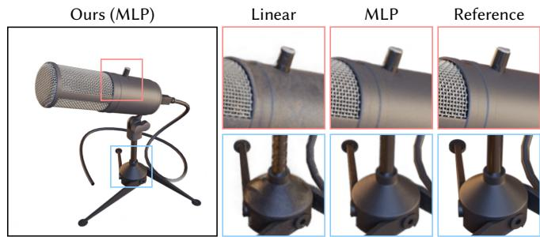<br />
Fi<sub>g</sub>. 11. Feedin<sub>g</sub> the result of our encodin<sub>g</sub> throu<sub>g</sub>h a linear transformation (no neural network) versus an MLP when learnin<sub>g</sub> a NeRF. The models <sub>were</sub> t<sub>ra</sub>i<sub>ne</sub>d f<sub>or</sub> 1 <sub>m</sub>i<sub>n.</sub> Th<sub>e</sub> MLP <sub>a</sub>ll<sub>ows</sub> f<sub>or reso</sub>l<sub>v</sub>i<sub>ng specu</sub>l<sub>ar</sub> d<sub>e</sub>t<sub>a</sub>il<sub>s an</sub>d <sub>re</sub>d<sub>uces</sub> th<sub>e amoun</sub>t <sub>o</sub>f b<sub>ac</sub>k<sub>groun</sub>d <sub>no</sub>i<sub>se cause</sub>d b<sub>y</sub> h<sub>as</sub>h <sub>co</sub>lli<sub>s</sub>i<sub>ons.</sub> D<sub>ue</sub> t<sub>o</sub> the small size and eficient im<sub>p</sub>lementation of the MLP<sub>,</sub> it is onl<sub>y</sub> 15% more ex<sub>p</sub>ensive—well worth the si<sub>g</sub>nificantl<sub>y</sub> im<sub>p</sub>roved <sub>q</sub>ualit<sub>y</sub>.</p>
<p>Model Architecture. Unlike the other three applications, our NeRF <sub>mo</sub>d<sub>e</sub>l <sub>cons</sub>i<sub>s</sub>t<sub>s o</sub>f t<sub>wo conca</sub>t<sub>ena</sub>t<sub>e</sub>d MLP<sub>s: a</sub> d<sub>ens</sub>it<sub>y</sub> MLP f<sub>o</sub>ll<sub>owe</sub>d b<sub>y</sub> a color MLP [Mildenhall et al. 2020]. The densit<sub>y</sub> MLP ma<sub>p</sub>s th<sub>e</sub> h<sub>as</sub>h <sub>enco</sub>d<sub>e</sub>d <sub>pos</sub>iti<sub>on</sub> <math xmlns="http://www.w3.org/1998/Math/MathML" display="inline"><mrow><mrow><mi mathvariant="bold">y</mi></mrow><mo>&#x0003D;</mo><mo>enc</mo><mo stretchy="false">&#x00028;</mo><mrow><mi mathvariant="bold">x</mi></mrow><mi>;</mi><mi>&#x003B8;</mi><mo stretchy="false">&#x00029;</mo></mrow></math> t<sub>o</sub> 16 <sub>ou</sub>t<sub>pu</sub>t <sub>va</sub>l<sub>ues,</sub> th<sub>e</sub> fi<sub>rs</sub>t <sub>o</sub>f <sub>w</sub>hi<sub>c</sub>h <sub>we</sub> t<sub>rea</sub>t <sub>as</sub> l<sub>og-space</sub> d<sub>ens</sub>it<sub>y.</sub> Th<sub>e co</sub>l<sub>or</sub> MLP <sub>a</sub>dd<sub>s</sub> <sub>v</sub>ie<sub>w</sub>-de<sub>p</sub>endent color <sub>v</sub>ariation. Its in<sub>pu</sub>t is the concatenation of</p>
<p>• the 16 out<sub>p</sub>ut values of the densit<sub>y</sub> MLP, and</p>
<p>• the view direction <sub>p</sub>rojected onto the first 16 coeficients of the s<sub>p</sub>herical harmonics basis (i.e. u<sub>p</sub> to de<sub>g</sub>ree 4). This is a natural fre<sub>q</sub>uenc<sub>y</sub> encodin<sub>g</sub> over unit vectors.</p>
<p>Its out<sub>p</sub>ut is an RGB color tri<sub>p</sub>let<sub>,</sub> for which we use either a si<sub>g</sub>moid activation when the trainin<sub>g</sub> data has low d<sub>y</sub>namic-ran<sub>g</sub>e (sRGB) or an ex<sub>p</sub>onential activation when it has hi<sub>g</sub>h d<sub>y</sub>namic ran<sub>g</sub>e (linear HDR). We <sub>p</sub>refer HDR trainin<sub>g</sub> data due to the closer resemblance to <sub>p</sub>h<sub>y</sub>sical li<sub>g</sub>ht trans<sub>p</sub>ort. This brin<sub>g</sub>s numerous advanta<sub>g</sub>es as has also been noted in concurrent work [Mildenhall et al. 2021].</p>
<p>Informed b<sub>y</sub> the anal<sub>y</sub>sis in Fi<sub>g</sub>ure 10<sub>,</sub> our results were <sub>g</sub>enerated <sub>w</sub>ith a 1-hidden-la<sub>y</sub>er densit<sub>y</sub> MLP and a 2-hidden-la<sub>y</sub>er color MLP<sub>,</sub> b<sub>o</sub>th 64 <sub>neurons w</sub>id<sub>e.</sub></p>
<p>Accelerated ray marching. When marching along rays for both t<sub>ra</sub>i<sub>n</sub>i<sub>ng an</sub>d <sub>ren</sub>d<sub>er</sub>i<sub>ng, we wou</sub>ld lik<sub>e</sub> t<sub>o p</sub>l<sub>ace samp</sub>l<sub>es suc</sub>h th<sub>a</sub>t the<sub>y</sub> contribute somewhat uniforml<sub>y</sub> to the ima<sub>g</sub>e<sub>,</sub> minimizin<sub>g</sub> <sub>was</sub>t<sub>e</sub>d <sub>compu</sub>t<sub>a</sub>ti<sub>on.</sub> Th<sub>us, we concen</sub>t<sub>ra</sub>t<sub>e samp</sub>l<sub>es near sur</sub>f<sub>aces</sub> b<sub>y</sub> maintainin<sub>g</sub> an occu<sub>p</sub>anc<sub>y</sub> <sub>g</sub>rid that coarsel<sub>y</sub> marks em<sub>p</sub>t<sub>y</sub> vs. nonem<sub>p</sub>t<sub>y</sub> s<sub>p</sub>ace. In lar<sub>g</sub>e scenes<sub>,</sub> we additionall<sub>y</sub> cascade the occu<sub>p</sub>anc<sub>y</sub> <sub>gr</sub>id <sub>an</sub>d di<sub>s</sub>t<sub>r</sub>ib<sub>u</sub>t<sub>e samp</sub>l<sub>es exponen</sub>ti<sub>a</sub>ll<sub>y ra</sub>th<sub>er</sub> th<sub>an un</sub>if<sub>orm</sub>l<sub>y</sub> alon<sub>g</sub> the ra<sub>y</sub>. A<sub>pp</sub>endix E describes these <sub>p</sub>roced<sub>u</sub>res in detail.</p>
<p>At HD <sub>reso</sub>l<sub>u</sub>ti<sub>ons, syn</sub>th<sub>e</sub>ti<sub>c an</sub>d <sub>even rea</sub>l<sub>-wor</sub>ld <sub>scenes can</sub> b<sub>e</sub> t<sub>ra</sub>i<sub>ne</sub>d i<sub>n secon</sub>d<sub>s an</sub>d <sub>ren</sub>d<sub>ere</sub>d <sub>a</sub>t 60 FPS<sub>, w</sub>ith<sub>ou</sub>t th<sub>e nee</sub>d <sub>o</sub>f cachin<sub>g</sub> of the MLP out<sub>p</sub>uts [Garbin et al. 2021; Wizadwon<sub>g</sub>sa et al. 2021; Yu et al. 2021b]. This hi<sub>g</sub>h <sub>p</sub>erformance makes it tractable to <sub>a</sub>dd <sub>e</sub>f<sub>ec</sub>t<sub>s</sub> <sub>suc</sub>h <sub>as</sub> <sub>an</sub>ti<sub>-a</sub>li<sub>as</sub>i<sub>ng,</sub> <sub>mo</sub>ti<sub>on</sub> bl<sub>ur</sub> <sub>an</sub>d d<sub>ep</sub>th <sub>o</sub>f fi<sub>e</sub>ld b<sub>y</sub> brute-force tracin<sub>g</sub> of multi<sub>p</sub>le ra<sub>y</sub>s <sub>p</sub>er <sub>p</sub>ixel<sub>,</sub> as shown in Fi<sub>g</sub>ure 12.</p>
<p>Table 2. Peak si<sub>g</sub>nal to noise ratio (PSNR) of our NeRF im<sub>p</sub>lementation with multiresolution hash encodin<sub>g</sub> (“Ours: Hash”) vs. NeRF [Mildenhall et al. 2020], mi<sub>p</sub>-NeRF [Barron et al. 2021a], and NSVF [Liu et al. 2020], which re<sub>q</sub>uire ∼hours to train (values taken from the res<sub>p</sub>ective <sub>p</sub>a<sub>p</sub>ers). To demonstrate the <sub>compara</sub>ti<sub>ve</sub>l<sub>y</sub> <sub>rap</sub>id t<sub>ra</sub>i<sub>n</sub>i<sub>ng</sub> <sub>o</sub>f <sub>our</sub> <sub>me</sub>th<sub>o</sub>d<sub>,</sub> <sub>we</sub> li<sub>s</sub>t it<sub>s</sub> <sub>resu</sub>lt<sub>s</sub> <sub>a</sub>ft<sub>er</sub> t<sub>ra</sub>i<sub>n</sub>i<sub>ng</sub> f<sub>or</sub> 1 <sub>s</sub> t<sub>o</sub> 5 <sub>m</sub>i<sub>n.</sub> F<sub>or</sub> <sub>eac</sub>h <sub>scene,</sub> <sub>we</sub> <sub>mar</sub>k th<sub>e</sub> <sub>me</sub>th<sub>o</sub>d<sub>s</sub> <sub>w</sub>ith l<sub>eas</sub>t <sub>error</sub> <sub>us</sub>i<sub>ng</sub> <sub>go</sub>ld <sub>,</sub> <sub>s</sub>il<sub>ver</sub> <sub>,</sub> <sub>an</sub>d b<sub>ronze</sub> <sub>me</sub>d<sub>a</sub>l<sub>s.</sub> T<sub>o</sub> <sub>ana</sub>l<sub>yze</sub> th<sub>e</sub> d<sub>egree</sub> t<sub>o</sub> <sub>w</sub>hi<sub>c</sub>h <sub>our</sub> <sub>spee</sub>d<sub>up</sub> <sub>or</sub>i<sub>g</sub>i<sub>na</sub>t<sub>es</sub> f<sub>rom</sub> <sub>our</sub> <sub>op</sub>ti<sub>m</sub>i<sub>ze</sub>d i<sub>mp</sub>l<sub>emen</sub>t<sub>a</sub>ti<sub>on</sub> <sub>vs.</sub> f<sub>rom</sub> <sub>our</sub> h<sub>as</sub>h <sub>enco</sub>di<sub>ng,</sub> <sub>we</sub> <sub>a</sub>l<sub>so</sub> re<sub>p</sub>ort PSNR for a nearl<sub>y</sub> identical version of our im<sub>p</sub>lementation<sub>,</sub> in which the hash encodin<sub>g</sub> has been re<sub>p</sub>laced b<sub>y</sub> the fre<sub>q</sub>uenc<sub>y</sub> encodin<sub>g</sub> and the MLP corres<sub>p</sub>ondin<sub>g</sub>l<sub>y</sub> enlar<sub>g</sub>ed to match Mildenhall et al. [2020] (“Ours: Fre<sub>q</sub>uenc<sub>y</sub>”; details in A<sub>pp</sub>endix D). It a<sub>pp</sub>roaches NeRF’s <sub>q</sub>ualit<sub>y</sub> after trainin<sub>g</sub> for just ∼5 min, <sub>y</sub>et is out<sub>p</sub>erformed b<sub>y</sub> our full method after trainin<sub>g</sub> for 5 s–15 s, amountin<sub>g</sub> to a 20–60× im<sub>p</sub>rovement that can be atributed to the hash encodin<sub>g</sub></p>
<table><tr><td></td><td>MIC</td><td>FicUs</td><td>CHAIR</td><td>HoTDOG</td><td>MATERIALS</td><td>DRUMS</td><td>SHIP</td><td>LEGO</td><td>avg.</td></tr><tr><td>Ours: Hash (1 s)</td><td>26.09</td><td>21.30</td><td>21.55</td><td>21.63</td><td>22.07</td><td>17.76</td><td>20.38</td><td>18.83</td><td>21.202</td></tr><tr><td>Ours: Hash (5 s)</td><td>32.60</td><td>30.35</td><td>30.77</td><td>33.42</td><td>26.60</td><td>23.84</td><td>26.38</td><td>30.13</td><td>29.261</td></tr><tr><td>Ours: Hash (15 s)</td><td>34.76</td><td>32.26</td><td>32.95</td><td>35.56</td><td>28.25</td><td>25.23</td><td>28.56</td><td>33.68</td><td>31.407</td></tr><tr><td>Ours: Hash (1 min)</td><td>35.92 ●</td><td>33.05 ●</td><td>34.34 ●</td><td>36.78</td><td>29.33</td><td>25.82</td><td>30.20 ●</td><td>35.63 ●</td><td>32.635 ●</td></tr><tr><td>Ours: Hash (5 min)</td><td>36.22</td><td>33.51</td><td>35.00</td><td>37.40</td><td>29.78 ●</td><td>26.02</td><td>31.10 </td><td>36.39</td><td>33.176</td></tr><tr><td>mip-NeRF (~hours)</td><td>36.51</td><td>33.29</td><td>35.14</td><td>37.48</td><td>30.71</td><td>25.48 ●</td><td>30.41</td><td>35.70</td><td>33.090</td></tr><tr><td>NSVF (~hours)</td><td>34.27</td><td>31.23</td><td>33.19</td><td>37.14 ●</td><td>32.68</td><td>25.18</td><td>27.93</td><td>32.29</td><td>31.739</td></tr><tr><td>NeRF (~hours)</td><td>32.91</td><td>30.13</td><td>33.00</td><td>36.18</td><td>29.62</td><td>25.01</td><td>28.65</td><td>32.54</td><td>31.005</td></tr><tr><td>Ours: Frequency (5 min)</td><td>31.89</td><td>28.74</td><td>31.02</td><td>34.86</td><td>28.93</td><td>24.18</td><td>28.06</td><td>32.77</td><td>30.056</td></tr><tr><td>Ours: Frequency (1 min)</td><td>26.62</td><td>24.72</td><td>28.51</td><td>32.61</td><td>26.36</td><td>21.33</td><td>24.32</td><td>28.88</td><td>26.669</td></tr></table>

<p>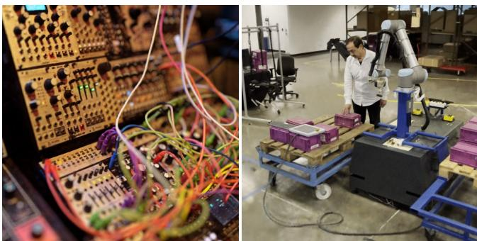<br />
Fi<sub>g</sub>. 12. NeRF reconstruction of a modular s<sub>y</sub>nthesizer and lar<sub>g</sub>e natural 360 <sub>scene.</sub> Th<sub>e</sub> l<sub>e</sub>ft i<sub>mage</sub> t<sub>oo</sub>k 5 <sub>secon</sub>d<sub>s</sub> t<sub>o accumu</sub>l<sub>a</sub>t<sub>e</sub> 128 <sub>samp</sub>l<sub>es a</sub>t 1080<sub>p</sub> on a sin<sub>g</sub>le RTX 3090 GPU<sub>,</sub> allowin<sub>g</sub> for brute force defocus efects. The ri<sub>g</sub>ht ima<sub>g</sub>e was taken from an interactive session runnin<sub>g</sub> at 10 frames <sub>p</sub>er <sub>seco</sub>nd <sub>o</sub>n th<sub>e sa</sub>m<sub>e</sub> GPU<sub>.</sub></p>
<p>Comparison with direct voxel lookups. Figure 11 shows an ablation <sub>w</sub>h<sub>ere</sub> <sub>we</sub> <sub>rep</sub>l<sub>ace</sub> th<sub>e</sub> <sub>en</sub>ti<sub>re</sub> <sub>neura</sub>l <sub>ne</sub>t<sub>wor</sub>k <sub>w</sub>ith <sub>a</sub> <sub>s</sub>i<sub>ng</sub>l<sub>e</sub> li<sub>near</sub> matrix multi<sub>p</sub>lication, in the s<sub>p</sub>irit of (althou<sub>g</sub>h not identical to) concurrent direct voxel-based NeRF [Sun et al. 2021; Yu et al. 2021a]. Whil<sub>e</sub> th<sub>e</sub> li<sub>near</sub> l<sub>ayer</sub> i<sub>s</sub> <sub>capa</sub>bl<sub>e</sub> <sub>o</sub>f <sub>repro</sub>d<sub>uc</sub>i<sub>ng</sub> <sub>v</sub>i<sub>ew-</sub>d<sub>epen</sub>d<sub>en</sub>t efects<sub>,</sub> the <sub>q</sub>ualit<sub>y</sub> is si<sub>g</sub>nificantl<sub>y</sub> com<sub>p</sub>romised as com<sub>p</sub>ared to the MLP<sub>, w</sub>hi<sub>c</sub>h i<sub>s</sub> b<sub>e</sub>tt<sub>er a</sub>bl<sub>e</sub> t<sub>o cap</sub>t<sub>ure specu</sub>l<sub>ar e</sub>f<sub>ec</sub>t<sub>s an</sub>d t<sub>o reso</sub>l<sub>ve</sub> h<sub>as</sub>h <sub>co</sub>lli<sub>s</sub>i<sub>ons across</sub> th<sub>e</sub> i<sub>n</sub>t<sub>erpo</sub>l<sub>a</sub>t<sub>e</sub>d <sub>mu</sub>lti<sub>reso</sub>l<sub>u</sub>ti<sub>on</sub> h<sub>as</sub>h t<sub>a</sub>bl<sub>es</sub> (which manifest as hi<sub>g</sub>h-fre<sub>q</sub>uenc<sub>y</sub> artifacts). Fortunatel<sub>y</sub>, the MLP i<sub>s</sub> <sub>on</sub>l<sub>y</sub> 15% <sub>more</sub> <sub>expens</sub>i<sub>ve</sub> th<sub>an</sub> th<sub>e</sub> li<sub>near</sub> l<sub>ayer,</sub> th<sub>an</sub>k<sub>s</sub> t<sub>o</sub> it<sub>s</sub> <sub>sma</sub>ll size and eficient im<sub>p</sub>lementation.</p>
<p>Comparison with high-quality ofline NeRF. In Table 2, we compare the <sub>p</sub>eak si<sub>g</sub>nal to noise ratio (PSNR) our NeRF im<sub>p</sub>lementation with multiresolution hash encodin<sub>g</sub> (“Ours: Hash”) with that of NeRF [Mildenhall et al. 2020], mi<sub>p</sub>-NeRF [Barron et al. 2021a], and NSVF [Liu et al. 2020], which all re<sub>q</sub>uire on the order of hours to t<sub>ra</sub>i<sub>n.</sub> I<sub>n</sub> <sub>con</sub>t<sub>ras</sub>t<sub>,</sub> <sub>we</sub> li<sub>s</sub>t <sub>resu</sub>lt<sub>s</sub> <sub>o</sub>f <sub>our</sub> <sub>me</sub>th<sub>o</sub>d <sub>a</sub>ft<sub>er</sub> t<sub>ra</sub>i<sub>n</sub>i<sub>ng</sub> f<sub>or</sub> 1 <sub>s</sub> t<sub>o</sub> 5 min<sub>.</sub> O<sub>u</sub>r PSNR i<sub>s</sub> <sub>co</sub>m<sub>pe</sub>titi<sub>ve</sub> <sub>w</sub>ith N<sub>e</sub>RF <sub>a</sub>nd NSVF <sub>a</sub>ft<sub>e</sub>r just 15 s o<sup>f</sup> training, an<sup>d</sup> competitive wit<sup>h</sup> mip-NeRF a<sup>f</sup>ter 1 min to 5 min <sub>o</sub>f tr<sub>a</sub>inin<sub>g.</sub></p>
<p>O<sub>n one</sub> h<sub>an</sub>d<sub>, our me</sub>th<sub>o</sub>d <sub>per</sub>f<sub>orms</sub> b<sub>es</sub>t <sub>on scenes w</sub>ith hi<sub>g</sub>h <sub>g</sub>eometric detail<sub>,</sub> such as Ficus<sub>,</sub> Drums<sub>,</sub> Ship and Lego<sub>,</sub> achievin<sub>g</sub> the b<sub>es</sub>t PSNR <sub>o</sub>f <sub>a</sub>ll m<sub>e</sub>th<sub>o</sub>d<sub>s.</sub> On th<sub>e o</sub>th<sub>e</sub>r h<sub>a</sub>nd<sub>,</sub> mi<sub>p</sub>-N<sub>e</sub>RF <sub>a</sub>nd NSVF <sub>ou</sub>t<sub>per</sub>f<sub>orm</sub> <sub>our</sub> <sub>me</sub>th<sub>o</sub>d <sub>on</sub> <sub>scenes</sub> <sub>w</sub>ith <sub>comp</sub>l<sub>ex,</sub> <sub>v</sub>i<sub>ew-</sub>d<sub>epen</sub>d<sub>en</sub>t <sub>re</sub>fl<sub>ec</sub>ti<sub>ons,</sub> <sub>suc</sub>h <sub>as</sub> M<sub>aterials;</sub> <sub>we</sub> <sub>a</sub>tt<sub>r</sub>ib<sub>u</sub>t<sub>e</sub> thi<sub>s</sub> t<sub>o</sub> th<sub>e</sub> <sub>muc</sub>h <sub>sma</sub>ll<sub>er</sub> MLP that we necessaril<sub>y</sub> em<sub>p</sub>lo<sub>y</sub> to obtain our s<sub>p</sub>eedu<sub>p</sub> of several orders of ma<sub>g</sub>nitude over these com<sub>p</sub>etin<sub>g</sub> im<sub>p</sub>lementations.</p>
<p>Next<sub>,</sub> we anal<sub>y</sub>ze the de<sub>g</sub>ree to which our s<sub>p</sub>eedu<sub>p</sub> ori<sub>g</sub>inates from our eficient im<sub>p</sub>lementation versus from our encodin<sub>g</sub>. To this end<sub>, w</sub>e additionall<sub>y</sub> re<sub>p</sub>ort PSNR for a nearl<sub>y</sub> identical <sub>v</sub>er-<sub>s</sub>i<sub>on</sub> <sub>o</sub>f <sub>our</sub> i<sub>mp</sub>l<sub>emen</sub>t<sub>a</sub>ti<sub>on:</sub> <sub>we</sub> <sub>rep</sub>l<sub>ace</sub> th<sub>e</sub> h<sub>as</sub>h <sub>enco</sub>di<sub>ng</sub> b<sub>y</sub> th<sub>e</sub> fre<sub>q</sub>uenc<sub>y</sub> encodin<sub>g</sub> and enlar<sub>g</sub>e the MLP to a<sub>pp</sub>roximatel<sub>y</sub> match the architecture of Mildenhall et al. [2020] (“Ours: Fre<sub>q</sub>uenc<sub>y</sub>”); see A<sub>pp</sub>endix D for details. This version of our al<sub>g</sub>orithm a<sub>pp</sub>roaches NeRF’s <sub>q</sub>ualit<sub>y</sub> after trainin<sub>g</sub> for just ∼ 5 min, <sub>y</sub>et is out<sub>p</sub>erformed b<sub>y</sub> our full method after trainin<sub>g</sub> for a much shorter duration (5 s–15 s), amountin<sub>g</sub> to a 20–60× im<sub>p</sub>rovement caused b<sub>y</sub> the hash encodin<sub>g</sub> <sub>an</sub>d <sub>sma</sub>ll<sub>er</sub> MLP<sub>.</sub></p>
<p>F<sub>or</sub> “O<sub>urs:</sub> H<sub>as</sub>h”<sub>,</sub> th<sub>e cos</sub>t <sub>o</sub>f<sub>eac</sub>h t<sub>ra</sub>i<sub>n</sub>i<sub>ng s</sub>t<sub>ep</sub> i<sub>s roug</sub>hl<sub>y cons</sub>t<sub>an</sub>t at ∼6 ms <sub>p</sub>er ste<sub>p</sub>. This amounts to 50 k ste<sub>p</sub>s after 5 min at which <sub>po</sub>i<sub>n</sub>t th<sub>e mo</sub>d<sub>e</sub>l i<sub>s we</sub>ll <sub>converge</sub>d<sub>.</sub> W<sub>e</sub> d<sub>ecay</sub> th<sub>e</sub> l<sub>earn</sub>i<sub>ng ra</sub>t<sub>e a</sub>ft<sub>er</sub> 20 k <sub>s</sub>t<sub>eps</sub> b<sub>y a</sub> f<sub>ac</sub>t<sub>or o</sub>f 0<sub>.</sub>33<sub>, w</sub>hi<sub>c</sub>h <sub>we repea</sub>t <sub>every</sub> f<sub>ur</sub>th<sub>er</sub> 10 k ste<sub>p</sub>s. In contrast<sub>,</sub> the lar<sub>g</sub>er MLP used in “Ours: Fre<sub>q</sub>uenc<sub>y</sub>” re<sub>q</sub>uires ∼30 ms <sub>p</sub>er trainin<sub>g</sub> ste<sub>p</sub>, meanin<sub>g</sub> that the PSNR listed after 5 min corres<sub>p</sub>onds to about 10 k ste<sub>p</sub>s. It could thus kee<sub>p</sub> im<sub>p</sub>rovin<sub>g</sub> sli<sub>g</sub>htl<sub>y</sub> iftrained for extended <sub>p</sub>eriods oftime<sub>,</sub> as in the ofline NeRF variants th<sub>a</sub>t <sub>are o</sub>ft<sub>en</sub> t<sub>ra</sub>i<sub>ne</sub>d f<sub>or severa</sub>l 100 k <sub>s</sub>t<sub>eps.</sub></p>
<p>Whil<sub>e</sub> <sub>we</sub> i<sub>so</sub>l<sub>a</sub>t<sub>e</sub>d th<sub>e</sub> <sub>per</sub>f<sub>ormance</sub> <sub>an</sub>d <sub>convergence</sub> i<sub>mpac</sub>t <sub>o</sub>f <sub>our</sub> h<sub>as</sub>h <sub>enco</sub>di<sub>ng an</sub>d it<sub>s sma</sub>ll MLP<sub>, we</sub> b<sub>e</sub>li<sub>eve an a</sub>dditi<sub>ona</sub>l <sub>s</sub>t<sub>u</sub>d<sub>y</sub> is re<sub>q</sub>uired to <sub>q</sub>uantif<sub>y</sub> the im<sub>p</sub>act of advanced ra<sub>y</sub> marchin<sub>g</sub> schemes (such as ours, coarse-fine [Mildenhall et al. 2020], or DONeRF [Nef et al. 2021]) inde<sub>p</sub>endentl<sub>y</sub> from the encodin<sub>g</sub> and network archit<sub>ec</sub>t<sub>u</sub>r<sub>e.</sub> W<sub>e</sub> r<sub>epo</sub>rt <sub>a</sub>dditi<sub>o</sub>n<sub>a</sub>l inf<sub>o</sub>rm<sub>a</sub>ti<sub>o</sub>n in S<sub>ec</sub>ti<sub>o</sub>n E<sub>.</sub>3 t<sub>o</sub> <sub>a</sub>id in <sub>suc</sub>h <sub>an ana</sub>l<sub>ys</sub>i<sub>s.</sub></p>
<p><br />
(a) Ofline rendered reference</p>
<p><br />
(b) Hash (ours), trained for 10 s Rendered in 32 ms (2 sam<sub>p</sub>les <sub>p</sub>er <sub>p</sub>ixel)</p>
<p>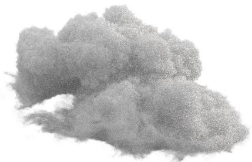<br />
(c) Path tracer Rendered in 32 ms (16 sam<sub>p</sub>les <sub>p</sub>er <sub>p</sub>ixel)<br />
Fig. 13. Preliminary results of training a NeRF cloud model (b) from real-time path tracing data. Within 32 ms, a 1024×1024 image of our model convincingly approximates the ofline rendered ground truth (a). Our model exhibits less noise than a GPU path tracer that ran for an equal amount of time (c). The cloud data is ©Walt Disne<sub>y</sub> Animation Studios (CC BY-SA 3.0)</p>
<h2>6 DISCUSSION AND FUTURE WORK</h2>
<p>Concatenation vs. reduction. At the end of the encoding, we concatenate rather than reduce (for example, by summing) the F -di-<sub>mens</sub>i<sub>ona</sub>l f<sub>ea</sub>t<sub>ure vec</sub>t<sub>ors o</sub>bt<sub>a</sub>i<sub>ne</sub>d f<sub>rom eac</sub>h <sub>reso</sub>l<sub>u</sub>ti<sub>on.</sub> W<sub>e pre</sub>f<sub>er</sub> <sub>conca</sub>t<sub>ena</sub>ti<sub>on</sub> f<sub>or</sub> t<sub>wo reasons.</sub> Fi<sub>rs</sub>t<sub>,</sub> it <sub>a</sub>ll<sub>ows</sub> f<sub>or</sub> i<sub>n</sub>d<sub>epen</sub>d<sub>en</sub>t<sub>,</sub> f<sub>u</sub>ll<sub>y</sub> <sub>para</sub>ll<sub>e</sub>l <sub>process</sub>i<sub>ng</sub> <sub>o</sub>f <sub>eac</sub>h <sub>reso</sub>l<sub>u</sub>ti<sub>on.</sub> S<sub>econ</sub>d<sub>,</sub> <sub>a</sub> <sub>re</sub>d<sub>uc</sub>ti<sub>on</sub> <sub>o</sub>f th<sub>e</sub> dimensionality of the encoded result y from LF to F may be too <sub>sma</sub>ll t<sub>o enco</sub>d<sub>e use</sub>f<sub>u</sub>l i<sub>n</sub>f<sub>orma</sub>ti<sub>on.</sub> Whil<sub>e</sub> F <sub>cou</sub>ld b<sub>e</sub> i<sub>ncrease</sub>d <sub>p</sub>ro<sub>p</sub>ortionall<sub>y,</sub> it would make the encodin<sub>g</sub> much more ex<sub>p</sub>ensive.</p>
<p>However<sub>,</sub> we reco<sub>g</sub>nize that there ma<sub>y</sub> be a<sub>pp</sub>lications in which <sub>re</sub>d<sub>uc</sub>ti<sub>on</sub> i<sub>s</sub> f<sub>avora</sub>bl<sub>e,</sub> <sub>suc</sub>h <sub>as</sub> <sub>w</sub>h<sub>en</sub> th<sub>e</sub> <sub>neura</sub>l <sub>ne</sub>t<sub>wor</sub>k i<sub>s</sub> <sub>s</sub>i<sub>gn</sub>ifi<sub>-</sub> <sub>can</sub>tl<sub>y</sub> <sub>more</sub> <sub>expens</sub>i<sub>ve</sub> th<sub>an</sub> th<sub>e</sub> <sub>enco</sub>di<sub>ng,</sub> i<sub>n</sub> <sub>w</sub>hi<sub>c</sub>h <sub>case</sub> th<sub>e</sub> <sub>a</sub>dd<sub>e</sub>d com<sub>p</sub>utational cost of increasin<sub>g</sub> F could be insi<sub>g</sub>nificant. We thus argue for concatenation by default and not as a hard-and-fast rule. In our a<sub>pp</sub>lications, concatenation, cou<sub>p</sub>led with F = 2 alwa<sub>y</sub>s <sub>y</sub>ielded b<sub>y</sub> f<sub>ar</sub> th<sub>e</sub> b<sub>es</sub>t <sub>resu</sub>lt<sub>s.</sub></p>
<p>Choice ofhash function. A good hash function is eficient to com <sub>pu</sub>t<sub>e,</sub> l<sub>ea</sub>d<sub>s</sub> t<sub>o</sub> <sub>co</sub>h<sub>eren</sub>t l<sub>oo</sub>k<sub>-ups,</sub> <sub>an</sub>d <sub>un</sub>if<sub>orm</sub>l<sub>y</sub> <sub>covers</sub> th<sub>e</sub> f<sub>ea</sub>t<sub>ure</sub> vector arra<sub>y</sub> re<sub>g</sub>ardless of the structure of <sub>q</sub>uer<sub>y</sub> <sub>p</sub>oints. We chose <sub>our</sub> h<sub>as</sub>h f<sub>unc</sub>ti<sub>on</sub> f<sub>or</sub> it<sub>s</sub> <sub>goo</sub>d <sub>m</sub>i<sub>x</sub>t<sub>ure</sub> <sub>o</sub>f th<sub>ese</sub> <sub>proper</sub>ti<sub>es</sub> <sub>an</sub>d <sub>a</sub>l<sub>so</sub> <sub>exper</sub>i<sub>men</sub>t<sub>e</sub>d <sub>w</sub>ith th<sub>ree</sub> <sub>o</sub>th<sub>ers:</sub></p>
<p>(1) The PCG32 [O’Neill 2014] RNG, which has su<sub>p</sub>erior statistical <sub>p</sub>ro<sub>p</sub>erties. Unfortunatel<sub>y,</sub> it did not <sub>y</sub>ield a hi<sub>g</sub>her-<sub>q</sub>ualit<sub>y</sub> reconstruction<sub>,</sub> makin<sub>g</sub> its hi<sub>g</sub>her cost not worthwhile.</p>
<p>(2) Orderin<sub>g</sub> the least si<sub>g</sub>nificant bits of Z<sup>d</sup> b<sub>y</sub> a s<sub>p</sub>ace-fillin<sub>g</sub> curve <sub>an</sub>d <sub>on</sub>l<sub>y</sub> h<sub>as</sub>hi<sub>ng</sub> th<sub>e</sub> hi<sub>g</sub>h<sub>er</sub> bit<sub>s.</sub> Thi<sub>s</sub> l<sub>ea</sub>d<sub>s</sub> t<sub>o</sub> b<sub>e</sub>tt<sub>er</sub> l<sub>oo</sub>k<sub>-up</sub> coherence at the cost of worse reconstruction <sub>q</sub>ualit<sub>y</sub>. However<sub>,</sub> the s<sub>p</sub>eed-u<sub>p</sub> is onl<sub>y</sub> mar<sub>g</sub>inall<sub>y</sub> better than settin<sub>g</sub> π<sub>1</sub> := 1 as d<sub>one</sub> i<sub>n</sub> <sub>our</sub> h<sub>as</sub>h<sub>,</sub> <sub>an</sub>d i<sub>s</sub> th<sub>us</sub> <sub>no</sub>t <sub>wor</sub>th th<sub>e</sub> <sub>re</sub>d<sub>uce</sub>d <sub>qua</sub>lit<sub>y.</sub></p>
<p>(3) Even better coherence can be achieved b<sub>y</sub> treatin<sub>g</sub> the hash function as a tilin<sub>g</sub> of s<sub>p</sub>ace into dense <sub>g</sub>rids. Like (2), the s<sub>p</sub>eedu<sub>p</sub> is small in <sub>p</sub>ractice with si<sub>g</sub>nificant detriment to <sub>q</sub>ualit<sub>y</sub>.</p>
<p>Alt<sub>erna</sub>ti<sub>ve</sub>l<sub>y</sub> t<sub>o</sub> h<sub>an</sub>d<sub>-cra</sub>ft<sub>e</sub>d h<sub>as</sub>h f<sub>unc</sub>ti<sub>ons,</sub> it i<sub>s conce</sub>i<sub>va</sub>bl<sub>e</sub> t<sub>o</sub> optimize the hash function in future work, turning the method into a dictionary-learning approach. Two possible avenues are (1) develo<sub>p</sub>in<sub>g</sub> a continuous formulation of indexin<sub>g</sub> that is amenable to analytic diferentiation or (2) applying an evolutionary optimization <sub>a</sub>l<sub>gor</sub>ith<sub>m</sub> th<sub>a</sub>t <sub>can</sub> <sub>e</sub>fi<sub>c</sub>i<sub>en</sub>tl<sub>y</sub> <sub>exp</sub>l<sub>ore</sub> th<sub>e</sub> di<sub>scre</sub>t<sub>e</sub> f<sub>unc</sub>ti<sub>on</sub> <sub>space.</sub></p>
<p>Microstructure due to hash collisions. The salient artifact of our <sub>enco</sub>di<sub>ng</sub> i<sub>s a sma</sub>ll <sub>amoun</sub>t <sub>o</sub>f “<sub>gra</sub>i<sub>ny</sub>” <sub>m</sub>i<sub>cros</sub>t<sub>ruc</sub>t<sub>ure, mos</sub>t <sub>v</sub>i<sub>s</sub>ibl<sub>e</sub> on the learned si<sub>g</sub>ned distance functions (Fi<sub>g</sub>ure 1 and Fi<sub>g</sub>ure 7). Th<sub>e gra</sub>i<sub>n</sub>i<sub>ness</sub> i<sub>s a resu</sub>lt <sub>o</sub>f h<sub>as</sub>h <sub>co</sub>lli<sub>s</sub>i<sub>ons</sub> th<sub>a</sub>t th<sub>e</sub> MLP i<sub>s una</sub>bl<sub>e</sub> t<sub>o</sub> f<sub>u</sub>ll<sub>y compensa</sub>t<sub>e</sub> f<sub>or.</sub> W<sub>e</sub> b<sub>e</sub>li<sub>eve</sub> th<sub>a</sub>t th<sub>e</sub> k<sub>ey</sub> t<sub>o ac</sub>hi<sub>ev</sub>i<sub>ng s</sub>t<sub>a</sub>t<sub>e-</sub> <sub>o</sub>f<sub>-</sub>th<sub>e-ar</sub>t <sub>qua</sub>lit<sub>y on</sub> SDF<sub>s w</sub>ith <sub>our enco</sub>di<sub>ng w</sub>ill b<sub>e</sub> t<sub>o</sub> fi<sub>n</sub>d <sub>a way</sub> t<sub>o overcome</sub> thi<sub>s m</sub>i<sub>cros</sub>t<sub>ruc</sub>t<sub>ure,</sub> f<sub>or examp</sub>l<sub>e</sub> b<sub>y</sub> filt<sub>er</sub>i<sub>ng</sub> h<sub>as</sub>h t<sub>a</sub>bl<sub>e</sub> looku<sub>p</sub>s or b<sub>y</sub> im<sub>p</sub>osin<sub>g</sub> an additional smoothness <sub>p</sub>rior on the loss.</p>
<p>Generative setting. Parametric input encodings, when used in a <sub>g</sub>enerative settin<sub>g,</sub> t<sub>yp</sub>icall<sub>y</sub> arran<sub>g</sub>e their features in a dense <sub>gr</sub>id <sub>w</sub>hi<sub>c</sub>h <sub>can</sub> th<sub>en</sub> b<sub>e</sub> <sub>popu</sub>l<sub>a</sub>t<sub>e</sub>d b<sub>y</sub> <sub>a</sub> <sub>separa</sub>t<sub>e</sub> <sub>genera</sub>t<sub>or</sub> <sub>ne</sub>t<sub>wor</sub>k<sub>,</sub> t<sub>yp</sub>icall<sub>y</sub> a CNN such as St<sub>y</sub>leGAN [Chan et al. 2021; DeVries et al. 2021; Pen<sub>g</sub> et al. 2020b]. Our hash encodin<sub>g</sub> adds an additional la<sub>y</sub>er of com<sub>p</sub>lexit<sub>y,</sub> as the features are not arran<sub>g</sub>ed in a re<sub>g</sub>ular <sub>p</sub>attern t<sup>h</sup>roug<sup>h</sup> t<sup>h</sup>e input <sup>d</sup>omain; t<sup>h</sup>at is, t<sup>h</sup>e <sup>f</sup>eatures are not <sup>b</sup>ijective wit<sup>h</sup> a re<sub>g</sub>ular <sub>g</sub>rid of <sub>p</sub>oints. We leave it to future work to determine h<sub>ow</sub> b<sub>es</sub>t t<sub>o</sub> <sub>overcome</sub> thi<sub>s</sub> difi<sub>cu</sub>lt<sub>y.</sub></p>
<p>Other applications. We are interested in applying the multiresol<sub>u</sub>ti<sub>on</sub> h<sub>as</sub>h <sub>enco</sub>di<sub>ng</sub> t<sub>o o</sub>th<sub>er</sub> l<sub>ow-</sub>di<sub>mens</sub>i<sub>ona</sub>l t<sub>as</sub>k<sub>s</sub> th<sub>a</sub>t <sub>requ</sub>i<sub>re</sub> accurate<sub>,</sub> hi<sub>g</sub>h-fre<sub>q</sub>uenc<sub>y</sub> fits. The fre<sub>q</sub>uenc<sub>y</sub> encodin<sub>g</sub> ori<sub>g</sub>inated from the attention mechanism of transformer networks [Vaswani et al. 2017]. We ho<sub>p</sub>e that <sub>p</sub>arametric encodin<sub>g</sub>s such as ours can l<sub>ea</sub>d t<sub>o</sub> <sub>a</sub> <sub>mean</sub>i<sub>ng</sub>f<sub>u</sub>l i<sub>mprovemen</sub>t i<sub>n</sub> <sub>genera</sub>l<sub>,</sub> <sub>a</sub>tt<sub>en</sub>ti<sub>on-</sub>b<sub>ase</sub>d t<sub>as</sub>k<sub>s.</sub></p>
<p>H<sub>e</sub>t<sub>erogenous vo</sub>l<sub>ume</sub>t<sub>r</sub>i<sub>c</sub> d<sub>ens</sub>it<sub>y</sub> fi<sub>e</sub>ld<sub>s, suc</sub>h <sub>as c</sub>l<sub>ou</sub>d <sub>an</sub>d <sub>smo</sub>k<sub>e</sub> stored in a VDB [Museth 2013, 2021] data structure, often include em<sub>p</sub>t<sub>y</sub> s<sub>p</sub>ace on the outside<sub>,</sub> a solid core on the inside<sub>,</sub> and s<sub>p</sub>arse d<sub>e</sub>t<sub>a</sub>il <sub>on</sub> th<sub>e</sub> <sub>vo</sub>l<sub>ume</sub>t<sub>r</sub>i<sub>c</sub> <sub>sur</sub>f<sub>ace.</sub> Thi<sub>s</sub> <sub>ma</sub>k<sub>es</sub> th<sub>em</sub> <sub>a</sub> <sub>goo</sub>d fit f<sub>or</sub> <sub>our</sub> <sub>enco</sub>di<sub>ng.</sub> I<sub>n</sub> th<sub>e</sub> <sub>co</sub>d<sub>e</sub> <sub>re</sub>l<sub>ease</sub>d <sub>a</sub>l<sub>ongs</sub>id<sub>e</sub> thi<sub>s</sub> <sub>paper,</sub> <sub>we</sub> h<sub>ave</sub> i<sub>nc</sub>l<sub>u</sub>d<sub>e</sub>d <sub>a pre</sub>li<sub>m</sub>i<sub>nary</sub> i<sub>mp</sub>l<sub>emen</sub>t<sub>a</sub>ti<sub>on</sub> th<sub>a</sub>t fit<sub>s a ra</sub>di<sub>ance an</sub>d d<sub>ens</sub>it<sub>y</sub> fi<sub>e</sub>ld di<sub>rec</sub>tl<sub>y</sub> f<sub>rom</sub> th<sub>e no</sub>i<sub>sy ou</sub>t<sub>pu</sub>t <sub>o</sub>f <sub>a vo</sub>l<sub>ume</sub>t<sub>r</sub>i<sub>c pa</sub>th tr<sub>ace</sub>r<sub>.</sub> Th<sub>e</sub> initi<sub>a</sub>l r<sub>esu</sub>lt<sub>s a</sub>r<sub>e p</sub>r<sub>o</sub>mi<sub>s</sub>in<sub>g, as s</sub>h<sub>ow</sub>n in Fi<sub>gu</sub>r<sub>e</sub> 13<sub>, a</sub>nd <sub>we</sub> i<sub>n</sub>t<sub>en</sub>d t<sub>o pursue</sub> thi<sub>s</sub> di<sub>rec</sub>ti<sub>on</sub> f<sub>ur</sub>th<sub>er</sub> i<sub>n</sub> f<sub>u</sub>t<sub>ure wor</sub>k<sub>.</sub></p>
<h2>7 CONCLUSION</h2>
<p>Man<sub>y g</sub>ra<sub>p</sub>hics <sub>p</sub>roblems rel<sub>y</sub> on task s<sub>p</sub>ecific data structures to <sub>exp</sub>l<sub>o</sub>it th<sub>e spars</sub>it<sub>y or smoo</sub>th<sub>ness o</sub>f th<sub>e pro</sub>bl<sub>em a</sub>t h<sub>an</sub>d<sub>.</sub> O<sub>ur</sub> <sub>mu</sub>lti<sub>-reso</sub>l<sub>u</sub>ti<sub>on</sub> h<sub>as</sub>h <sub>enco</sub>di<sub>ng</sub> <sub>prov</sub>id<sub>es</sub> <sub>a</sub> <sub>prac</sub>ti<sub>ca</sub>l l<sub>earn</sub>i<sub>ng-</sub>b<sub>ase</sub>d <sub>a</sub>lt<sub>erna</sub>ti<sub>ve</sub> th<sub>a</sub>t <sub>au</sub>t<sub>oma</sub>ti<sub>ca</sub>ll<sub>y</sub> f<sub>ocuses on re</sub>l<sub>evan</sub>t d<sub>e</sub>t<sub>a</sub>il<sub>,</sub> i<sub>n</sub>d<sub>epen-</sub> d<sub>en</sub>t <sub>o</sub>f th<sub>e</sub> t<sub>as</sub>k<sub>.</sub> It<sub>s</sub> l<sub>ow over</sub>h<sub>ea</sub>d <sub>a</sub>ll<sub>ows</sub> it t<sub>o</sub> b<sub>e use</sub>d <sub>even</sub> i<sub>n</sub> ti<sub>me-</sub> constrained settin<sub>g</sub>s like online trainin<sub>g</sub> and inference. In the context of neural network in<sub>p</sub>ut encodin<sub>g</sub>s<sub>,</sub> it is a dro<sub>p</sub>-in re<sub>p</sub>lacement<sub>,</sub> for exam<sub>p</sub>le s<sub>p</sub>eedin<sub>g</sub> u<sub>p</sub> NeRF b<sub>y</sub> several orders of ma<sub>g</sub>nitude and <sub>ma</sub>t<sub>c</sub>hi<sub>ng</sub> th<sub>e</sub> <sub>per</sub>f<sub>ormance</sub> <sub>o</sub>f <sub>concurren</sub>t <sub>non-neura</sub>l 3D <sub>recons</sub>t<sub>ruc-</sub> tion techni<sub>qu</sub>es.</p>
<p>Slow com<sub>p</sub>utational <sub>p</sub>rocesses in an<sub>y</sub> settin<sub>g,</sub> from li<sub>g</sub>htma<sub>p</sub> baki<sub>ng</sub> t<sub>o</sub> th<sub>e</sub> t<sub>ra</sub>i<sub>n</sub>i<sub>ng</sub> <sub>o</sub>f <sub>neura</sub>l <sub>ne</sub>t<sub>wor</sub>k<sub>s,</sub> <sub>can</sub> l<sub>ea</sub>d t<sub>o</sub> f<sub>rus</sub>t<sub>ra</sub>ti<sub>ng</sub> <sub>wor</sub>k<sub>-</sub> flows due to lon<sub>g</sub> iteration times [Enderton and Wexler 2011]. We have demonstrated that sin<sub>g</sub>le-GPU trainin<sub>g</sub> times meas<sub>u</sub>red in seconds are within reach for man<sub>y</sub> <sub>g</sub>ra<sub>p</sub>hics a<sub>pp</sub>lications<sub>,</sub> allowin<sub>g</sub> neural a<sub>pp</sub>roaches to be a<sub>pp</sub>lied where <sub>p</sub>reviousl<sub>y</sub> the<sub>y</sub> ma<sub>y</sub> have b<sub>een</sub> di<sub>scoun</sub>t<sub>e</sub>d<sub>.</sub></p>
<h2>ACKNOWLEDGMENTS</h2>
<p>We are grate<sup>f</sup>u<sup>l</sup> to An<sup>d</sup>rew Tao, An<sup>d</sup>rew We<sup>bb</sup>, Anju<sup>l</sup> Patney, Davi<sup>d</sup> Luebke, Fabrice Rousselle, Jacob Munkber<sub>g</sub>, James Lucas, Jonathan Gransko<sub>g</sub>, Jonathan Trembla<sub>y</sub>, Koki Na<sub>g</sub>ano, Marco Salvi, Nikolaus Bi<sub>n</sub>d<sub>er, an</sub>d T<sub>owa</sub>ki T<sub>a</sub>kik<sub>awa</sub> f<sub>or pro</sub>f<sub>oun</sub>d di<sub>scuss</sub>i<sub>ons, proo</sub>f<sub>rea</sub>d<sub>-</sub> i<sub>ng,</sub> f<sub>ee</sub>db<sub>ac</sub>k<sub>, an</sub>d <sub>ear</sub>l<sub>y</sub> t<sub>es</sub>ti<sub>ng.</sub> W<sub>e a</sub>l<sub>so</sub> th<sub>an</sub>k A<sub>rman</sub> T<sub>oor</sub>i<sub>ans an</sub>d Saurabh Jain for the factor<sub>y</sub> robot dataset in Fi<sub>g</sub>ure 12 (ri<sub>g</sub>ht).</p>
<h2>REFERENCES</h2>
<p>Thomas Annen, Tom Mertens, Phili<sub>pp</sub>e Bekaert, Hans-Peter Seidel, and Jan Kautz. 2007. Convolution Shadow Maps. In Rendering Techniques, Jan Kautz and Sumanta Pattanaik (Eds.). The Euro<sub>g</sub>ra<sub>p</sub>hics Association. htt<sub>p</sub>s://doi.or<sub>g</sub>/10.2312/EGWR EGSR07/051-060</p>
<p>Jonathan T. Barron, Ben Mildenhall, Matthew Tancik, Peter Hedman, Ricardo Martin Br<sub>ua</sub>ll<sub>a, a</sub>nd Pr<sub>a</sub>t<sub>u</sub>l P<sub>.</sub> Srini<sub>vasa</sub>n<sub>.</sub> 2021<sub>a.</sub> Mi<sub>p</sub>-N<sub>e</sub>RF: A M<sub>u</sub>lti<sub>sca</sub>l<sub>e</sub> R<sub>ep</sub>r<sub>ese</sub>nt<sub>a</sub>ti<sub>o</sub>n f<sub>o</sub>r Anti-Aliasing Neural Radiance Fields. arXiv (2021). https://jonbarron.info/mipnerf</p>
<p>Jonathan T. Barron, Ben Mildenhall, Dor Verbin, Pratul P. Srinivasan, and Peter Hed m<sub>a</sub>n<sub>.</sub> 2021b<sub>.</sub> Mi<sub>p</sub>-N<sub>e</sub>RF 360: Unb<sub>ou</sub>nd<sub>e</sub>d Anti-Ali<sub>ase</sub>d N<sub>eu</sub>r<sub>a</sub>l R<sub>a</sub>di<sub>a</sub>n<sub>ce</sub> Fi<sub>e</sub>ld<sub>s.</sub> arXiv:2111.12077 (Nov. 2021).</p>
<p>Rohan Chabra, Jan E. Lenssen, Edd<sub>y</sub> Il<sub>g</sub>, Tanner Schmidt, Julian Straub, Steven Love-<sub>g</sub>ro<sub>v</sub>e<sub>,</sub> and Richard Ne<sub>w</sub>combe. 2020. Dee<sub>p</sub> Local Sha<sub>p</sub>es: Learnin<sub>g</sub> Local SDF Priors for Detailed 3D Reconstruction. In Computer Vision – ECCV 2020 Andrea Vedaldi Horst Bischof, Thomas Brox, and Jan-Michael Frahm (Eds.). S<sub>p</sub>rin<sub>g</sub>er International Publishin<sub>g,</sub> Cham<sub>,</sub> 608–625.</p>
<p>Eri<sub>c</sub> R<sub>.</sub> Ch<sub>a</sub>n<sub>,</sub> C<sub>o</sub>nn<sub>o</sub>r Z<sub>.</sub> Lin<sub>,</sub> M<sub>a</sub>tth<sub>ew</sub> A<sub>.</sub> Ch<sub>a</sub>n<sub>,</sub> K<sub>o</sub>ki N<sub>aga</sub>n<sub>o,</sub> B<sub>o</sub>xi<sub>ao</sub> P<sub>a</sub>n<sub>,</sub> Sh<sub>a</sub>lini D<sub>e</sub> Mello, Orazio Gallo, Leonidas Guibas, Jonathan Trembla<sub>y</sub>, Sameh Khamis, Tero K<sub>a</sub>rr<sub>as, a</sub>nd G<sub>o</sub>rd<sub>o</sub>n W<sub>e</sub>tz<sub>s</sub>t<sub>e</sub>in<sub>.</sub> 2021<sub>.</sub> Efi<sub>c</sub>i<sub>e</sub>nt G<sub>eo</sub>m<sub>e</sub>tr<sub>y</sub>-<sub>awa</sub>r<sub>e</sub> 3D G<sub>e</sub>n<sub>e</sub>r<sub>a</sub>ti<sub>ve</sub> Adversarial Networks. arXiv:2112.07945 (2021). arXiv:2112.07945 [cs.CV]</p>
<p>Julian Chibane, Thiemo Alldieck, and Gerard Pons-Moll. 2020. Im<sub>p</sub>licit Functions in Feature Space for 3D Shape Reconstruction and Completion. In IEEE Conference on Computer Vision and Pattern Recognition (CVPR). IEEE.</p>
<p>T<sub>e</sub>rr<sub>a</sub>n<sub>ce</sub> D<sub>e</sub>Vri<sub>es,</sub> Mi<sub>gue</sub>l An<sub>ge</sub>l B<sub>au</sub>ti<sub>s</sub>t<sub>a,</sub> Niti<sub>s</sub>h Sri<sub>vas</sub>t<sub>ava,</sub> Gr<sub>a</sub>h<sub>a</sub>m W<sub>.</sub> T<sub>ay</sub>l<sub>o</sub>r<sub>, a</sub>nd Joshua M. Susskind. 2021. Unconstrained Scene Generation with Locall<sub>y</sub> Condi tioned Radiance Fields. arXiv (2021).</p>
<p>Eric Enderton and Daniel Wexler. 2011. The Workflow Scale. In Computer Graphics International Workshop on VFX, Computer Animation, and Stereo Movies.</p>
<p>Al<sub>e</sub>x E<sub>va</sub>n<sub>s.</sub> 2006<sub>.</sub> F<sub>as</sub>t A<sub>pp</sub>r<sub>o</sub>xim<sub>a</sub>ti<sub>o</sub>n<sub>s</sub> f<sub>o</sub>r Gl<sub>o</sub>b<sub>a</sub>l Ill<sub>u</sub>min<sub>a</sub>ti<sub>o</sub>n <sub>o</sub>n D<sub>y</sub>n<sub>a</sub>mi<sub>c</sub> S<sub>ce</sub>n<sub>es.</sub> In ACM SIGGRAPH 2006 Courses (Boston, Massachusetts) (SIGGRAPH ’06). Association f<sub>o</sub>r C<sub>o</sub>m <sub>u</sub>tin M<sub>ac</sub>hin<sub>e</sub>r <sub>,</sub> N<sub>ew</sub> Y<sub>o</sub>rk<sub>,</sub> NY<sub>,</sub> USA<sub>,</sub> 153–171<sub>.</sub> htt <sub>s</sub>://d<sub>o</sub>i<sub>.o</sub>r /10<sub>.</sub>1145 1185657.1185834</p>
<p>Ste<sub>p</sub>han J. Garbin, Marek Kowalski, Matthew Johnson, Jamie Shotton, and Julien Valentin. 2021. FastNeRF: Hi<sub>g</sub>h-Fidelit<sub>y</sub> Neural Renderin<sub>g</sub> at 200FPS. arXiv:2103.10380 (March 2021).</p>
<p>Jonas Gehrin<sub>g</sub>, Michael Auli, David Gran<sub>g</sub>ier, Denis Yarats, and Yann N. Dau<sub>p</sub>hin. 2017. Convolutional Sequence to Sequence Learning. In Proceedings ofthe 34th International Conference on Machine Learning - Volume 70 (Sydney, NSW, Australia) (ICML’17). JMLR.org, 1243—-1252.</p>
<p>Xavier Glorot and Yoshua Ben<sub>g</sub>io. 2010. Understandin<sub>g</sub> the Dificult<sub>y</sub> of Trainin<sub>g</sub> Dee<sub>p</sub> Feedforward Neural Networks. In Proc. 13th International Conference on Artificial Intelligence and Statistics (Sardinia, Italy, May 13–15). JMLR.org, 249–256.</p>
<p>Saeed Hadadan, Shuhong Chen, and Matthias Zwicker. 2021. Neural radiosity. ACM Transactions on Graphics 40, 6 (Dec. 2021), 1—-11. https://doi.org/10.1145/3478513.</p>
<p>3480569</p>
<p>David Mone Harris and Sarah L. Harris. 2013. 3.4.2 - State Encodin s. In Digital Design and Computer Architecture (second ed.). Morgan Kaufmann, Boston, 129–131. htt<sub>p</sub>s://doi.or<sub>g</sub>/10.1016/B978-0-12-394424-5.00002-1</p>
<p>Jon Jansen and Louis Bavoil. 2010. Fourier Opacity Mapping. In Proceedings of the 2010 ACM SIGGRAPH Symposium on Interactive 3D Graphics and Games (Washington, D.C.) (I3D ’10). Association for Computing Machinery, New York, NY, USA, 165—-172. htt<sub>p</sub>s://doi.or<sub>g</sub>/10.1145/1730804.1730831</p>
<p>Chi<sub>y</sub>u Max Jian<sub>g</sub>, Avneesh Sud, Ameesh Makadia, Jin<sub>g</sub>wei Huan<sub>g</sub>, Matthias Nießner, <sub>a</sub>nd Th<sub>o</sub>m<sub>as</sub> F<sub>u</sub>nkh<sub>ouse</sub>r<sub>.</sub> 2020<sub>.</sub> L<sub>oca</sub>l Im<sub>p</sub>li<sub>c</sub>it Grid R<sub>ep</sub>r<sub>ese</sub>nt<sub>a</sub>ti<sub>o</sub>n<sub>s</sub> f<sub>o</sub>r 3D S<sub>ce</sub>n<sub>es.</sub> In Proceedings IEEE Conf. on Computer Vision and Pattern Recognition (CVPR).</p>
<p>Diederik P. Kin<sub>g</sub>ma and Jimm<sub>y</sub> Ba. 2014. Adam: A Method for Stochastic O<sub>p</sub>timization. arXiv:1412.6980 (June 2014).</p>
<p>D<sub>e</sub>rri<sub>c</sub>k H<sub>.</sub> L<sub>e</sub>hm<sub>e</sub>r<sub>.</sub> 1951<sub>.</sub> M<sub>a</sub>th<sub>e</sub>m<sub>a</sub>ti<sub>ca</sub>l M<sub>e</sub>th<sub>o</sub>d<sub>s</sub> in L<sub>a</sub>r<sub>ge</sub>-<sub>sca</sub>l<sub>e</sub> C<sub>o</sub>m<sub>pu</sub>tin<sub>g</sub> Unit<sub>s.</sub> In Proceedings ofthe Second Symposium on Large Scale Digital Computing Machinery. H<sub>a</sub>r<sub>va</sub>rd Uni<sub>ve</sub>r<sub>s</sub>it<sub>y</sub> Pr<sub>ess,</sub> C<sub>a</sub>mbrid<sub>ge,</sub> Unit<sub>e</sub>d Kin<sub>g</sub>d<sub>o</sub>m<sub>,</sub> 141–146<sub>.</sub></p>
<p>Jaakko Lehtinen, Jacob Munkber<sub>g</sub>, Jon Hassel<sub>g</sub>ren, Samuli Laine, Tero Karras, Miika Aitt<sub>a</sub>l<sub>a, a</sub>nd Tim<sub>o</sub> Ail<sub>a.</sub> 2018<sub>.</sub> N<sub>o</sub>i<sub>se</sub>2N<sub>o</sub>i<sub>se</sub>: L<sub>ea</sub>rnin<sub>g</sub> Im<sub>age</sub> R<sub>es</sub>t<sub>o</sub>r<sub>a</sub>ti<sub>o</sub>n <sub>w</sub>ith<sub>ou</sub>t Clean Data. arXiv:1803.04189 (March 2018).</p>
<p>Lingjie Liu, Jiatao Gu, Kyaw Zaw Lin, Tat-Seng Chua, and Christian Theobalt. 2020. Neural Sparse Voxel Fields. NeurIPS (2020). https://lingjie0206.github.io/papers/ NSVF/</p>
<p>Julien N.P. Martel, David B. Lindell, Connor Z. Lin, Eric R. Chan, Marco Monteiro, <sub>a</sub>nd G<sub>o</sub>rd<sub>o</sub>n W<sub>e</sub>tz<sub>s</sub>t<sub>e</sub>in<sub>.</sub> 2021<sub>.</sub> ACORN: Ad<sub>ap</sub>ti<sub>ve</sub> C<sub>oo</sub>rdin<sub>a</sub>t<sub>e</sub> N<sub>e</sub>t<sub>wo</sub>rk<sub>s</sub> f<sub>o</sub>r N<sub>eu</sub>r<sub>a</sub>l Representation. ACM Trans. Graph. (SIGGRAPH) (2021).</p>
<p>I<sub>s</sub>hit M<sub>e</sub>ht<sub>a,</sub> Mi<sub>c</sub>h<sub>a</sub>ël Gh<sub>a</sub>rbi<sub>,</sub> C<sub>o</sub>nn<sub>e</sub>ll B<sub>a</sub>rn<sub>es,</sub> Eli Sh<sub>ec</sub>htm<sub>a</sub>n<sub>,</sub> R<sub>av</sub>i R<sub>a</sub>m<sub>a</sub>m<sub>oo</sub>rthi<sub>, a</sub>nd M<sub>anmo</sub>h<sub>an</sub> Ch<sub>an</sub>d<sub>ra</sub>k<sub>er.</sub> 2021<sub>.</sub> M<sub>o</sub>d<sub>u</sub>l<sub>a</sub>t<sub>e</sub>d P<sub>er</sub>i<sub>o</sub>di<sub>c</sub> A<sub>c</sub>ti<sub>va</sub>ti<sub>ons</sub> f<sub>or</sub> G<sub>enera</sub>li<sub>za</sub>bl<sub>e</sub> Local Functional Representations. In IEEE International Conference on Computer Vision. IEEE.</p>
<p>Paulius Micikevicius, Sharan Naran<sub>g</sub>, Jonah Alben, Gre<sub>g</sub>or<sub>y</sub> Diamos, Erich Elsen, David G<sub>a</sub>r<sub>c</sub>i<sub>a,</sub> B<sub>o</sub>ri<sub>s</sub> Gin<sub>s</sub>b<sub>u</sub>r <sub>,</sub> Mi<sub>c</sub>h<sub>ae</sub>l H<sub>ous</sub>t<sub>o</sub>n<sub>,</sub> Ol<sub>e</sub>k<sub>s</sub>ii K<sub>uc</sub>h<sub>a</sub>i<sub>ev,</sub> G<sub>a</sub>n<sub>es</sub>h V<sub>e</sub>nk<sub>a</sub>t<sub>es</sub>h<sub>, a</sub>nd Hao Wu. 2018. Mixed Precision Training. arXiv:1710.03740 (Oct. 2018).</p>
<p>B<sub>e</sub>n Mild<sub>e</sub>nh<sub>a</sub>ll<sub>,</sub> P<sub>e</sub>t<sub>e</sub>r H<sub>e</sub>dm<sub>a</sub>n<sub>,</sub> Ri<sub>ca</sub>rd<sub>o</sub> M<sub>a</sub>rtin-Br<sub>ua</sub>ll<sub>a,</sub> Pr<sub>a</sub>t<sub>u</sub>l Srini<sub>vasa</sub>n<sub>, a</sub>nd Jonathan T. Barron. 2021. NeRF in the Dark: Hi<sub>g</sub>h D<sub>y</sub>namic Ran<sub>g</sub>e View S<sub>y</sub>nthesis from Noisy Raw Images. arXiv:2111.13679 (Nov. 2021).</p>
<p>B<sub>e</sub>n Mild<sub>e</sub>nh<sub>a</sub>ll<sub>,</sub> Pr<sub>a</sub>t<sub>u</sub>l P<sub>.</sub> Srini<sub>vasa</sub>n<sub>,</sub> R<sub>o</sub>dri<sub>go</sub> Ortiz-C<sub>ayo</sub>n<sub>,</sub> Nim<sub>a</sub> Kh<sub>a</sub>d<sub>e</sub>mi K<sub>a</sub>l<sub>a</sub>nt<sub>a</sub>ri<sub>,</sub> R<sub>av</sub>i R<sub>a</sub>m<sub>a</sub>m<sub>oo</sub>rthi<sub>,</sub> R<sub>e</sub>n N<sub>g, a</sub>nd Abhi<sub>s</sub>h<sub>e</sub>k K<sub>a</sub>r<sub>.</sub> 2019<sub>.</sub> L<sub>oca</sub>l Li<sub>g</sub>ht Fi<sub>e</sub>ld F<sub>us</sub>i<sub>o</sub>n: Practical View Synthesis with Prescriptive Sampling Guidelines. ACM Trans. Graph. 38, 4, Article 29 (Jul<sub>y</sub> 2019), 14 <sub>p</sub>a<sub>g</sub>es. htt<sub>p</sub>s://doi.or<sub>g</sub>/10.1145/3306346.3322980</p>
<p>Ben Mildenhall, Pratul P. Srinivasan, Matthew Tancik, Jonathan T. Barron, Ravi Ra m<sub>a</sub>m<sub>oo</sub>rthi<sub>, a</sub>nd R<sub>e</sub>n N<sub>g.</sub> 2020<sub>.</sub> N<sub>e</sub>RF: R<sub>ep</sub>r<sub>ese</sub>ntin<sub>g</sub> S<sub>ce</sub>n<sub>es as</sub> N<sub>eu</sub>r<sub>a</sub>l R<sub>a</sub>di<sub>a</sub>n<sub>ce</sub> Fi<sub>e</sub>ld<sub>s</sub> for View S nthesis. In ECCV.</p>
<p>Th<sub>omas</sub> Müll<sub>er.</sub> 2021<sub>.</sub> Tin<sub>y</sub> CUDA N<sub>eu</sub>r<sub>a</sub>l N<sub>e</sub>t<sub>wo</sub>rk Fr<sub>a</sub>m<sub>ewo</sub>rk<sub>.</sub> htt<sub>p</sub>s://<sub>g</sub>ithub.com/nvlabs/tin<sub>y</sub>-cuda-nn.</p>
<p>Thomas Müller, Brian McWilliams, Fabrice Rousselle, Markus Gross, and Jan Novák. 2019. Neural Importance Sampling. ACM Trans. Graph. 38, 5, Article 145 (Oct. 2019), 19 <sub>p</sub>a<sub>g</sub>es. htt<sub>p</sub>s://doi.or<sub>g</sub>/10.1145/3341156</p>
<p>Thomas Müller, Fabrice Rousselle, Alexander Keller, and Jan Novák. 2020. Neural Control Variates. ACM Trans. Graph. 39, 6, Article 243 (Nov. 2020), 19 pages. https: //doi.or<sub>g</sub>/10.1145/3414685.3417804</p>
<p>Thomas Müller, Fabrice Rousselle, Jan Novák, and Alexander Keller. 2021. Real-time Neural Radiance Caching for Path Tracing. ACM Trans. Graph. 40, 4, Article 36 (Aug. 2021), 16 <sub>p</sub>a<sub>g</sub>es. htt<sub>p</sub>s://doi.or<sub>g</sub>/10.1145/3450626.3459812</p>
<p>K<sub>e</sub>n M<sub>use</sub>th<sub>.</sub> 2013<sub>.</sub> VDB: Hi<sub>g</sub>h-R<sub>eso</sub>l<sub>u</sub>ti<sub>o</sub>n S<sub>pa</sub>r<sub>se</sub> V<sub>o</sub>l<sub>u</sub>m<sub>es</sub> <sub>w</sub>ith D<sub>y</sub>n<sub>a</sub>mi<sub>c</sub> T<sub>opo</sub>l<sub>ogy.</sub> ACM Trans. Graph. 32, 3, Article 27 (July 2013), 22 pages. https://doi.org/10.1145/ 2487228.2487235</p>
<p>K<sub>e</sub>n M<sub>use</sub>th<sub>.</sub> 2021<sub>.</sub> N<sub>a</sub>n<sub>o</sub>VDB: A GPU-Fri<sub>e</sub>ndl<sub>y a</sub>nd P<sub>o</sub>rt<sub>a</sub>bl<sub>e</sub> VDB D<sub>a</sub>t<sub>a</sub> Str<sub>uc</sub>t<sub>u</sub>r<sub>e</sub> F<sub>o</sub>r Real-Time Renderin And Simulation. In ACM SIGGRAPH 2021 Talks (Virtual Event, USA) (SIGGRAPH ’21). Association for Com utin Machiner , New York, NY, USA, Article 1<sub>,</sub> 2 <sub>p</sub>a<sub>g</sub>es. htt<sub>p</sub>s://doi.or<sub>g</sub>/10.1145/3450623.3464653</p>
<p>Thomas Nef, Pascal Stadlbauer, Mathias Par<sub>g</sub>er, Andreas Kurz, Joer<sub>g</sub> H. Mueller, Chakra<sub>v</sub>art<sub>y</sub> R. Alla Chaitan<sub>y</sub>a<sub>,</sub> Anton S. Ka<sub>p</sub>lan<sub>y</sub>an<sub>,</sub> and Mark<sub>u</sub>s Steinber<sub>g</sub>er. 2021<sub>.</sub> DON<sub>e</sub>RF: T<sub>owa</sub>rd<sub>s</sub> R<sub>ea</sub>l-Tim<sub>e</sub> R<sub>e</sub>nd<sub>e</sub>rin<sub>g o</sub>f C<sub>o</sub>m<sub>pac</sub>t N<sub>eu</sub>r<sub>a</sub>l R<sub>a</sub>di<sub>a</sub>n<sub>ce</sub> Fields using Depth Oracle Networks. Computer Graphics Forum 40, 4 (2021). htt<sub>p</sub>s://doi.or<sub>g</sub>/10.1111/c<sub>g</sub>f.14340</p>
<p>M<sub>a</sub>tthi<sub>as</sub> Ni<sub>e</sub>ßn<sub>e</sub>r<sub>,</sub> Mi<sub>c</sub>h<sub>ae</sub>l Z<sub>o</sub>llhöf<sub>e</sub>r<sub>,</sub> Sh<sub>a</sub>hr<sub>a</sub>m Iz<sub>a</sub>di<sub>,</sub> <sub>a</sub>nd M<sub>a</sub>r<sub>c</sub> St<sub>a</sub>mmin<sub>ge</sub>r<sub>.</sub> 2013<sub>.</sub> R<sub>ea</sub>l Time 3D Reconstruction at Scale Using Voxel Hashing. ACM Trans. Graph. 32, 6, Article 169 (nov 2013), 11 <sub>p</sub>a<sub>g</sub>es. htt<sub>p</sub>s://doi.or<sub>g</sub>/10.1145/2508363.2508374</p>
<p>Fakir S. Noor<sub>u</sub>ddin and Gre<sub>g</sub> T<sub>u</sub>rk. 2003. Sim<sub>p</sub>lification and Re<sub>p</sub>air of Pol<sub>yg</sub>onal Models Using Volumetric Techniques. IEEE Transactions on Visualization and Computer Graphics 9, 2 (apr 2003), 191––205. https://doi.org/10.1109/TVCG.2003.1196006</p>
<p>Melissa E. O’Neill. 2014. PCG: A Family of Simple Fast Space-Eficient Statistically Good Algorithms for Random Number Generation. Technical Report HMC-CS-2014-0905. Har<sub>v</sub>e<sub>y</sub> M<sub>u</sub>dd Colle<sub>g</sub>e<sub>,</sub> Claremont<sub>,</sub> CA.</p>
<p>Jeon<sub>g</sub> Joon Park, Peter Florence, Julian Straub, Richard Newcombe, and Steven Love-<sub>g</sub>ro<sub>v</sub>e. 2019. Dee<sub>p</sub>SDF: Learnin<sub>g</sub> Contin<sub>u</sub>o<sub>u</sub>s Si<sub>g</sub>ned Distance F<sub>u</sub>nctions for Sha<sub>p</sub>e</p>
<p>Representation. arXiv:1901.05103 (Jan. 2019).</p>
<p>Son<sub>gy</sub>ou Pen<sub>g,</sub> Michael Nieme<sub>y</sub>er<sub>,</sub> Lars Mescheder<sub>,</sub> Marc Pollefe<sub>y</sub>s<sub>,</sub> and Andreas Gei<sub>g</sub>er. 2020a. Convolutional Occupancy Networks. In European Conference on Computer Vision (ECCV).</p>
<p>Son<sub>gy</sub>ou Pen<sub>g,</sub> Michael Nieme<sub>y</sub>er<sub>,</sub> Lars Mescheder<sub>,</sub> Marc Pollefe<sub>y</sub>s<sub>,</sub> and Andreas Gei<sub>g</sub>er. 2020b. Convolutional Occu<sub>p</sub>anc<sub>y</sub> Networks. (2020). arXiv:2003.04618 [cs.CV]</p>
<p>Matt Pharr, Wenzel Jakob, and Greg Humphreys. 2016. Physically Based Rendering: From Theory to Implementation (3rd ed.) (3rd ed.). Morgan Kaufmann Publishers In<sub>c.,</sub> S<sub>a</sub>n Fr<sub>a</sub>n<sub>c</sub>i<sub>sco,</sub> CA<sub>,</sub> USA<sub>.</sub> 1266 <sub>pages.</sub></p>
<p>Vincent Sitzmann, Julien N.P. Martel, Alexander W. Ber<sub>g</sub>man, David B. Lindell, and G<sub>o</sub>rd<sub>o</sub>n W<sub>e</sub>tz<sub>s</sub>t<sub>e</sub>in<sub>.</sub> 2020<sub>.</sub> Im<sub>p</sub>li<sub>c</sub>it N<sub>eu</sub>r<sub>a</sub>l R<sub>ep</sub>r<sub>ese</sub>nt<sub>a</sub>ti<sub>o</sub>n<sub>s w</sub>ith P<sub>e</sub>ri<sub>o</sub>di<sub>c</sub> A<sub>c</sub>ti<sub>va</sub>ti<sub>o</sub>n Functions. In Proc. NeurIPS</p>
<p>Chen<sub>g</sub> S<sub>u</sub>n<sub>,</sub> Min S<sub>u</sub>n<sub>,</sub> and H<sub>w</sub>ann-Tzon<sub>g</sub> Chen. 2021. Direct Voxel Grid O<sub>p</sub>timization: Super-fast Convergence for Radiance Fields Reconstruction. arXiv:2111.11215 (Nov. 2021).</p>
<p>Towaki Takikawa, Joe<sub>y</sub> Litalien, Kan<sub>g</sub>xue Yin, Karsten Kreis, Charles Loo<sub>p</sub>, Derek Nowrouzezahrai, Alec Jacobson, Morgan McGuire, and Sanja Fidler. 2021. Neural Geometric Level of Detail: Real-time Renderin<sub>g</sub> with Im<sub>p</sub>licit 3D Sha<sub>p</sub>es. (2021).</p>
<p>M<sub>a</sub>tth<sub>ew</sub> T<sub>anc</sub>ik<sub>,</sub> P<sub>ra</sub>t<sub>u</sub>l P<sub>.</sub> S<sub>r</sub>i<sub>n</sub>i<sub>vasan,</sub> B<sub>en</sub> Mild<sub>en</sub>h<sub>a</sub>ll<sub>,</sub> S<sub>ara</sub> F<sub>r</sub>id<sub>ov</sub>i<sub>c</sub>h<sub>-</sub>K<sub>e</sub>il<sub>,</sub> Nithi<sub>n</sub> Ra<sub>g</sub>havan, Utkarsh Sin<sub>g</sub>hal, Ravi Ramamoorthi, Jonathan T. Barron, and Ren N<sub>g</sub>. 2020<sub>.</sub> F<sub>ou</sub>ri<sub>e</sub>r F<sub>ea</sub>t<sub>u</sub>r<sub>es</sub> L<sub>e</sub>t N<sub>e</sub>t<sub>wo</sub>rk<sub>s</sub> L<sub>ea</sub>rn Hi<sub>g</sub>h Fr<sub>eque</sub>n<sub>cy</sub> F<sub>u</sub>n<sub>c</sub>ti<sub>o</sub>n<sub>s</sub> in L<sub>ow</sub> Dimensional Domains. NeurIPS (2020). htt s://bmild. ithub.io/fourfeat/index.htm</p>
<p>Danhan<sub>g</sub> Tan<sub>g</sub>, Min<sub>g</sub>son<sub>g</sub> Dou, Peter Lincoln, Phili<sub>p</sub> Davidson, Kaiwen Guo, Jonathan T<sub>ay</sub>l<sub>o</sub>r<sub>,</sub> S<sub>ea</sub>n F<sub>a</sub>n<sub>e</sub>ll<sub>o,</sub> C<sub>e</sub>m K<sub>es</sub>kin<sub>,</sub> Ad<sub>a</sub>r<sub>s</sub>h K<sub>ow</sub>dl<sub>e,</sub> S<sub>o</sub>fi<sub>e</sub>n B<sub>oua</sub>ziz<sub>,</sub> Sh<sub>a</sub>hr<sub>a</sub>m Iz<sub>a</sub>di<sub>,</sub> <sub>an</sub>d A<sub>n</sub>d<sub>rea</sub> T<sub>a</sub> li<sub>asacc</sub>hi<sub>.</sub> 2018<sub>.</sub> R<sub>ea</sub>l<sub>-</sub>Ti<sub>me</sub> C<sub>om ress</sub>i<sub>on an</sub>d St<sub>ream</sub>i<sub>n o</sub>f 4D P<sub>er</sub> formances. ACM Trans. Graph. 37, 6, Article 256 (dec 2018), 11 pages. https: //doi.or /10.1145/3272127.3275096</p>
<p>M<sub>a</sub>tthi<sub>as</sub> T<sub>esc</sub>h<sub>ner,</sub> B<sub>runo</sub> H<sub>e</sub>id<sub>e</sub>lb<sub>erger,</sub> M<sub>a</sub>tthi<sub>as</sub> Müll<sub>er,</sub> D<sub>ana</sub>t P<sub>omerane</sub>t<sub>s, an</sub>d M<sub>a</sub>rk<sub>us</sub> Gr<sub>oss.</sub> 2003<sub>.</sub> O timiz<sub>e</sub>d S <sub>a</sub>ti<sub>a</sub>l H<sub>as</sub>hin f<sub>o</sub>r C<sub>o</sub>lli<sub>s</sub>i<sub>o</sub>n D<sub>e</sub>t<sub>ec</sub>ti<sub>o</sub>n <sub>o</sub>f D<sub>e</sub> formable Objects. In Proceedings ofVMV’03, Munich, Germany. 47–54.</p>
<p>Sergios Theodoridis. 2008. Pattern Recognition. Elsevier.</p>
<p>Ashish Vaswani, Noam Shazeer, Niki Parmar, Jakob Uszkoreit, Llion Jones, Aidan N. G<sub>omez,</sub> L<sub>u</sub>k<sub>asz</sub> K<sub>a</sub>i<sub>ser, an</sub>d Illi<sub>a</sub> P<sub>o</sub>l<sub>osu</sub>khi<sub>n.</sub> 2017<sub>.</sub> Att<sub>en</sub>ti<sub>on</sub> I<sub>s</sub> All Y<sub>ou</sub> N<sub>ee</sub>d<sub>.</sub> arXiv:1706.03762 (June 2017).</p>
<p>Dor Verbin, Peter Hedman, Ben Mildenhall, Todd Zickler, Jonathan T. Barron, and Pr<sub>a</sub>t<sub>u</sub>l P<sub>.</sub> Srini<sub>vasa</sub>n<sub>.</sub> 2021<sub>.</sub> R<sub>e</sub>f-N<sub>e</sub>RF: Str<sub>uc</sub>t<sub>u</sub>r<sub>e</sub>d Vi<sub>ew</sub>-D<sub>epe</sub>nd<sub>e</sub>nt A<sub>ppea</sub>r<sub>a</sub>n<sub>ce</sub> f<sub>o</sub>r Neural Radiance Fields. arXiv:2112.03907 (Dec. 2021).</p>
<p>Suttisak Wizadwon<sub>g</sub>sa, Pakka<sub>p</sub>on Phon<sub>g</sub>thawee, Jira<sub>p</sub>hon Yen<sub>p</sub>hra<sub>p</sub>hai, and Su<sub>p</sub>asorn Suwajana<sup>k</sup>orn. 2021. NeX: Rea<sup>l</sup>-time View Synt<sup>h</sup>esis wit<sup>h</sup> Neura<sup>l</sup> Basis Expansion. In IEEE Conference on Computer Vision and Pattern Recognition (CVPR).</p>
<p>Alex Yu, Sara Fridovich-Keil, Matthew Tancik, Qinhong Chen, Benjamin Recht, and Angjoo Kanazawa. 2021a. P<sup>l</sup>enoxe<sup>l</sup>s: Ra<sup>d</sup>iance Fie<sup>ld</sup>s wit<sup>h</sup>out Neura<sup>l</sup> Networ<sup>k</sup>s. arXiv:2112.05131 (Dec. 2021).</p>
<p>A<sup>l</sup>ex Yu, Rui<sup>l</sup>ong Li, Matt<sup>h</sup>ew Tanci<sup>k</sup>, Hao Li, Ren Ng, an<sup>d</sup> Angjoo Kanazawa. 2021<sup>b</sup>. PlenOctrees for Real-time Rendering of Neural Radiance Fields. In ICCV.</p>
<h2>A SMOOTH INTERPOLATION</h2>
<p>One ma<sub>y</sub> desire smoother inter<sub>p</sub>olation than the d-linear inter<sub>p</sub>olati<sub>on</sub> th<sub>a</sub>t <sub>our mu</sub>lti<sub>reso</sub>l<sub>u</sub>ti<sub>on</sub> h<sub>as</sub>h <sub>enco</sub>di<sub>ng uses</sub> b<sub>y</sub> d<sub>e</sub>f<sub>au</sub>lt<sub>.</sub></p>
<p>I<sub>n</sub> thi<sub>s</sub> <sub>case,</sub> th<sub>e</sub> <sub>o</sub>b<sub>v</sub>i<sub>ous</sub> <sub>so</sub>l<sub>u</sub>ti<sub>on</sub> <sub>wou</sub>ld b<sub>e</sub> <sub>us</sub>i<sub>ng</sub> <sub>a</sub> d<sub>-qua</sub>d<sub>ra</sub>ti<sub>c</sub> <sub>or</sub> d<sub>-cu</sub>bi<sub>c</sub> i<sub>n</sub>t<sub>erpo</sub>l<sub>a</sub>ti<sub>on,</sub> b<sub>o</sub>th <sub>o</sub>f <sub>w</sub>hi<sub>c</sub>h <sub>are</sub> h<sub>owever</sub> <sub>very</sub> <sub>expens</sub>i<sub>ve</sub> d<sub>ue</sub> t<sub>o requ</sub>i<sub>r</sub>i<sub>ng</sub> th<sub>e</sub> l<sub>oo</sub>k<sub>up o</sub>f <math xmlns="http://www.w3.org/1998/Math/MathML" display="inline"><mrow><msub><mi /><mrow><mn>3</mn></mrow></msub><mi>d</mi></mrow></math> <sub>an</sub>d <math xmlns="http://www.w3.org/1998/Math/MathML" display="inline"><mrow><msup><mn>4</mn><mrow><mi>d</mi></mrow></msup></mrow></math> i<sub>ns</sub>t<sub>ea</sub>d <sub>o</sub>f <math xmlns="http://www.w3.org/1998/Math/MathML" display="inline"><mrow><msup><mn>2</mn><mrow><mi>d</mi></mrow></msup></mrow></math> vertices<sub>,</sub> res<sub>p</sub>ectivel<sub>y</sub>. As a low-cost alternative<sub>,</sub> we recommend a<sub>pp</sub>l<sub>y</sub>in<sub>g</sub> the <sub>smoo</sub>th<sub>s</sub>t<sub>ep</sub> f<sub>unc</sub>ti<sub>on,</sub></p>
<p><div class="math-block"><math xmlns="http://www.w3.org/1998/Math/MathML" display="block"><mrow><msub><mi>S</mi><mrow><mn>1</mn></mrow></msub><mo stretchy="false">&#x00028;</mo><mi>x</mi><mo stretchy="false">&#x00029;</mo><mo>&#x0003D;</mo><msup><mi>x</mi><mrow><mn>2</mn></mrow></msup><mo stretchy="false">&#x00028;</mo><mn>3</mn><mo>&#x02212;</mo><mn>2</mn><mi>x</mi><mo stretchy="false">&#x00029;</mo><mo>&#x0002C;</mo></mrow></math><span style="float:right;color:#8A8178">(5)</span></div></p>
<p>t<sub>o</sub> th<sub>e</sub> d<sub>-</sub>li<sub>near</sub> i<sub>n</sub>t<sub>erpo</sub>l<sub>a</sub>ti<sub>on</sub> <sub>we</sub>i<sub>g</sub>ht<sub>s.</sub> C<sub>ruc</sub>i<sub>a</sub>ll<sub>y,</sub> th<sub>e</sub> d<sub>er</sub>i<sub>va</sub>ti<sub>ve</sub> <sub>o</sub>f th<sub>e</sub> smoot<sup>h</sup>ste<sub>p</sub>,</p>
<p><div class="math-block"><math xmlns="http://www.w3.org/1998/Math/MathML" display="block"><mrow><msubsup><mi>S</mi><mrow><mn>1</mn></mrow><mrow><mi>&#x02032;</mi></mrow></msubsup><mo stretchy="false">&#x00028;</mo><mi>x</mi><mo stretchy="false">&#x00029;</mo><mo>&#x0003D;</mo><mn>6</mn><mi>x</mi><mo stretchy="false">&#x00028;</mo><mn>1</mn><mo>&#x02212;</mo><mi>x</mi><mo stretchy="false">&#x00029;</mo><mo>&#x0002C;</mo></mrow></math><span style="float:right;color:#8A8178">(6)</span></div></p>
<p><sub>v</sub>anishes at 0 and at 1<sub>,</sub> ca<sub>u</sub>sin<sub>g</sub> the discontin<sub>u</sub>it<sub>y</sub> in the deri<sub>v</sub>ati<sub>v</sub>es <sub>o</sub>f th<sub>e enco</sub>di<sub>ng</sub> t<sub>o van</sub>i<sub>s</sub>h b<sub>y</sub> th<sub>e c</sub>h<sub>a</sub>i<sub>n ru</sub>l<sub>e.</sub> Th<sub>e enco</sub>di<sub>ng</sub> th<sub>us</sub> b<sub>ecomes</sub> <math xmlns="http://www.w3.org/1998/Math/MathML" display="inline"><mrow><msup><mi>C</mi><mrow><mn>1</mn></mrow></msup></mrow></math> <sub>-smoo</sub>th<sub>.</sub></p>
<p>H<sub>owever,</sub> b<sub>y</sub> thi<sub>s</sub> t<sub>r</sub>i<sub>c</sub>k<sub>, we</sub> h<sub>ave mere</sub>l<sub>y</sub> t<sub>ra</sub>d<sub>e</sub>d di<sub>scon</sub>ti<sub>nu</sub>iti<sub>es</sub> f<sub>or</sub> <sub>zero-po</sub>i<sub>n</sub>t<sub>s</sub> i<sub>n</sub> th<sub>e</sub> i<sub>n</sub>di<sub>v</sub>id<sub>ua</sub>l l<sub>eve</sub>l<sub>s w</sub>hi<sub>c</sub>h <sub>are no</sub>t <sub>necessar</sub>il<sub>y more</sub> d<sub>es</sub>i<sub>ra</sub>bl<sub>e.</sub> S<sub>o, we o</sub>f<sub>se</sub>t <sub>eac</sub>h l<sub>eve</sub>l b<sub>y</sub> h<sub>a</sub>lf <sub>o</sub>f it<sub>s voxe</sub>l <sub>s</sub>i<sub>ze</sub> <math xmlns="http://www.w3.org/1998/Math/MathML" display="inline"><mrow><mn>1</mn><mo>&#x0002F;</mo><mo stretchy="false">&#x00028;</mo><mn>2</mn><msub><mi>N</mi><mrow><mi>l</mi></mrow></msub><mo stretchy="false">&#x00029;</mo></mrow></math> <sub>w</sub>hi<sub>c</sub>h <sub>preven</sub>t<sub>s</sub> th<sub>e</sub> <sub>zero</sub> d<sub>er</sub>i<sub>va</sub>ti<sub>ves</sub> f<sub>rom</sub> <sub>a</sub>li<sub>gn</sub>i<sub>ng</sub> <sub>across</sub> <sub>a</sub>ll l<sub>eve</sub>l<sub>s.</sub></p>
<p>Th<sub>e enco</sub>di<sub>ng</sub> i<sub>s</sub> th<sub>us a</sub>bl<sub>e</sub> t<sub>o</sub> l<sub>earn smoo</sub>th<sub>, non-zero</sub> d<sub>er</sub>i<sub>va</sub>ti<sub>ves</sub> f<sub>or</sub> all spatial locations x.</p>
<p>F<sub>or</sub> hi<sub>g</sub>h<sub>er-or</sub>d<sub>er smoo</sub>th<sub>ness,</sub> hi<sub>g</sub>h<sub>er-or</sub>d<sub>er smoo</sub>th<sub>s</sub>t<sub>ep</sub> f<sub>unc</sub>ti<sub>ons</sub> <math xmlns="http://www.w3.org/1998/Math/MathML" display="inline"><mrow><msub><mi>S</mi><mrow><mi>n</mi></mrow></msub></mrow></math> <sub>can</sub> b<sub>e</sub> <sub>use</sub>d <sub>a</sub>t <sub>sma</sub>ll <sub>a</sub>dditi<sub>ona</sub>l <sub>cos</sub>t<sub>.</sub> I<sub>n</sub> <sub>prac</sub>ti<sub>ce,</sub> th<sub>e</sub> <sub>compu</sub>t<sub>a</sub>ti<sub>ona</sub>l <sub>cos</sub>t <sub>o</sub>f th<sub>e</sub> 1<sub>s</sub>t <sub>or</sub>d<sub>er</sub> <sub>smoo</sub>th<sub>s</sub>t<sub>ep</sub> f<sub>unc</sub>ti<sub>on</sub> <math xmlns="http://www.w3.org/1998/Math/MathML" display="inline"><mrow><msub><mi>S</mi><mrow><mn>1</mn></mrow></msub></mrow></math> i<sub>s</sub> hidd<sub>en</sub> b<sub>y</sub> <sub>memory</sub> b<sub>o</sub>ttl<sub>enec</sub>k<sub>s,</sub> <sub>ma</sub>ki<sub>ng</sub> it <sub>essen</sub>ti<sub>a</sub>ll<sub>y</sub> f<sub>ree.</sub> H<sub>owever,</sub> th<sub>e</sub> <sub>recons</sub>t<sub>ruc</sub>ti<sub>on</sub> <sub>q</sub>ualit<sub>y</sub> tends to decrease as hi<sub>g</sub>her-order inter<sub>p</sub>olation is used. This i<sub>s</sub> <sub>w</sub>h<sub>y</sub> <sub>we</sub> d<sub>o</sub> <sub>no</sub>t <sub>use</sub> it b<sub>y</sub> d<sub>e</sub>f<sub>au</sub>lt<sub>.</sub> F<sub>u</sub>t<sub>ure</sub> <sub>researc</sub>h i<sub>s</sub> <sub>nee</sub>d<sub>e</sub>d t<sub>o</sub> <sub>exp</sub>l<sub>a</sub>i<sub>n</sub> th<sub>e</sub> l<sub>oss</sub> <sub>o</sub>f <sub>qua</sub>lit<sub>y.</sub></p>
<h2>B IMPLEMENTATION DETAILS OF NGLOD</h2>
<p>We desi<sub>g</sub>ned our im<sub>p</sub>lementation of NGLOD [Takikawa et al. 2021] <sub>suc</sub>h th<sub>a</sub>t it <sub>c</sub>l<sub>ose</sub>l<sub>y resem</sub>bl<sub>es</sub> th<sub>a</sub>t <sub>o</sub>f <sub>our</sub> h<sub>as</sub>h <sub>enco</sub>di<sub>ng, on</sub>l<sub>y</sub> dif<sub>-</sub> ferin<sub>g</sub> in the underl<sub>y</sub>in<sub>g</sub> data structure<sub>;</sub> i.e. usin<sub>g</sub> the vertices of <sub>an oc</sub>t<sub>ree aroun</sub>d <sub>groun</sub>d<sub>-</sub>t<sub>ru</sub>th t<sub>r</sub>i<sub>ang</sub>l<sub>e mes</sub>h t<sub>o s</sub>t<sub>ore co</sub>lli<sub>s</sub>i<sub>on-</sub>f<sub>ree</sub> f<sub>ea</sub>t<sub>ure</sub> <sub>vec</sub>t<sub>ors,</sub> <sub>ra</sub>th<sub>er</sub> th<sub>an</sub> <sub>re</sub>l<sub>y</sub>i<sub>ng</sub> <sub>on</sub> h<sub>as</sub>h t<sub>a</sub>bl<sub>es.</sub> Thi<sub>s</sub> <sub>resu</sub>lt<sub>s</sub> i<sub>n a no</sub>t<sub>a</sub>bl<sub>e</sub> dif<sub>erence</sub> t<sub>o</sub> th<sub>e or</sub>i<sub>g</sub>i<sub>na</sub>l NGLOD<sub>:</sub> th<sub>e</sub> l<sub>oo</sub>k<sub>e</sub>d<sub>-up</sub> f<sub>ea-</sub> t<sub>ure vec</sub>t<sub>ors are conca</sub>t<sub>ena</sub>t<sub>e</sub>d <sub>ra</sub>th<sub>er</sub> th<sub>an summe</sub>d<sub>, w</sub>hi<sub>c</sub>h i<sub>n our</sub> im<sub>p</sub>lementation serendi<sub>p</sub>itousl<sub>y</sub> resulted in hi<sub>g</sub>her reconstruction <sub>qua</sub>lit<sub>y compare</sub>d t<sub>o</sub> th<sub>e summa</sub>ti<sub>on o</sub>f <sub>an equa</sub>l <sub>num</sub>b<sub>er o</sub>f t<sub>ra</sub>i<sub>na</sub>bl<sub>e</sub> p<sup>arameters.</sup></p>
<p>Th<sub>e oc</sub>t<sub>ree</sub> i<sub>mp</sub>li<sub>es a</sub> fi<sub>xe</sub>d <sub>grow</sub>th f<sub>ac</sub>t<sub>or</sub> <math xmlns="http://www.w3.org/1998/Math/MathML" display="inline"><mrow><mi>b</mi><mo>&#x0003D;</mo><mn>2</mn><mo>&#x0002C;</mo></mrow></math> <sub>w</sub>hi<sub>c</sub>h l<sub>ea</sub>d<sub>s</sub> t<sub>o</sub> <sub>a sma</sub>ll<sub>er num</sub>b<sub>er o</sub>f l<sub>eve</sub>l<sub>s</sub> th<sub>an our</sub> h<sub>as</sub>h <sub>enco</sub>di<sub>ng.</sub> W<sub>e o</sub>bt<sub>a</sub>i<sub>ne</sub>d th<sub>e</sub> <sub>mos</sub>t f<sub>avora</sub>bl<sub>e</sub> <sub>per</sub>f<sub>ormance</sub> <sub>vs.</sub> <sub>qua</sub>lit<sub>y</sub> t<sub>ra</sub>d<sub>e-o</sub>f <sub>a</sub>t <sub>a</sub> <sub>roug</sub>hl<sub>y</sub> <sub>equa</sub>l <sub>num</sub>b<sub>er</sub> <sub>o</sub>f t<sub>ra</sub>i<sub>na</sub>bl<sub>e</sub> <sub>parame</sub>t<sub>ers</sub> <sub>as</sub> <sub>our</sub> <sub>me</sub>th<sub>o</sub>d<sub>,</sub> th<sub>roug</sub>h th<sub>e</sub> f<sub>o</sub>ll<sub>ow</sub>i<sub>ng</sub> <sub>con</sub>fi<sub>gura</sub>ti<sub>on:</sub></p>
<p>(1) the number of feature dimensions <sub>p</sub>er entr<sub>y</sub> is <math xmlns="http://www.w3.org/1998/Math/MathML" display="inline"><mrow><mi>F</mi><mo>&#x0003D;</mo><mn>8</mn><mo>&#x0002C;</mo></mrow></math></p>
<p>(2) the number of levels is <math xmlns="http://www.w3.org/1998/Math/MathML" display="inline"><mrow><mi>L</mi><mo>&#x0003D;</mo><mn>1</mn><mn>0</mn><mi>;</mi></mrow></math> <sub>,</sub> <sub>an</sub>d</p>
<p>(3) look-u<sub>p</sub>s start at level <math xmlns="http://www.w3.org/1998/Math/MathML" display="inline"><mrow><mi>l</mi><mo>&#x0003D;</mo><mn>4</mn><mo>&#x0002E;</mo></mrow></math></p>
<p>Th<sub>e</sub> l<sub>as</sub>t <sub>po</sub>i<sub>n</sub>t i<sub>s</sub> i<sub>mpor</sub>t<sub>an</sub>t f<sub>or</sub> t<sub>wo reasons:</sub> fi<sub>rs</sub>t<sub>,</sub> it <sub>ma</sub>t<sub>c</sub>h<sub>es</sub> th<sub>e</sub> <sub>coarses</sub>t <sub>reso</sub>l<sub>u</sub>ti<sub>on o</sub>f <sub>our</sub> h<sub>as</sub>h t<sub>a</sub>bl<sub>es</sub> <math xmlns="http://www.w3.org/1998/Math/MathML" display="inline"><mrow><msup><mn>2</mn><mrow><mn>4</mn></mrow></msup><mo>&#x0003D;</mo><mn>1</mn><mn>6</mn><mo>&#x0003D;</mo><msub><mi>N</mi><mrow><mo movablelimits="true">min</mo></mrow></msub></mrow></math> <sub>, an</sub>d <sub>secon</sub>d<sub>,</sub> it <sub>preven</sub>t<sub>s a per</sub>f<sub>ormance</sub> b<sub>o</sub>ttl<sub>enec</sub>k th<sub>a</sub>t <sub>wou</sub>ld <sub>ar</sub>i<sub>se w</sub>h<sub>en a</sub>ll th<sub>rea</sub>d<sub>s</sub> of the GPU atomicall<sub>y</sub> accumulate <sub>g</sub>radients in few<sub>,</sub> coarse entries. W<sub>e</sub> <sub>exper</sub>i<sub>men</sub>t<sub>a</sub>ll<sub>y</sub> <sub>ver</sub>ifi<sub>e</sub>d th<sub>a</sub>t thi<sub>s</sub> d<sub>oes</sub> <sub>no</sub>t l<sub>ea</sub>d t<sub>o</sub> <sub>re</sub>d<sub>uce</sub>d <sub>qua</sub>lit<sub>y,</sub> com<sub>p</sub>ared to lookin<sub>g</sub> u<sub>p</sub> the entire hierarch<sub>y</sub>.</p>
<h2>C REAL-TIME SDF TRAINING DATA GENERATION</h2>
<p>I<sub>n</sub> <sub>or</sub>d<sub>er</sub> t<sub>o</sub> <sub>no</sub>t b<sub>o</sub>ttl<sub>enec</sub>k <sub>our</sub> SDF t<sub>ra</sub>i<sub>n</sub>i<sub>ng,</sub> <sub>we</sub> <sub>mus</sub>t b<sub>e</sub> <sub>a</sub>bl<sub>e</sub> t<sub>o</sub> <sub>genera</sub>t<sub>e a</sub> l<sub>arge num</sub>b<sub>er o</sub>f <sub>groun</sub>d t<sub>ru</sub>th <sub>s</sub>i<sub>gne</sub>d di<sub>s</sub>t<sub>ances</sub> t<sub>o</sub> hi<sub>g</sub>h<sub>-</sub> resolution meshes ver<sub>y</sub> <sub>q</sub>uickl<sub>y</sub> (∼millions <sub>p</sub>er second).</p>
<h2>C<sub>.</sub>1 Efi<sub>c</sub>i<sub>e</sub>nt S<sub>a</sub>m<sub>p</sub>lin<sub>g</sub> <sub>o</sub>f 3D Tr<sub>a</sub>inin<sub>g</sub> P<sub>os</sub>iti<sub>o</sub>n<sub>s</sub></h2>
<p>Similar to <sub>p</sub>rior work [Takikawa et al. 2021], we distribute some (1/8th) of our trainin<sub>g</sub> <sub>p</sub>ositions uniforml<sub>y</sub> in the unit cube, some (4/8ths) uniforml<sub>y</sub> on the surface of the mesh, and the remainder (3/8ths) perturbed from the surface of the mesh.</p>
<p>The uniform sam<sub>p</sub>les in the unit cube are trivial to <sub>g</sub>enerate usin<sub>g</sub> an<sub>y p</sub>seudorandom number <sub>g</sub>enerator<sub>;</sub> we use a GPU im<sub>p</sub>lementation of PCG32 [O’Neill 2014].</p>
<p>To generate the uniform samples on the surface ofthe mesh, we com<sub>p</sub>ute the area of each trian<sub>g</sub>le in a <sub>p</sub>re<sub>p</sub>rocessin<sub>g</sub> ste<sub>p,</sub> normalize th<sub>e areas</sub> t<sub>o represen</sub>t <sub>a pro</sub>b<sub>a</sub>bilit<sub>y</sub> di<sub>s</sub>t<sub>r</sub>ib<sub>u</sub>ti<sub>on, an</sub>d <sub>s</sub>t<sub>ore</sub> th<sub>e corre-</sub> s<sub>p</sub>ondin<sub>g</sub> cumulative distribution function (CDF) in an arra<sub>y</sub>. Then, f<sub>or</sub> <sub>eac</sub>h <sub>samp</sub>l<sub>e,</sub> <sub>we</sub> <sub>se</sub>l<sub>ec</sub>t <sub>a</sub> t<sub>r</sub>i<sub>ang</sub>l<sub>e</sub> <sub>propor</sub>ti<sub>ona</sub>l t<sub>o</sub> it<sub>s</sub> <sub>area</sub> b<sub>y</sub> th<sub>e</sub> i<sub>nvers</sub>i<sub>on</sub> <sub>me</sub>th<sub>o</sub>d<sub>—a</sub> bi<sub>nary</sub> <sub>searc</sub>h <sub>o</sub>f <sub>a</sub> <sub>un</sub>if<sub>orm</sub> <sub>ran</sub>d<sub>om</sub> <sub>num</sub>b<sub>er</sub> over the CDF array—and sample a uniformly random position on that triangle by standard sample warping [Pharr et al. 2016].</p>
<p>L<sub>as</sub>tl<sub>y,</sub> f<sub>or</sub> th<sub>ose</sub> <sub>sur</sub>f<sub>ace</sub> <sub>samp</sub>l<sub>es</sub> th<sub>a</sub>t <sub>mus</sub>t b<sub>e</sub> <sub>per</sub>t<sub>ur</sub>b<sub>e</sub>d<sub>,</sub> <sub>we</sub> <sub>a</sub>dd <sub>a ran</sub>d<sub>om</sub> 3D <sub>vec</sub>t<sub>or, eac</sub>h di<sub>mens</sub>i<sub>on</sub> i<sub>n</sub>d<sub>epen</sub>d<sub>en</sub>tl<sub>y</sub> d<sub>rawn</sub> f<sub>rom</sub> a lo<sub>g</sub>istic distribution (similar sha<sub>p</sub>e to a Gaussian, but chea<sub>p</sub>er to com<sub>p</sub>ute) with standard deviation r/1024, where r is the boundin<sub>g</sub> <sub>ra</sub>di<sub>us o</sub>f th<sub>e mes</sub>h<sub>.</sub></p>
<p>Octree sampling for NGLOD. When training our implementation of Takikawa et al. [2021], we must be careful to rarel<sub>y</sub> <sub>g</sub>enerate trainin<sub>g p</sub>ositions outside of octree leaf nodes. To this end<sub>,</sub> we re<sub>p</sub>lace the uniform unit cube sam<sub>p</sub>lin<sub>g</sub> routine with one that creates uni<sup>f</sup>orm 3D positions in t<sup>h</sup>e <sup>l</sup>ea<sup>f</sup> no<sup>d</sup>es o<sup>f</sup> t<sup>h</sup>e octree <sup>b</sup>y <sup>fi</sup>rst rejection <sub>samp</sub>li<sub>ng</sub> <sub>a</sub> <sub>un</sub>if<sub>orm</sub>l<sub>y</sub> <sub>ran</sub>d<sub>om</sub> l<sub>ea</sub>f <sub>no</sub>d<sub>e</sub> f<sub>rom</sub> th<sub>e</sub> <sub>array</sub> <sub>o</sub>f <sub>a</sub>ll <sub>no</sub>d<sub>es</sub> and then <sub>g</sub>eneratin<sub>g</sub> a uniform random <sub>p</sub>osition within the node’s <sub>voxe</sub>l<sub>.</sub> F<sub>or</sub>t<sub>una</sub>t<sub>e</sub>l<sub>y,</sub> th<sub>e s</sub>t<sub>an</sub>d<sub>ar</sub>d d<sub>ev</sub>i<sub>a</sub>ti<sub>on</sub> <math xmlns="http://www.w3.org/1998/Math/MathML" display="inline"><mrow><mi>r</mi><mo>&#x0002F;</mo><mn>1</mn><mn>0</mn><mn>2</mn><mn>4</mn></mrow></math> of our lo<sub>g</sub>istic <sub>per</sub>t<sub>ur</sub>b<sub>a</sub>ti<sub>on</sub> i<sub>s sma</sub>ll <sub>enoug</sub>h t<sub>o a</sub>l<sub>mos</sub>t <sub>never</sub> l<sub>eave</sub> th<sub>e oc</sub>t<sub>ree, so</sub> <sub>we</sub> d<sub>o</sub> <sub>no</sub>t <sub>nee</sub>d t<sub>o</sub> <sub>mo</sub>dif<sub>y</sub> th<sub>e</sub> <sub>sur</sub>f<sub>ace</sub> <sub>samp</sub>li<sub>ng</sub> <sub>rou</sub>ti<sub>ne.</sub></p>
<h2>C.2 Eficient Si<sub>g</sub>ned Distances to the Trian<sub>g</sub>le Mesh</h2>
<p>For each sampled 3D position x, we must compute the signed dist<sub>ance</sub> t<sub>o</sub> th<sub>e</sub> t<sub>r</sub>i<sub>ang</sub>l<sub>e mes</sub>h<sub>.</sub> T<sub>o</sub> thi<sub>s en</sub>d<sub>, we</sub> fi<sub>rs</sub>t <sub>cons</sub>t<sub>ruc</sub>t <sub>a</sub> t<sub>r</sub>i<sub>ang</sub>l<sub>e</sub> boundin<sub>g</sub> volume hierarch<sub>y</sub> (BVH) with which we <sub>p</sub>erform eficient unsigned distance queries; O  log <math xmlns="http://www.w3.org/1998/Math/MathML" display="inline"><mrow><msub><mi>N</mi><mrow><mrow><mi mathvariant="normal">t</mi><mi mathvariant="normal">r</mi><mi mathvariant="normal">i</mi><mi mathvariant="normal">a</mi><mi mathvariant="normal">n</mi><mi mathvariant="normal">g</mi><mi mathvariant="normal">l</mi><mi mathvariant="normal">e</mi><mi mathvariant="normal">s</mi></mrow></mrow></msub><mo stretchy="false">&#x00029;</mo></mrow></math> <sup>on</sup> <sup>avera</sup>g<sup>e.</sup></p>
<p>Next, we sign these distances by tracing 32 “stab rays” [Nooruddin and Turk 2003], which we distribute uniforml<sub>y</sub> over the s<sub>p</sub>here usin<sub>g</sub> <sub>a</sub> Fib<sub>onacc</sub>i l<sub>a</sub>tti<sub>ce</sub> th<sub>a</sub>t i<sub>s</sub> <sub>pseu</sub>d<sub>oran</sub>d<sub>om</sub>l<sub>y</sub> <sub>an</sub>d i<sub>n</sub>d<sub>epen</sub>d<sub>en</sub>tl<sub>y</sub> <sub>o</sub>f<sub>se</sub>t for ever<sub>y</sub> trainin<sub>g</sub> <sub>p</sub>osition. If an<sub>y</sub> of these ra<sub>y</sub>s reaches infinit<sub>y,</sub> the corresponding position x is deemed <sup>“</sup>outside” of the object and the distance is marked <sub>p</sub>ositi<sub>v</sub>e. Other<sub>w</sub>ise<sub>,</sub> it is marked ne<sub>g</sub>ati<sub>v</sub>e.<sup>3</sup></p>
<p>F<sub>o</sub>r m<sub>a</sub>xim<sub>u</sub>m <sub>e</sub>fi<sub>c</sub>i<sub>e</sub>n<sub>cy, we use</sub> NVIDIA r<sub>ay</sub> tr<sub>ac</sub>in<sub>g</sub> h<sub>a</sub>rd<sub>wa</sub>r<sub>e</sub> th<sub>roug</sub>h th<sub>e</sub> O<sub>p</sub>tiX 7 f<sub>ramewor</sub>k<sub>,</sub> <sub>w</sub>hi<sub>c</sub>h i<sub>s</sub> <sub>over</sub> <sub>an</sub> <sub>or</sub>d<sub>er</sub> <sub>o</sub>f <sub>magn</sub>it<sub>u</sub>d<sub>e</sub> faster than usin<sub>g</sub> the <sub>p</sub>reviousl<sub>y</sub> mentioned trian<sub>g</sub>le BVH for ra<sub>y</sub>- <sub>s</sub>h<sub>ape</sub> int<sub>e</sub>r<sub>sec</sub>ti<sub>o</sub>n<sub>s o</sub>n <sub>ou</sub>r RTX 3090 GPU<sub>.</sub></p>
<h2>D BASELINE MLPS WITH FREQUENCY ENCODING</h2>
<p>In our si<sub>g</sub>ned distance function (SDF), neural radiance cachin<sub>g</sub> (NRC), and neural radiance and densit<sub>y</sub> fields (NeRF) ex<sub>p</sub>eriments, we <sub>u</sub>se an MLP <sub>p</sub>refixed b<sub>y</sub> a fre<sub>qu</sub>enc<sub>y</sub> encodin<sub>g</sub> as baseline. The res<sub>p</sub>ective architectures are e<sub>q</sub>ual to those in the main text<sub>,</sub> exce<sub>p</sub>t th<sub>a</sub>t th<sub>e</sub> MLP<sub>s</sub> <sub>are</sub> l<sub>arger</sub> <sub>an</sub>d th<sub>a</sub>t th<sub>e</sub> h<sub>as</sub>h <sub>enco</sub>di<sub>ng</sub> i<sub>s</sub> <sub>rep</sub>l<sub>ace</sub>d b<sub>y</sub> sine and cosine waves (SDF and NeRF) or trian<sub>g</sub>le waves (NRC). Th<sub>e</sub> f<sub>o</sub>ll<sub>ow</sub>i<sub>ng</sub> t<sub>a</sub>bl<sub>e</sub> li<sub>s</sub>t<sub>s</sub> th<sub>e</sub> <sub>num</sub>b<sub>er</sub> <sub>o</sub>f hidd<sub>en</sub> l<sub>ayers,</sub> <sub>neurons</sub> <sub>per</sub> hidden la<sub>y</sub>er, fre<sub>q</sub>uenc<sub>y</sub> cascades (each scaled b<sub>y</sub> a factor of 2 as <sub>p</sub>er Vaswani et al. [2017]), and adjusted learnin<sub>g</sub> rates.</p>
<table><tr><td>Primitive</td><td>Hidden layers</td><td>Neurons</td><td>Frequencies</td><td>Learning rate</td></tr><tr><td>SDF</td><td>8</td><td>128</td><td>10</td><td> <math xmlns="http://www.w3.org/1998/Math/MathML" display="inline"><mrow><mn>3</mn><mo>&#x000B7;</mo><mn>1</mn><msup><mn>0</mn><mrow><mo>&#x02212;</mo><mn>4</mn></mrow></msup></mrow></math> </td></tr><tr><td>NRC</td><td>3</td><td>64</td><td>10</td><td> <math xmlns="http://www.w3.org/1998/Math/MathML" display="inline"><mrow><mn>1</mn><msup><mn>0</mn><mrow><mo>&#x02212;</mo><mn>2</mn></mrow></msup></mrow></math> </td></tr><tr><td>NeRF</td><td>7/1</td><td>256 /  256</td><td>16 / 4</td><td>10-3</td></tr></table>

<p>For NeRF<sub>,</sub> the first listed n<sub>u</sub>mber corres<sub>p</sub>onds to the densit<sub>y</sub> MLP</p>
<p><sub>an</sub>d th<sub>e secon</sub>d <sub>num</sub>b<sub>er</sub> t<sub>o</sub> th<sub>e co</sub>l<sub>or</sub> MLP<sub>.</sub> F<sub>or</sub> SDF<sub>s, we ma</sub>k<sub>e</sub> t<sub>wo a</sub>d<sub>-</sub> ditional changes: (1) we optimize against the relative <math xmlns="http://www.w3.org/1998/Math/MathML" display="inline"><mrow><msup><mrow><mi mathvariant="script">L</mi></mrow><mrow><mn>2</mn></mrow></msup></mrow></math> loss [Lehtinen et al. 2018] instead of the MAPE described in the main text, and (2) we perturb training samples with a standard deviation of <math xmlns="http://www.w3.org/1998/Math/MathML" display="inline"><mrow><mi>r</mi><mo>&#x0002F;</mo><mn>1</mn><mn>2</mn><mn>8</mn></mrow></math> <sub>as oppose</sub>d t<sub>o</sub> th<sub>e va</sub>l<sub>ue o</sub>f <math xmlns="http://www.w3.org/1998/Math/MathML" display="inline"><mrow><mi>r</mi><mo>&#x0002F;</mo><mn>1</mn><mn>0</mn><mn>2</mn><mn>4</mn></mrow></math> from A<sub>pp</sub>endix C.1. Both chan<sub>g</sub>es <sub>smoo</sub>th th<sub>e</sub> l<sub>oss</sub> l<sub>an</sub>d<sub>scape,</sub> <sub>resu</sub>lti<sub>ng</sub> i<sub>n</sub> <sub>a</sub> b<sub>e</sub>tt<sub>er</sub> <sub>recons</sub>t<sub>ruc</sub>ti<sub>on</sub> <sub>w</sub>ith th<sub>e</sub> <sub>a</sub>b<sub>ove</sub> <sub>con</sub>fi<sub>gura</sub>ti<sub>on.</sub></p>
<p>N<sub>o</sub>t<sub>a</sub>bl<sub>y,</sub> <sub>even</sub> th<sub>oug</sub>h th<sub>e</sub> <sub>a</sub>b<sub>ove</sub> <sub>con</sub>fi<sub>gura</sub>ti<sub>ons</sub> h<sub>ave</sub> f<sub>ewer</sub> <sub>param-</sub> eters and are slower than our configurations with hash encoding, th<sub>ey</sub> <sub>represen</sub>t f<sub>avora</sub>bl<sub>e</sub> <sub>per</sub>f<sub>ormance</sub> <sub>vs.</sub> <sub>qua</sub>lit<sub>y</sub> t<sub>ra</sub>d<sub>e-o</sub>f<sub>s.</sub> A<sub>n</sub> <sub>equa</sub>l <sub>p</sub>arameter count com<sub>p</sub>arison would make <sub>p</sub>ure MLPs too ex<sub>p</sub>ensive d<sub>ue</sub> t<sub>o</sub> th<sub>e</sub>i<sub>r sca</sub>li<sub>ng w</sub>ith <math xmlns="http://www.w3.org/1998/Math/MathML" display="inline"><mrow><mi>O</mi><mo stretchy="false">&#x00028;</mo><msup><mi>n</mi><mrow><mn>2</mn></mrow></msup><mo stretchy="false">&#x00029;</mo></mrow></math> <sub>as</sub> <sub>oppose</sub>d t<sub>o</sub> th<sub>e</sub> <sub>su</sub>b<sub>-</sub>li<sub>near</sub> <sub>sca</sub>li<sub>ng</sub> <sub>o</sub>f t<sub>ra</sub>i<sub>na</sub>bl<sub>e</sub> <sub>enco</sub>di<sub>ngs.</sub> O<sub>n</sub> th<sub>e</sub> <sub>o</sub>th<sub>er</sub> h<sub>an</sub>d<sub>,</sub> <sub>an</sub> <sub>equa</sub>l th<sub>roug</sub>h<sub>pu</sub>t <sub>com-</sub> <sub>p</sub>arison would re<sub>q</sub>uire <sub>p</sub>rohibitivel<sub>y</sub> small MLPs<sub>,</sub> thus undersellin<sub>g</sub> the reconstruction <sub>q</sub>ualit<sub>y</sub> that <sub>p</sub>ure MLPs are ca<sub>p</sub>able of.</p>
<p>We also ex<sub>p</sub>erimented with Fourier features [Tancik et al. 2020] b<sub>u</sub>t did <sub>no</sub>t <sub>o</sub>bt<sub>a</sub>i<sub>n</sub> b<sub>e</sub>tt<sub>er resu</sub>lt<sub>s compare</sub>d t<sub>o</sub> th<sub>e ax</sub>i<sub>s-a</sub>li<sub>gne</sub>d f<sub>re-</sub> <sub>q</sub>uenc<sub>y</sub> encodin<sub>g</sub>s mentioned <sub>p</sub>reviousl<sub>y</sub>.</p>
<h2>E ACCELERATED NERF RAY MARCHING</h2>
<p>The <sub>p</sub>erformance of ra<sub>y</sub> marchin<sub>g</sub> al<sub>g</sub>orithms such as NeRF stron<sub>g</sub>l<sub>y</sub> d<sub>epen</sub>d<sub>s on</sub> th<sub>e marc</sub>hi<sub>ng sc</sub>h<sub>eme.</sub> W<sub>e u</sub>tili<sub>ze</sub> th<sub>ree</sub> t<sub>ec</sub>h<sub>n</sub>i<sub>ques w</sub>ith im<sub>p</sub>ercei<sub>v</sub>able error to o<sub>p</sub>timize o<sub>u</sub>r im<sub>p</sub>lementation:</p>
<p>(1) ex<sub>p</sub>onential ste<sub>pp</sub>in<sub>g</sub> for lar<sub>g</sub>e scenes,</p>
<p>(2) ski<sub>pp</sub>in<sub>g</sub> of em<sub>p</sub>t<sub>y</sub> s<sub>p</sub>ace and occluded re<sub>g</sub>ions, and</p>
<p>(3) com<sub>p</sub>action of sam<sub>p</sub>les into dense bufers for eficient execution.</p>
<h2>E.1 Ra<sub>y</sub> Marchin<sub>g</sub> Ste<sub>p</sub> Size and Sto<sub>pp</sub>in<sub>g</sub></h2>
<p>In s<sub>y</sub>nthetic NeRF scenes<sub>,</sub> which we bound to the unit cube <math xmlns="http://www.w3.org/1998/Math/MathML" display="inline"><mrow><mo stretchy="false">[</mo><mn>0</mn><mo>&#x0002C;</mo><mn>1</mn><msup><mo stretchy="false">]</mo><mrow><mn>3</mn></mrow></msup><mo>&#x0002C;</mo></mrow></math> we use a fixed ra<sub>y</sub> marchin<sub>g</sub> ste<sub>p</sub> size e<sub>q</sub>ual to <math xmlns="http://www.w3.org/1998/Math/MathML" display="inline"><mrow><mi>&#x00394;</mi><mi>t</mi><mi>:</mi><mo>&#x0003D;</mo><msqrt><mrow><mn>3</mn></mrow></msqrt><mo>&#x0002F;</mo><mn>1</mn><mn>0</mn><mn>2</mn><mn>4</mn><mi>;</mi></mrow></math> <sub>;</sub> √<sub>3</sub> <sub>represen</sub>t<sub>s</sub> th<sub>e</sub> di<sub>agona</sub>l <sub>o</sub>f th<sub>e un</sub>it <sub>cu</sub>b<sub>e.</sub></p>
<p>I<sub>n a</sub>ll <sub>o</sub>th<sub>er scenes,</sub> b<sub>ase</sub>d <sub>on</sub> th<sub>e</sub> i<sub>n</sub>t<sub>ercep</sub>t th<sub>eorem</sub><sup>4</sup><sub>, we se</sub>t th<sub>e</sub> step size proportional to the distance t along the ray <math xmlns="http://www.w3.org/1998/Math/MathML" display="inline"><mrow><mi>&#x00394;</mi><mi>t</mi><mi>:</mi><mo>&#x0003D;</mo><mi>t</mi><mo>&#x0002F;</mo><mn>2</mn><mn>5</mn><mn>6</mn></mrow></math> <sub>c</sub>l<sub>ampe</sub>d t<sub>o</sub> th<sub>e</sub> i<sub>n</sub>t<sub>erva</sub>l <math xmlns="http://www.w3.org/1998/Math/MathML" display="inline"><mrow><mrow><mo stretchy="true" fence="true" form="prefix">[</mo><mrow><msqrt><mrow><mn>3</mn></mrow></msqrt></mrow><mo>&#x0002F;</mo><mrow><mn>1</mn><mn>0</mn><mn>2</mn><mn>4</mn></mrow><mo>&#x0002C;</mo><mi>s</mi><mo>&#x000B7;</mo><mrow><msqrt><mrow><mn>3</mn></mrow></msqrt></mrow><mo>&#x0002F;</mo><mrow><mn>1</mn><mn>0</mn><mover><mrow><mn>2</mn></mrow><mo stretchy="true">&#x000AF;</mo></mover><mn>4</mn></mrow><mo stretchy="true" fence="true" form="postfix">]</mo></mrow></mrow></math> <sub>, w</sub>h<sub>ere s</sub> i<sub>s s</sub>i<sub>ze o</sub>f th<sub>e</sub> l<sub>arges</sub>t <sub>ax</sub>i<sub>s</sub> <sub>o</sub>f th<sub>e</sub> <sub>scene</sub>’<sub>s</sub> b<sub>oun</sub>di<sub>ng</sub> b<sub>ox.</sub> Thi<sub>s</sub> <sub>c</sub>h<sub>o</sub>i<sub>ce</sub> <sub>o</sub>f <sub>s</sub>t<sub>ep</sub> size exhibits ex<sub>p</sub>onential <sub>g</sub>rowth in t<sub>,</sub> which means that the com<sub>p</sub>u tation cost <sub>g</sub>rows onl<sub>y</sub> lo<sub>g</sub>arithmicall<sub>y</sub> in scene diameter<sub>,</sub> with no <sub>perce</sub>i<sub>va</sub>bl<sub>e</sub> l<sub>oss</sub> <sub>o</sub>f <sub>qua</sub>lit<sub>y.</sub></p>
<p>Lastl<sub>y,</sub> we sto<sub>p</sub> ra<sub>y</sub> marchin<sub>g</sub> and set the remainin<sub>g</sub> contribution to <sub>zero as soon as</sub> th<sub>e</sub> t<sub>ransm</sub>itt<sub>ance o</sub>f th<sub>e ray</sub> d<sub>rops</sub> b<sub>e</sub>l<sub>ow a</sub> th<sub>res</sub>h<sub>o</sub>ld<sub>;</sub> in <sub>ou</sub>r <sub>case</sub> <math xmlns="http://www.w3.org/1998/Math/MathML" display="inline"><mrow><mi>&#x003F5;</mi><mo>&#x0003D;</mo><mn>1</mn><msup><mn>0</mn><mrow><mo>&#x02212;</mo><mn>4</mn></mrow></msup></mrow></math></p>
<p>Related work. Mildenhall et al. [2019] already identified a nonli<sub>near s</sub>t<sub>ep s</sub>i<sub>ze as</sub> b<sub>ene</sub>fiti<sub>a</sub>l<sub>:</sub> th<sub>ey recommen</sub>d <sub>samp</sub>li<sub>ng un</sub>if<sub>orm</sub>l<sub>y</sub> in the dis<sub>p</sub>arit<sub>y</sub>-s<sub>p</sub>ace of the avera<sub>g</sub>e camera frame<sub>,</sub> which is more a<sub>gg</sub>ressive than our ex<sub>p</sub>onential ste<sub>pp</sub>in<sub>g,</sub> re<sub>q</sub>uirin<sub>g</sub> on one hand <sub>on</sub>l<sub>y</sub> <sub>a</sub> <sub>cons</sub>t<sub>an</sub>t <sub>num</sub>b<sub>er</sub> <sub>o</sub>f <sub>s</sub>t<sub>eps,</sub> b<sub>u</sub>t <sub>on</sub> th<sub>e</sub> <sub>o</sub>th<sub>er</sub> h<sub>an</sub>d <sub>can</sub> l<sub>ea</sub>d t<sub>o</sub> <sub>a</sub> loss of fidelit<sub>y</sub> com<sub>p</sub>ared to ex<sub>p</sub>onential ste<sub>pp</sub>in<sub>g</sub> [Nef et al. 2021].</p>
<p>In addition to non-linear ste<sub>pp</sub>in<sub>g,</sub> some <sub>p</sub>rior methods <sub>p</sub>ro<sub>p</sub>ose to war<sub>p</sub> the 3D domain of the scene towards the ori<sub>g</sub>in<sub>,</sub> thereb<sub>y</sub> im<sub>p</sub>rovin<sub>g</sub> the numerical <sub>p</sub>ro<sub>p</sub>erties of their in<sub>p</sub>ut encodin<sub>g</sub>s [Barron et al. 2021b; Mildenhall et al. 2020; Nef et al. 2021]. This causes ra<sub>y</sub>s to curve<sub>,</sub> which leads to a worse reconstruction in our im<sub>p</sub>lementation.</p>
<p>In contrast, we linearly map input coordinates into the unit cube b<sub>e</sub>f<sub>ore</sub> f<sub>ee</sub>di<sub>ng</sub> th<sub>em</sub> t<sub>o our</sub> h<sub>as</sub>h <sub>enco</sub>di<sub>ng, re</sub>l<sub>y</sub>i<sub>ng on</sub> it<sub>s exponen</sub>ti<sub>a</sub>l <sub>mu</sub>lti<sub>reso</sub>l<sub>u</sub>ti<sub>on grow</sub>th t<sub>o reac</sub>h <sub>a propor</sub>ti<sub>ona</sub>ll<sub>y sca</sub>l<sub>e</sub>d <sub>max</sub>i<sub>mum</sub> <sub>reso</sub>l<sub>u</sub>ti<sub>on</sub> <math xmlns="http://www.w3.org/1998/Math/MathML" display="inline"><mrow><msub><mi>N</mi><mrow><mrow><mi mathvariant="normal">m</mi><mi mathvariant="normal">a</mi><mi mathvariant="normal">x</mi></mrow></mrow></msub></mrow></math> with a constant number of levels (variable L as in E<sub>q</sub>uation (3)) or lo<sub>g</sub>arithmicall<sub>y</sub> man<sub>y</sub> levels L (constant b).</p>
<h2>E.2 Occu<sub>p</sub>anc<sub>y</sub> Grids</h2>
<p>To ski<sub>p</sub> ra<sub>y</sub> marchin<sub>g</sub> ste<sub>p</sub>s in em<sub>p</sub>t<sub>y</sub> s<sub>p</sub>ace<sub>,</sub> we maintain a cascade of K multiscale occu<sub>p</sub>anc<sub>y g</sub>rids, where K = 1 for all s<sub>y</sub>nthetic NeRF scenes (sin<sub>g</sub>le <sub>g</sub>rid) and <math xmlns="http://www.w3.org/1998/Math/MathML" display="inline"><mrow><mi>K</mi><mo>&#x02208;</mo><mo stretchy="false">[</mo><mn>1</mn><mo>&#x0002C;</mo><mn>5</mn><mo stretchy="false">]</mo></mrow></math> for lar<sub>g</sub>er real-world scenes (u<sub>p</sub> to 5 <sub>g</sub>rids, de<sub>p</sub>endin<sub>g</sub> on scene size). Each <sub>g</sub>rid has a resolution of 128<sup>3</sup>, s<sub>p</sub>annin<sub>g</sub> a <sub>g</sub>eometricall<sub>y</sub> <sub>g</sub>rowin<sub>g</sub> domain <math xmlns="http://www.w3.org/1998/Math/MathML" display="inline"><mrow><mo stretchy="false">[</mo><mo>&#x02212;</mo><msup><mn>2</mn><mrow><mi>k</mi><mo>&#x02212;</mo><mn>1</mn></mrow></msup><mo>&#x0002B;</mo><mn>0</mn><mo>&#x0002E;</mo><mn>5</mn><mo>&#x0002C;</mo><msup><mn>2</mn><mrow><mi>k</mi><mo>&#x02212;</mo><mn>1</mn></mrow></msup><mo>&#x0002B;</mo><mn>0</mn><mo>&#x0002E;</mo><mn>5</mn><msup><mo stretchy="false">]</mo><mrow><mn>3</mn></mrow></msup></mrow></math> that is centered around (0.5, 0.5, 0.5).</p>
<p>E<sub>ac</sub>h <sub>gr</sub>id <sub>ce</sub>ll <sub>s</sub>t<sub>ores occupancy as a s</sub>i<sub>ng</sub>l<sub>e</sub> bit<sub>.</sub> Th<sub>e ce</sub>ll<sub>s are</sub> l<sub>a</sub>id out in Morton (z-curve) order to facilitate memor<sub>y</sub>-coherent traversal b<sub>y</sub> a di<sub>g</sub>ital diferential anal<sub>y</sub>zer (DDA). Durin<sub>g</sub> ra<sub>y</sub> marchin<sub>g</sub>, <sub>w</sub>h<sub>enever</sub> <sub>a</sub> <sub>samp</sub>l<sub>e</sub> i<sub>s</sub> t<sub>o</sub> b<sub>e</sub> <sub>p</sub>l<sub>ace</sub>d <sub>accor</sub>di<sub>ng</sub> t<sub>o</sub> th<sub>e</sub> <sub>s</sub>t<sub>ep</sub> <sub>s</sub>i<sub>ze</sub> f<sub>rom</sub> the <sub>p</sub>revious section<sub>,</sub> the sam<sub>p</sub>le is ski<sub>pp</sub>ed if its <sub>g</sub>rid cell’s bit is low.</p>
<p>Whi<sub>c</sub>h <sub>one o</sub>f th<sub>e</sub> K <sub>gr</sub>id<sub>s</sub> i<sub>s quer</sub>i<sub>e</sub>d i<sub>s</sub> d<sub>e</sub>t<sub>erm</sub>i<sub>ne</sub>d b<sub>y</sub> b<sub>o</sub>th th<sub>e</sub> sample position x and the step size Δt: among the grids covering x, the finest one with cell side-len<sub>g</sub>th lar<sub>g</sub>er than Δt is <sub>q</sub>ueried.</p>
<p>Updating the occupancy grids. To continually update the occu-<sub>p</sub>anc<sub>y</sub> <sub>g</sub>rids while trainin<sub>g,</sub> we maintain a second set of <sub>g</sub>rids that h<sub>ave</sub> th<sub>e</sub> <sub>same</sub> l<sub>ayou</sub>t<sub>,</sub> <sub>excep</sub>t th<sub>a</sub>t th<sub>ey</sub> <sub>s</sub>t<sub>ore</sub> f<sub>u</sub>ll<sub>-prec</sub>i<sub>s</sub>i<sub>on</sub> fl<sub>oa</sub>ti<sub>ng</sub> <sub>p</sub>oint densit<sub>y</sub> values rather than sin<sub>g</sub>le bits.</p>
<p>We u<sub>p</sub>date the <sub>g</sub>rids after ever<sub>y</sub> 16 trainin<sub>g</sub> iterations b<sub>y</sub> <sub>p</sub>erformin<sub>g</sub> the followin<sub>g</sub> ste<sub>p</sub>s. We</p>
<p>(1) deca<sub>y</sub> the densit<sub>y</sub> value in each <sub>g</sub>rid cell b<sub>y</sub> a factor of 0.95,</p>
<p>(2) randoml<sub>y</sub> sam<sub>p</sub>le M candidate cells, and set their value to the <sub>max</sub>i<sub>mum</sub> <sub>o</sub>f th<sub>e</sub>i<sub>r</sub> <sub>curren</sub>t <sub>va</sub>l<sub>ue</sub> <sub>an</sub>d th<sub>e</sub> d<sub>ens</sub>it<sub>y</sub> <sub>componen</sub>t <sub>o</sub>f th<sub>e</sub> N<sub>e</sub>RF <sub>mo</sub>d<sub>e</sub>l <sub>a</sub>t <sub>a ran</sub>d<sub>om</sub> l<sub>oca</sub>ti<sub>on w</sub>ithi<sub>n</sub> th<sub>e ce</sub>ll<sub>, an</sub>d</p>
<p>(3) u<sub>p</sub>date the occu<sub>p</sub>anc<sub>y</sub> bits b<sub>y</sub> thresholdin<sub>g</sub> each cell’s densit<sub>y</sub> <sub>w</sub>ith <math xmlns="http://www.w3.org/1998/Math/MathML" display="inline"><mrow><mi>t</mi><mo>&#x0003D;</mo><mn>0</mn><mo>&#x0002E;</mo><mn>0</mn><mn>1</mn><mo>&#x000B7;</mo><mn>1</mn><mn>0</mn><mn>2</mn><mn>4</mn><mo>&#x0002F;</mo><mrow><msqrt><mrow><mn>3</mn></mrow></msqrt></mrow><mo>&#x0002C;</mo></mrow></math> <sub>,</sub> <sub>w</sub>hi<sub>c</sub>h <sub>correspon</sub>d<sub>s</sub> t<sub>o</sub> th<sub>res</sub>h<sub>o</sub>ldi<sub>ng</sub> th<sub>e</sub> o<sub>p</sub>acit<sub>y</sub> of a minimal ra<sub>y</sub> marchin<sub>g</sub> ste<sub>p</sub> b<sub>y</sub> <math xmlns="http://www.w3.org/1998/Math/MathML" display="inline"><mrow><mn>1</mn><mo>&#x02212;</mo><mi>exp</mi><mo stretchy="false">&#x00028;</mo><mo>&#x02212;</mo><mn>0</mn><mo>&#x0002E;</mo><mn>0</mn><mn>1</mn><mo stretchy="false">&#x00029;</mo><mo>&#x02248;</mo><mn>0</mn><mo>&#x0002E;</mo><mn>0</mn><mn>1</mn></mrow></math></p>
<p>Th<sub>e</sub> <sub>samp</sub>li<sub>ng</sub> <sub>s</sub>t<sub>ra</sub>t<sub>egy</sub> <sub>o</sub>f th<sub>e</sub> M <sub>can</sub>did<sub>a</sub>t<sub>e</sub> <sub>ce</sub>ll<sub>s</sub> d<sub>epen</sub>d<sub>s</sub> <sub>on</sub> th<sub>e</sub> trainin<sub>g</sub> <sub>p</sub>ro<sub>g</sub>ress since the occu<sub>p</sub>anc<sub>y</sub> <sub>g</sub>rid does not store reliable information in earl<sub>y</sub> iterations. D<sub>u</sub>rin<sub>g</sub> the first 256 trainin<sub>g</sub> ste<sub>p</sub>s<sub>,</sub> we sam<sub>p</sub><sup>l</sup>e <math xmlns="http://www.w3.org/1998/Math/MathML" display="inline"><mrow><mi>M</mi><mo>&#x0003D;</mo><mi>K</mi><mo>&#x000B7;</mo><mn>1</mn><mn>2</mn><msup><mn>8</mn><mrow><mn>3</mn></mrow></msup></mrow></math> cells uniforml<sub>y</sub> without re<sub>p</sub>etition. For sub-<sup>se</sup>q<sup>uent</sup> <sup>trainin</sup>g <sup>ste</sup>p<sup>s</sup> <sup>we</sup> <sup>set</sup> <math xmlns="http://www.w3.org/1998/Math/MathML" display="inline"><mrow><mi>M</mi><mo>&#x0003D;</mo><mi>K</mi><mo>&#x000B7;</mo><mn>1</mn><mn>2</mn><msup><mn>8</mn><mrow><mn>3</mn></mrow></msup><mo>&#x0002F;</mo><mn>2</mn></mrow></math> <sub>w</sub>hich <sub>w</sub>e <sub>p</sub>artition i<sub>n</sub>t<sub>o</sub> t<sub>wo</sub> <sub>se</sub>t<sub>s.</sub> Th<sub>e</sub> fi<sub>rs</sub>t <math xmlns="http://www.w3.org/1998/Math/MathML" display="inline"><mrow><mi>M</mi><mo>&#x0002F;</mo><mn>2</mn></mrow></math> <sub>ce</sub>ll<sub>s</sub> <sub>are</sub> <sub>samp</sub>l<sub>e</sub>d <sub>un</sub>if<sub>orm</sub>l<sub>y</sub> <sub>among</sub> a<sup>ll</sup> ce<sup>ll</sup>s. Rejection samp<sup>l</sup>ing is use<sup>d f</sup>or t<sup>h</sup>e remaining samp<sup>l</sup>es to <sub>res</sub>t<sub>r</sub>i<sub>c</sub>t <sub>se</sub>l<sub>ec</sub>ti<sub>on</sub> t<sub>o ce</sub>ll<sub>s</sub> th<sub>a</sub>t <sub>are curren</sub>tl<sub>y occup</sub>i<sub>e</sub>d<sub>.</sub></p>
<p>Related work. The idea of constraining the MLP evaluation to <sub>occup</sub>i<sub>e</sub>d <sub>ce</sub>ll<sub>s</sub> h<sub>as a</sub>l<sub>rea</sub>d<sub>y</sub> b<sub>een exp</sub>l<sub>o</sub>it<sub>e</sub>d i<sub>n pr</sub>i<sub>or wor</sub>k <sub>on</sub> t<sub>ra</sub>i<sub>na</sub>bl<sub>e,</sub> cell-based encodin<sub>g</sub>s [Liu et al. 2020; Sun et al. 2021; Yu et al. 2021a,b]. In contrast to these <sub>p</sub>a<sub>p</sub>ers<sub>,</sub> our occu<sub>p</sub>anc<sub>y g</sub>rid is inde<sub>p</sub>endent from the learned encodin<sub>g,</sub> allowin<sub>g</sub> us to re<sub>p</sub>resent it more com<sub>p</sub>actl<sub>y</sub> as a bitfield (and thereb<sub>y</sub> at a resolution that is decou<sub>p</sub>led from that of the encodin<sub>g</sub>) and to utilize it when com<sub>p</sub>arin<sub>g</sub> a<sub>g</sub>ainst other <sub>me</sub>th<sub>o</sub>d<sub>s</sub> th<sub>a</sub>t d<sub>o no</sub>t h<sub>ave a</sub> t<sub>ra</sub>i<sub>ne</sub>d <sub>spa</sub>ti<sub>a</sub>l <sub>enco</sub>di<sub>ng, e.g.</sub> “O<sub>urs:</sub> Fre<sub>qu</sub>enc<sub>y</sub>” in Table 2.</p>
<p>Em<sub>p</sub>t<sub>y</sub> s<sub>p</sub>ace can also be ski<sub>pp</sub>ed b<sub>y</sub> im<sub>p</sub>ortance sam<sub>p</sub>lin<sub>g</sub> the d<sub>ep</sub>th di<sub>s</sub>t<sub>r</sub>ib<sub>u</sub>ti<sub>on,</sub> <sub>suc</sub>h <sub>as</sub> b<sub>y</sub> <sub>resamp</sub>li<sub>ng</sub> th<sub>e</sub> <sub>resu</sub>lt <sub>o</sub>f <sub>a</sub> <sub>coarse</sub> <sub>p</sub>rediction [Mildenhall et al. 2020] or throu<sub>g</sub>h neural im<sub>p</sub>ortance sam<sub>p</sub>lin<sub>g</sub> [Müller et al. 2019] as done in DONeRF [Nef et al. 2021].</p>
<p>T<sub>a</sub>bl<sub>e</sub> 3<sub>.</sub> B<sub>a</sub>t<sub>c</sub>h <sub>s</sub>i<sub>ze, num</sub>b<sub>er o</sub>f <sub>rays per</sub> b<sub>a</sub>t<sub>c</sub>h<sub>, an</sub>d <sub>num</sub>b<sub>er o</sub>f <sub>samp</sub>l<sub>es per</sub> ra<sub>y</sub> for our full method (“Ours: Hash”), our im<sub>p</sub>lementation of fre<sub>q</sub>uenc<sub>y</sub> encodin<sub>g</sub> NeRF (“Ours: Fre<sub>q</sub>.”) and mi<sub>p</sub>-NeRF. Since the values corres<sub>p</sub>ondin<sub>g</sub> to our method var<sub>y</sub> b<sub>y</sub> scene<sub>,</sub> we re<sub>p</sub>ort minimum and maximum values <sub>over</sub> th<sub>e syn</sub>th<sub>e</sub>ti<sub>c scenes</sub> f<sub>rom</sub> T<sub>a</sub>bl<sub>e</sub> 2<sub>.</sub></p>
<table><tr><td>Method</td><td>Batch size</td><td>二 Samples per ray</td><td>X Rays per batch</td></tr><tr><td>Ours: Hash</td><td>256 Ki</td><td>3.1 to 25.7</td><td>10 Ki to 85 Ki</td></tr><tr><td>Ours: Freq.</td><td>256 Ki</td><td>2.5 to 9</td><td>29 Ki to 105 Ki</td></tr><tr><td>mip-NeRF</td><td>1Mi</td><td>128 coarse + 128 fine</td><td>4Ki</td></tr></table>

<h2>E<sub>.</sub>3 N<sub>u</sub>mb<sub>e</sub>r <sub>o</sub>f R<sub>ays</sub> V<sub>e</sub>r<sub>sus</sub> B<sub>a</sub>t<sub>c</sub>h Siz<sub>e</sub></h2>
<p>Th<sub>e</sub> b<sub>a</sub>t<sub>c</sub>h <sub>s</sub>i<sub>ze</sub> h<sub>as a s</sub>i<sub>gn</sub>ifi<sub>can</sub>t <sub>e</sub>f<sub>ec</sub>t <sub>on</sub> th<sub>e qua</sub>lit<sub>y an</sub>d <sub>spee</sub>d <sub>o</sub>f NeRF conver<sub>g</sub>ence. We found that trainin<sub>g</sub> from a lar<sub>g</sub>er number of ra<sub>y</sub>s<sub>,</sub> i.e. incor<sub>p</sub>oratin<sub>g</sub> more <sub>v</sub>ie<sub>wp</sub>oint <sub>v</sub>ariation into the batch<sub>,</sub> conver<sub>g</sub>ed to lower error in fewer ste<sub>p</sub>s. In our im<sub>p</sub>lementation <sub>w</sub>h<sub>ere</sub> th<sub>e</sub> <sub>num</sub>b<sub>er</sub> <sub>o</sub>f <sub>samp</sub>l<sub>es</sub> <sub>per</sub> <sub>ray</sub> i<sub>s</sub> <sub>var</sub>i<sub>a</sub>bl<sub>e</sub> d<sub>ue</sub> t<sub>o</sub> <sub>occupancy,</sub> <sub>we</sub> th<sub>ere</sub>f<sub>ore</sub> i<sub>nc</sub>l<sub>u</sub>d<sub>e</sub> <sub>as</sub> <sub>many</sub> <sub>rays</sub> <sub>as</sub> <sub>poss</sub>ibl<sub>e</sub> i<sub>n</sub> b<sub>a</sub>t<sub>c</sub>h<sub>es</sub> <sub>o</sub>f fi<sub>xe</sub>d <sub>s</sub>i<sub>ze</sub> <sub>ra</sub>th<sub>er</sub> th<sub>an</sub> b<sub>u</sub>ildi<sub>ng</sub> <sub>var</sub>i<sub>a</sub>bl<sub>e-s</sub>i<sub>ze</sub> b<sub>a</sub>t<sub>c</sub>h<sub>es</sub> f<sub>rom</sub> <sub>a</sub> fi<sub>xe</sub>d <sub>ray</sub> <sub>coun</sub>t<sub>.</sub></p>
<p>I<sub>n</sub> T<sub>a</sub>bl<sub>e</sub> 3<sub>, we</sub> li<sub>s</sub>t <sub>ranges o</sub>f th<sub>e resu</sub>lti<sub>ng num</sub>b<sub>er o</sub>f <sub>rays per</sub> b<sub>a</sub>t<sub>c</sub>h <sub>an</sub>d <sub>correspon</sub>di<sub>ng</sub> <sub>samp</sub>l<sub>es</sub> <sub>per</sub> <sub>ray.</sub> W<sub>e</sub> <sub>use</sub> <sub>a</sub> b<sub>a</sub>t<sub>c</sub>h <sub>s</sub>i<sub>ze</sub> <sub>o</sub>f 256 Ki<sub>, w</sub>hi<sub>c</sub>h <sub>resu</sub>lt<sub>e</sub>d i<sub>n</sub> th<sub>e</sub> f<sub>as</sub>t<sub>es</sub>t <sub>wa</sub>ll<sub>-c</sub>l<sub>oc</sub>k <sub>convergence</sub> i<sub>n our</sub> ex<sub>p</sub>eriments. This is 4× smaller than the batch size chosen in mi<sub>p</sub>- N<sub>e</sub>RF<sub>,</sub> lik<sub>e</sub>l<sub>y</sub> d<sub>ue</sub> t<sub>o</sub> th<sub>e</sub> l<sub>arger num</sub>b<sub>er o</sub>f <sub>samp</sub>l<sub>es eac</sub>h <sub>o</sub>f th<sub>e</sub>i<sub>r</sub> ra<sub>y</sub>s re<sub>q</sub>uires. However<sub>,</sub> due to the m<sub>y</sub>riad other diferences across i<sub>mp</sub>l<sub>emen</sub>t<sub>a</sub>ti<sub>ons, a more</sub> d<sub>e</sub>t<sub>a</sub>il<sub>e</sub>d <sub>s</sub>t<sub>u</sub>d<sub>y mus</sub>t b<sub>e carr</sub>i<sub>e</sub>d <sub>ou</sub>t t<sub>o</sub> d<sub>raw</sub> <sub>a</sub> d<sub>e</sub>fi<sub>n</sub>iti<sub>ve conc</sub>l<sub>us</sub>i<sub>on.</sub></p>
<p>Lastl<sub>y,</sub> we note that the occu<sub>p</sub>anc<sub>y</sub> <sub>g</sub>rid in our fre<sub>q</sub>uenc<sub>y</sub>-encodin<sub>g</sub> baseline (“Ours: Freq.”; Appendix D) produces even fewer samples th<sub>an</sub> <sub>w</sub>h<sub>en</sub> <sub>use</sub>d <sub>a</sub>l<sub>ongs</sub>id<sub>e</sub> <sub>our</sub> h<sub>as</sub>h <sub>enco</sub>di<sub>ng.</sub> Thi<sub>s</sub> <sub>can</sub> b<sub>e</sub> <sub>exp</sub>l<sub>a</sub>i<sub>ne</sub>d b<sub>y</sub> th<sub>e s</sub>li<sub>g</sub>htl<sub>y more</sub> d<sub>e</sub>t<sub>a</sub>il<sub>e</sub>d <sub>recons</sub>t<sub>ruc</sub>ti<sub>on o</sub>f th<sub>e</sub> h<sub>as</sub>h <sub>enco</sub>di<sub>ng:</sub> <sub>w</sub>h<sub>en</sub> th<sub>e</sub> <sub>ex</sub>t<sub>ra</sub> d<sub>e</sub>t<sub>a</sub>il i<sub>s</sub> fi<sub>ner</sub> th<sub>an</sub> th<sub>e</sub> <sub>occupancy</sub> <sub>gr</sub>id <sub>reso</sub>l<sub>u</sub>ti<sub>on,</sub> its surroundin<sub>g</sub> em<sub>p</sub>t<sub>y</sub> s<sub>p</sub>ace can not be efectivel<sub>y</sub> culled awa<sub>y</sub> and <sub>mus</sub>t b<sub>e</sub> t<sub>raverse</sub>d b<sub>y</sub> <sub>ex</sub>t<sub>ra</sub> <sub>s</sub>t<sub>eps.</sub></p>
<div class="foot">本页由 <code>md/2022_InstantNGP.md</code> 预渲染生成（OCR 语料，插图取自原文）。
公式以 MathML 呈现，浏览器原生渲染，不依赖外部脚本或字体 CDN。</div>
</main>
</body>
</html>
